Generated Image Text Reconstruction 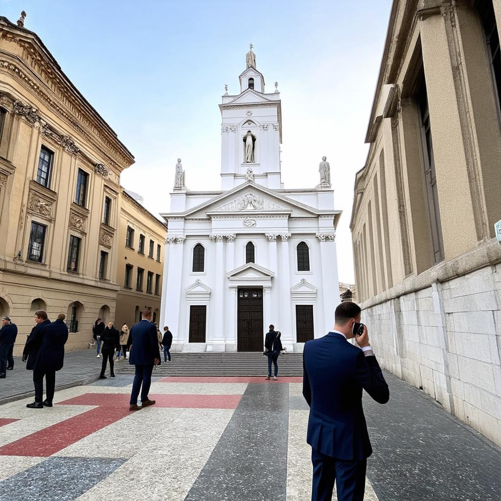 The image features a man in a suit standing on a sidewalk in front of a large white church. He is talking on his cell phone, seemingly engaged in a conversation. There are several other people in the scene, some of them wearing ties, indicating a formal or professional setting.
The church is a prominent architectural element in the background, with its white SBERT similarity: 0.65
Text-to-image model: Stable Diffusion 3 | Generated Image Text Reconstruction  The image depicts a large, ornate cathedral with a group of people walking around it. The cathedral is adorned with statues and stained glass windows, making it an impressive architectural structure. The people in the scene are walking in front of the cathedral, some closer to the building while others are further away.
There are several individuals SBERT similarity: 0.64
Text-to-image model: Stable Diffusion XL | Generated Image Text Reconstruction The image features a large, ornate cathedral with a group of people walking up the steps in front of it. There are at least nine people visible in the scene, with some of them carrying handbags. The cathedral has a grand entrance, and the people appear to be entering the building.
In the foreground, there is a car parked on the SBERT similarity: 0.62
Text-to-image model: Stable Diffusion XL (Turbo) | Generated Image Text Reconstruction The image is a black and white drawing of a large cathedral with a statue of a person in the center. The cathedral is surrounded by a group of people walking around and admiring the architecture. There are at least nine people visible in the scene, with some closer to the cathedral and others further away.
The people are carrying handbags, with three hand SBERT similarity: 0.58
Text-to-image model: Stable Diffusion 1.5 | Generated Image Text Reconstruction The image is a painting of a large, ornate cathedral with a blue and white color scheme. The cathedral is situated in a city, surrounded by tall buildings. The painting captures a bustling city scene with numerous people walking around the area.
There are at least 13 people visible in the painting, some of them carrying handbags. The SBERT similarity: 0.58
Text-to-image model: Stable Diffusion XL | Generated Image Text Reconstruction The image depicts a large, ornate building with a massive facade featuring intricate carvings and statues. The building appears to be a church or a cathedral, as it is adorned with religious figures and artwork.
There are several people walking around the building, admiring the architecture and the artwork. Some of the individuals are closer SBERT similarity: 0.56
Text-to-image model: Stable Diffusion XL | Generated Image Text Reconstruction The image features a large, ornate building with a prominent clock tower. The building has a beautiful facade, adorned with statues and intricate carvings. A man is walking past the building, admiring the architecture and the statues.
There are several other people in the scene, some of them walking near the building, while others are further away SBERT similarity: 0.56
Text-to-image model: Stable Diffusion XL (Turbo) | Generated Image Text Reconstruction The image features a large, ornate building with a tall, white pillar in the center. The building appears to be a church or a similar religious structure. There are several people gathered around the pillar, admiring its grandeur. Some of the individuals are standing closer to the pillar, while others are positioned further away.
In addition to the people, SBERT similarity: 0.56
Text-to-image model: Stable Diffusion 1.5 | Generated Image Text Reconstruction The image depicts a large group of people gathered in front of a majestic building, possibly a church or a cathedral. The people are standing in various positions, some closer to the building and others further away. They appear to be engaged in conversation or admiring the architecture of the building.
There are several suitcases scattered throughout the scene, indicating that some of SBERT similarity: 0.53
Text-to-image model: Stable Diffusion 1.5 | Generated Image Text Reconstruction The image features a large white church with a tall steeple and a clock tower. The church is located in a city setting, surrounded by several people walking around. Some of these individuals are dressed in suits, while others are wearing casual clothing.
There are at least 13 people visible in the scene, with some walking closer to the church and SBERT similarity: 0.53
Text-to-image model: Stable Diffusion 3 | Generated Image Text Reconstruction The image features a large, ornate church with a group of people walking around it. The church has a tall, white facade with a large doorway, and it is surrounded by a courtyard. The people in the scene are walking around the church, some closer to the building and others further away.
There are at least 13 people visible in the SBERT similarity: 0.48
Text-to-image model: Stable Diffusion XL (Turbo) | Generated Image Text Reconstruction The image features a group of people gathered in front of a large, white church with a clock tower. The church is situated in a city setting, surrounded by tall buildings. There are at least 12 people in the scene, some of them standing closer to the church while others are further away.
A few individuals are wearing ties, indicating a more formal att SBERT similarity: 0.47
Text-to-image model: Stable Diffusion 3 |
Generated Image Text Reconstruction The image depicts a lively scene with a group of people gathered around a large, ornate building. There are several elephants in the scene, with one elephant prominently positioned in the foreground, and two others further back. The elephants are adorned with colorful decorations, adding to the festive atmosphere. SBERT similarity: 0.77
Text-to-image model: Stable Diffusion XL (Turbo) | Generated Image Text Reconstruction The image depicts a lively scene with a large group of people gathered around a colorful and intricately decorated elephant statue. The elephant is the centerpiece of the scene, and it is adorned with various decorations, including a rainbow. The people surrounding the elephant are engaged in conversation and enjoying the festive SBERT similarity: 0.75
Text-to-image model: Stable Diffusion 1.5 | Generated Image Text Reconstruction 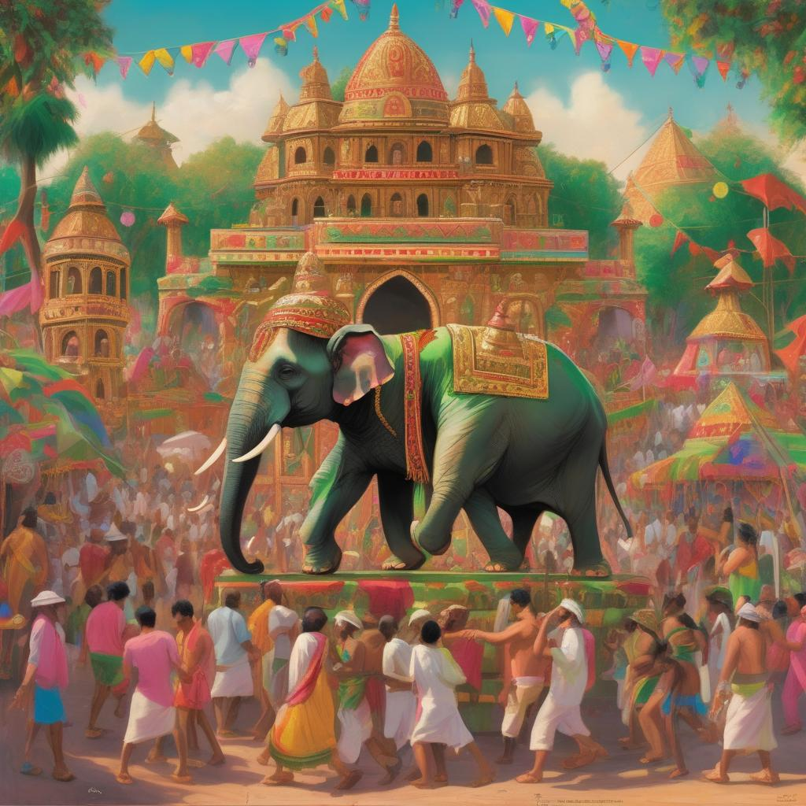 The image depicts a lively scene of a large green elephant walking down a street, surrounded by a crowd of people. The elephant is the main focus of the scene, and it appears to be participating in a parade or a special event.
There are numerous people in the image, with some standing close to the elephant and others SBERT similarity: 0.72
Text-to-image model: Stable Diffusion XL | Generated Image Text Reconstruction The image depicts a lively scene of a parade featuring two large elephants walking down the street. The elephants are surrounded by a crowd of people, some of whom are dancing and celebrating the event. The people are spread out along the street, with some standing closer to the elephants and others further away.
In addition to the SBERT similarity: 0.69
Text-to-image model: Stable Diffusion XL | Generated Image Text Reconstruction The image features a large, colorful elephant with gold and green decorations, walking down a street. The elephant is adorned with a green blanket and a gold headdress, making it a striking sight.
There are several people around the elephant, with some standing close to it and others further away. One person is standing near the SBERT similarity: 0.67
Text-to-image model: Stable Diffusion 1.5 | Generated Image Text Reconstruction The image features a lively scene with two elephants walking down a dirt road, each wearing a decorative headdress. The elephants are surrounded by a crowd of people, with some standing close to them and others further away. The people appear to be enjoying the spectacle of the elephants, possibly during a parade or a special event. SBERT similarity: 0.66
Text-to-image model: Stable Diffusion XL (Turbo) | Generated Image Text Reconstruction The image features a man walking in front of a group of elephants, with some of the elephants carrying people on their backs. The man is wearing pink pants and appears to be leading the procession. There are several other people in the scene, some of them riding the elephants and others standing nearby.
The elephants SBERT similarity: 0.65
Text-to-image model: Stable Diffusion 3 | Generated Image Text Reconstruction The image features a group of elephants walking in a line, with some of them carrying people on their backs. The elephants are positioned in front of a large building, possibly a temple or a palace. There are several people in the scene, some of them riding the elephants, while others are standing or walking nearby.
The people on SBERT similarity: 0.63
Text-to-image model: Stable Diffusion XL (Turbo) | Generated Image Text Reconstruction The image depicts a lively scene of a group of people gathered around a large elephant. The elephant is the main focus of the scene, with its trunk raised in the air. The people are standing around the elephant, with some closer to the front and others further back.
In addition to the people and the elephant, SBERT similarity: 0.61
Text-to-image model: Stable Diffusion XL | Generated Image Text Reconstruction The image features a group of people riding on the backs of several elephants. There are at least six elephants in the scene, with some of them carrying people on their backs. The people are enjoying their time on the elephants, with some of them sitting on the elephants' backs and others standing.
In addition to SBERT similarity: 0.60
Text-to-image model: Stable Diffusion 3 | Generated Image Text Reconstruction The image features a man walking down a dirt road, surrounded by a group of elephants. There are three elephants in total, with one on the left side of the man, another on the right side, and the third one further back on the right. The man appears to be leading the elephants, possibly as part of a parade or a cultural SBERT similarity: 0.59
Text-to-image model: Stable Diffusion 3 | Generated Image Text Reconstruction The image is a colorful painting depicting a lively scene of a group of people dancing and celebrating. The people are arranged in various positions, with some standing closer to the foreground and others further in the background. They are all dressed in vibrant colors, adding to the festive atmosphere.
In the center of the painting, there is a SBERT similarity: 0.50
Text-to-image model: Stable Diffusion 1.5 |
Generated Image Text Reconstruction The image features a man dressed in a knight's suit, riding a brown horse through a field of tall grass. The knight is wearing a helmet and appears to be fully geared up for battle. The horse and rider are the main focus of the scene, with the knight skillfully guiding the horse through the field. The overall atmosphere of SBERT similarity: 0.81
Text-to-image model: Stable Diffusion XL (Turbo) | Generated Image Text Reconstruction The image features a knight in full armor riding a white horse in a grassy field. The knight is wearing a helmet and holding a sword, ready for battle. The horse is positioned in the center of the scene, with the knight sitting on its back.
In the background, there are trees visible, adding to the natural setting of SBERT similarity: 0.80
Text-to-image model: Stable Diffusion XL | Generated Image Text Reconstruction The image features a man dressed in medieval armor, riding a brown horse. The man appears to be wearing a knight's outfit, complete with a helmet and a sword. The horse and rider are standing in a grassy field, creating a picturesque scene. The man's attire and the presence of the horse suggest that he might be SBERT similarity: 0.76
Text-to-image model: Stable Diffusion 3 | Generated Image Text Reconstruction The image features a knight in full armor riding a horse in a grassy field. The knight is holding a lance, ready for battle or a jousting match. The horse is positioned towards the left side of the image, with the knight sitting on its back.
In the background, there is another person standing, possibly observing the kn SBERT similarity: 0.76
Text-to-image model: Stable Diffusion 1.5 | Generated Image Text Reconstruction The image features a man dressed in a knight's costume, riding a horse in a field. The knight is wearing a suit of armor and a helmet, giving the scene a medieval atmosphere. The horse is positioned in the center of the image, with the knight sitting on its back.
Another person is standing nearby, possibly SBERT similarity: 0.76
Text-to-image model: Stable Diffusion XL | Generated Image Text Reconstruction The image features a man dressed in medieval armor, riding a brown horse in a field. The man appears to be wearing a suit of armor, which includes a helmet, and is holding a sword. The horse is positioned in the center of the scene, with the man sitting on its back.
In the background, there are a few other people SBERT similarity: 0.74
Text-to-image model: Stable Diffusion XL (Turbo) | Generated Image Text Reconstruction The image features a man dressed in medieval armor, riding a brown horse. The man appears to be wearing a suit of armor, which includes a helmet, and he is holding a sword. The horse and rider are walking through a grassy field, creating a picturesque scene. The man's attire and the presence of the horse and sword suggest SBERT similarity: 0.74
Text-to-image model: Stable Diffusion 3 | Generated Image Text Reconstruction The image features a man dressed in medieval armor, riding a white horse in a field. The man appears to be wearing a knight's outfit, complete with a helmet and a sword. The horse is positioned in the center of the scene, with the man sitting on its back.
The field is surrounded by trees, creating a serene SBERT similarity: 0.73
Text-to-image model: Stable Diffusion XL | Generated Image Text Reconstruction The image features a man dressed in medieval armor, riding a horse in a field. The man is wearing a suit of armor, which includes a helmet, and he is holding a sword. The horse is positioned in the center of the scene, with the man sitting on its back.
The field is surrounded by trees, creating a serene and SBERT similarity: 0.72
Text-to-image model: Stable Diffusion XL (Turbo) | Generated Image Text Reconstruction The image features a man dressed in medieval armor, standing next to a white horse. The man appears to be a knight, and the horse is likely his steed. The scene takes place in a grassy field, with the man and the horse positioned close to each other. The man is holding a sword, which is a common weapon for knights during medieval times SBERT similarity: 0.70
Text-to-image model: Stable Diffusion 1.5 | Generated Image Text Reconstruction The image features a man dressed in medieval armor, riding a brown horse. The man appears to be wearing a suit of armor, which includes a helmet, and he is holding the reins of the horse. The horse is positioned in the center of the scene, with the man sitting on its back.
In the background, there is a large SBERT similarity: 0.70
Text-to-image model: Stable Diffusion 3 | Generated Image Text Reconstruction 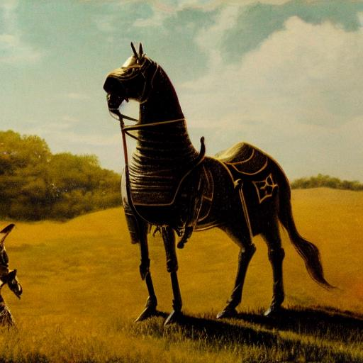 The image features a majestic horse standing in a grassy field, with a person nearby. The horse is wearing a harness, and the person appears to be leading or guiding the horse. The scene is set against a backdrop of a hill, creating a serene and picturesque atmosphere. The horse and the person are the main subjects of the image, with the SBERT similarity: 0.59
Text-to-image model: Stable Diffusion 1.5 |
Generated Image Text Reconstruction The image features a red fence with a sign posted on it. The fence is located near a brick wall, and there is a gate in the middle of the fence. The sign is positioned on the left side of the fence, and it appears to be a warning sign.
In the background, there is a tree visible, adding a touch of nature SBERT similarity: 0.69
Text-to-image model: Stable Diffusion 3 | Generated Image Text Reconstruction The image features a red brick wall with a metal gate and a sign on it. The sign is attached to the gate, and it appears to be a warning or informational sign. The gate is open, allowing access to the area beyond the wall.
In the background, there is a tree visible, adding a touch of nature to the scene. Additionally, there are two SBERT similarity: 0.63
Text-to-image model: Stable Diffusion 3 | Generated Image Text Reconstruction The image features a red metal fence with a sign attached to it. The sign is positioned in the middle of the fence, and it appears to be providing information or directions to passersby. The fence is located near a brick wall, which adds to the overall aesthetic of the scene.
In the background, there is a tree that provides SBERT similarity: 0.60
Text-to-image model: Stable Diffusion 3 | Generated Image Text Reconstruction The image features a brick wall with a metal fence in front of it. A sign is attached to the brick wall, possibly providing information or directions. The brick wall is located near a road, and there is a tree in the background. The scene appears to be set in a rural or suburban area. SBERT similarity: 0.59
Text-to-image model: Stable Diffusion XL (Turbo) | Generated Image Text Reconstruction The image features a red metal gate with a sign attached to it. The sign is written in a foreign language, possibly French, and it appears to be a set of rules or regulations. The gate is located in front of a building, and there are some bushes nearby. The scene also includes a person standing in the background, possibly observing the gate or the sign. SBERT similarity: 0.59
Text-to-image model: Stable Diffusion XL (Turbo) | Generated Image Text Reconstruction 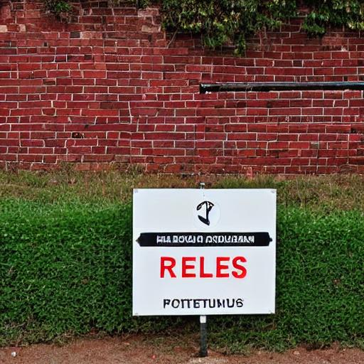 The image features a white sign with red letters, placed in front of a brick wall. The sign is positioned on a pole, making it easily visible. The brick wall appears to be a part of a building, and the sign is likely providing information or directions to passersby. SBERT similarity: 0.59
Text-to-image model: Stable Diffusion 1.5 | Generated Image Text Reconstruction The image features a brick wall with a sign attached to it. The sign is written in a foreign language, making it difficult to understand. The wall is located next to a grassy area, and there is a pole nearby. The scene appears to be set in a city, with a building visible in the background. SBERT similarity: 0.56
Text-to-image model: Stable Diffusion 1.5 | Generated Image Text Reconstruction The image features a large wooden gate with a metal fence, located in front of a red brick building. The gate is closed, and the fence extends to the right side of the scene. The building appears to be a warehouse or a similar industrial structure.
In the background, there is a tree that adds a touch of greenery to the scene. A SBERT similarity: 0.56
Text-to-image model: Stable Diffusion XL | Generated Image Text Reconstruction 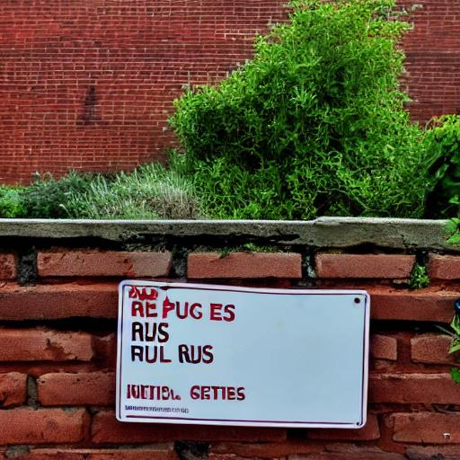 The image features a brick wall with a sign attached to it. The sign is written in a foreign language, making it difficult to understand. The wall is located in front of a building, and there are several potted plants placed around the area. Some of these plants are placed close to the wall, while others are situated further away. The combination of the brick wall, the foreign SBERT similarity: 0.53
Text-to-image model: Stable Diffusion 1.5 | Generated Image Text Reconstruction The image features a red brick wall with a green ivy growing on it. The wall is part of a red brick building, and the ivy is spreading over the top of the wall, giving it a lush and natural appearance.
In the scene, there is a red metal gate situated next to the brick wall. The gate is closed, and the brick SBERT similarity: 0.49
Text-to-image model: Stable Diffusion XL | Generated Image Text Reconstruction The image features a rusty sign with the word "RUNES" written on it, located on a red pole. The sign is positioned in front of a fence, and there are some bushes nearby. The scene appears to be set in a residential area, with a house visible in the background. SBERT similarity: 0.47
Text-to-image model: Stable Diffusion XL (Turbo) | Generated Image Text Reconstruction The image features a brick wall with a plaque mounted on it. The plaque is positioned in the middle of the wall, and it appears to be a historical marker. The wall is made of red bricks, and the plaque stands out against the background.
In addition to the plaque, there are two potted plants in the scene. One plant is SBERT similarity: 0.45
Text-to-image model: Stable Diffusion XL |
Generated Image Text Reconstruction The image features a red and white train parked at a train station. The train is positioned on the tracks, occupying a significant portion of the scene. The train's front is prominently visible, with the letters "BTS" displayed on the front.
There are several people in the scene, with some standing near the train and others scattered around the SBERT similarity: 0.65
Text-to-image model: Stable Diffusion 3 | Generated Image Text Reconstruction The image depicts the interior of a red and white train car, which appears to be a subway or commuter train. The train car is empty, with no passengers visible. The train car is divided into two sections, with one section featuring blue seats and the other section having red seats. The blue seats are located on the left side of the train car, while the SBERT similarity: 0.61
Text-to-image model: Stable Diffusion XL | Generated Image Text Reconstruction The image features a blue and white train traveling down the tracks, likely at a train station. The train is positioned in the middle of the scene, with its front end visible. The train appears to be a commuter train, designed for public transportation.
There are several people in the scene, with some standing near the train and others scattered around the platform. SBERT similarity: 0.60
Text-to-image model: Stable Diffusion XL | Generated Image Text Reconstruction The image features a blue and red train stopped at a train station. The train is positioned on the tracks, occupying a significant portion of the scene. The train has a yellow stripe, adding a pop of color to the scene.
There are several people visible in the image, likely waiting for the train or walking around the station. Some of them are closer to SBERT similarity: 0.58
Text-to-image model: Stable Diffusion XL (Turbo) | Generated Image Text Reconstruction The image features a red, white, and blue train parked at a train station. The train is positioned on the tracks, occupying a significant portion of the scene. The train's front is visible, with its doors open, allowing passengers to board or disembark.
There are several people in the scene, with some standing near the train and others scattered SBERT similarity: 0.57
Text-to-image model: Stable Diffusion 3 | Generated Image Text Reconstruction The image features a red and white train traveling down the tracks, likely in a train station. The train is positioned in the center of the scene, with its front end visible. The train appears to be a passenger train, as it is designed to transport people rather than cargo.
There are several people in the scene, with some standing near the train and others scattered SBERT similarity: 0.53
Text-to-image model: Stable Diffusion XL | Generated Image Text Reconstruction The image depicts a long, narrow subway train car with red and white stripes. The train car is empty, with no passengers visible inside. The train car is situated between two other train cars, creating a sense of depth in the scene. The train car extends from the left side of the image to the right, with the red and white stripes running along the SBERT similarity: 0.53
Text-to-image model: Stable Diffusion 1.5 | Generated Image Text Reconstruction The image features a red and white train parked on the tracks at a train station. The train is positioned next to a concrete wall, and it appears to be a passenger train. There are several people in the scene, with some standing near the train and others scattered around the station.
In addition to the train, there are two cars visible in the background, one SBERT similarity: 0.52
Text-to-image model: Stable Diffusion 3 | Generated Image Text Reconstruction The image features a red and white train parked at a station. The train is positioned on the left side of the scene, occupying a significant portion of the image. The train appears to be a subway or commuter train, as it is designed to transport passengers.
There are several people in the scene, with some standing closer to the train and others further SBERT similarity: 0.51
Text-to-image model: Stable Diffusion 1.5 | Generated Image Text Reconstruction The image features a red and white train traveling on a track, possibly in a subway or train station. The train is positioned in the middle of the scene, with its length extending from the left to the right side of the image.
There are several people visible in the scene, with some standing closer to the train and others further away. They appear to be SBERT similarity: 0.51
Text-to-image model: Stable Diffusion 1.5 | Generated Image Text Reconstruction The image features a red and white train traveling down the tracks, passing by a train station. The train is positioned in the middle of the scene, with its length extending from the left to the right side of the image.
There are several people visible in the scene, likely waiting for the train or walking around the station. Some of them are closer to the train SBERT similarity: 0.51
Text-to-image model: Stable Diffusion XL (Turbo) | Generated Image Text Reconstruction The image features a white and red train parked at a train station. The train is positioned on the tracks, occupying a significant portion of the scene. There are several people in the station, with some standing closer to the train and others further away.
In addition to the train and people, there are two benches in the station, one located near the left SBERT similarity: 0.48
Text-to-image model: Stable Diffusion XL (Turbo) |
Generated Image Text Reconstruction The image features a large, illuminated sign that reads "PRADA." The sign is lit up with yellow lights, making it stand out against the dark background. The letters are arranged in a horizontal line, with the word "PRADA" written in a bold and eye-catching style. The sign is positioned in the upper part of the image, capt SBERT similarity: 0.78
Text-to-image model: Stable Diffusion 3 | Generated Image Text Reconstruction The image features a large, illuminated sign that reads "PRADA." The sign is lit up with a yellow light, making it stand out against the dark background. The letters are arranged in a horizontal line, with the word "PRADA" written in a bold and prominent manner. The sign is likely located in a store or a building, as it is designed SBERT similarity: 0.75
Text-to-image model: Stable Diffusion 3 | Generated Image Text Reconstruction The image features a black and yellow logo for Prada, a luxury fashion brand. The logo is displayed prominently in the center of the image, with a yellow letter "P" surrounded by a black background. The design is simple and elegant, showcasing the brand's sophisticated style. SBERT similarity: 0.72
Text-to-image model: Stable Diffusion XL (Turbo) | Generated Image Text Reconstruction The image features a large, three-dimensional letter "P" in yellow, with a black outline. The letter is prominently displayed in the center of the image, capturing attention. The background is a neutral gray, which allows the yellow letter to stand out even more. The overall design is simple and bold, making it an effective logo or symbol. SBERT similarity: 0.64
Text-to-image model: Stable Diffusion XL | Generated Image Text Reconstruction The image features a close-up of a neon sign with the letters "PPF" written in yellow. The sign is illuminated, making the letters stand out against the dark background. The letters are arranged in a row, with the first letter on the left side, the second letter in the middle, and the third letter on the right side. The sign appears to SBERT similarity: 0.63
Text-to-image model: Stable Diffusion 1.5 | Generated Image Text Reconstruction The image features a large, ornate letter "R" prominently displayed in the center. The letter is surrounded by a decorative frame, which includes a gold border and a black background. The design of the letter "R" is intricate and eye-catching, making it the focal point of the image. SBERT similarity: 0.59
Text-to-image model: Stable Diffusion XL | Generated Image Text Reconstruction The image features a large, illuminated sign with the word "PRADR" written on it. The sign is mounted on a wall, and the letters are lit up, making them stand out against the dark background. The sign appears to be a logo or a name, possibly representing a company or a brand. SBERT similarity: 0.59
Text-to-image model: Stable Diffusion 3 | Generated Image Text Reconstruction  The image features a neon sign with the word "ZD" written in yellow letters. The sign is illuminated, making it stand out against the dark background. The letters are arranged in a way that resembles a triangle, with the first letter "Z" on the left side, the second letter "D" in the middle, and the third letter "D SBERT similarity: 0.56
Text-to-image model: Stable Diffusion 1.5 | Generated Image Text Reconstruction The image features a large, golden letter "A" prominently displayed on a black background. The letter is made of gold and has a shiny appearance, giving it a luxurious and elegant look. The contrast between the gold letter and the dark background highlights the letter's importance and draws attention to it. SBERT similarity: 0.52
Text-to-image model: Stable Diffusion XL | Generated Image Text Reconstruction The image features a large, illuminated yellow letter "4" on a wall. The letter is prominently displayed, with the light shining brightly, making it stand out against the background. The lighting creates a striking visual effect, drawing attention to the number four. SBERT similarity: 0.48
Text-to-image model: Stable Diffusion 1.5 | Generated Image Text Reconstruction The image features a large, golden letter "K" prominently displayed on a black background. The letter is surrounded by a gold frame, giving it a fancy and elegant appearance. The contrast between the black background and the golden letter "K" makes the image visually striking and eye-catching. SBERT similarity: 0.47
Text-to-image model: Stable Diffusion XL (Turbo) | Generated Image Text Reconstruction The image features a large, golden, and black square with a prominent "M" symbol in the center. The "M" is surrounded by a black background, making it stand out even more. The square is positioned in the upper left part of the image, and it appears to be the main focus of the scene. SBERT similarity: 0.45
Text-to-image model: Stable Diffusion XL (Turbo) |
Generated Image Text Reconstruction  The image features a large rock wall situated next to a body of water, possibly a lake. The rock wall is made up of various sizes of rocks, creating a natural and sturdy barrier. The rocks are arranged in a way that they appear to be stacked on top of each other, giving the wall a solid and impressive appearance.
In the background, SBERT similarity: 0.73
Text-to-image model: Stable Diffusion XL | Generated Image Text Reconstruction The image features a large pile of rocks stacked on top of each other, creating a rock wall. The rocks are of various sizes and are arranged in a way that they form a tower-like structure. The scene is set in a natural environment, with a body of water visible in the background. The water appears to be a lake, and the rocks are situated near the SBERT similarity: 0.73
Text-to-image model: Stable Diffusion 1.5 | Generated Image Text Reconstruction The image features a rock wall situated next to a body of water, possibly a lake. The rock wall is made of large, white rocks, and it extends from the water's edge to the top of the hill. The rocks are arranged in a way that creates a natural barrier between the water and the surrounding area.
In the background, there are trees visible, SBERT similarity: 0.73
Text-to-image model: Stable Diffusion XL (Turbo) | Generated Image Text Reconstruction The image features a large pile of rocks situated on a rock wall near a body of water. The rocks are stacked on top of each other, creating a unique and interesting structure. The water appears to be calm, and the rocks are positioned in such a way that they seem to be floating on the water's surface. The scene is set against a backdrop of SBERT similarity: 0.71
Text-to-image model: Stable Diffusion 3 | Generated Image Text Reconstruction The image features a large rock wall built along the edge of a body of water, possibly a lake or a river. The rock wall is quite impressive, extending from one end of the scene to the other.
In addition to the rock wall, there is a pile of rocks situated on top of the wall. These rocks are of various sizes and are scattered across SBERT similarity: 0.71
Text-to-image model: Stable Diffusion 3 | Generated Image Text Reconstruction The image features a large pile of rocks situated near a body of water, possibly a lake. The rocks are stacked on top of each other, creating a rock wall or a rock pile. The scene is set in a natural environment, with trees surrounding the area. The rocks vary in size and are scattered throughout the scene, with some closer to the water and others further SBERT similarity: 0.68
Text-to-image model: Stable Diffusion XL (Turbo) | Generated Image Text Reconstruction The image features a large stone wall or rock barrier situated next to a body of water, possibly a river or a lake. The wall is made of various rocks and stones, creating a unique and natural appearance. The water appears calm and serene, reflecting the tranquility of the scene.
In the background, there are trees that provide a sense of depth and SBERT similarity: 0.68
Text-to-image model: Stable Diffusion 3 | Generated Image Text Reconstruction The image features a large pile of rocks, boulders, and stones, with some of them being quite large. The rocks are scattered throughout the scene, with some positioned closer to the foreground and others further in the background. The pile of rocks is situated near a forest, creating a natural and rugged atmosphere. The rocks are of various sizes and shapes, SBERT similarity: 0.64
Text-to-image model: Stable Diffusion 1.5 | Generated Image Text Reconstruction The image features a rock pile situated near a body of water, possibly a lake. The rock pile is made up of various sizes of rocks, with some larger rocks at the base and smaller rocks on top. The pile is located on a rocky shore, creating a unique and interesting scene.
In the background, there are trees visible, adding to the natural SBERT similarity: 0.63
Text-to-image model: Stable Diffusion XL | Generated Image Text Reconstruction The image features a large pile of rocks situated next to a body of water, possibly a river or a lake. The rocks are of various sizes and are stacked on top of each other, creating a rocky hill. The water is calm and serene, providing a peaceful setting for the rock pile. The scene is surrounded by trees, adding to the natural beauty SBERT similarity: 0.61
Text-to-image model: Stable Diffusion XL | Generated Image Text Reconstruction The image features a large pile of rocks situated next to a body of water, possibly a lake. The rocks are of various sizes and are scattered throughout the scene. Some rocks are closer to the water, while others are further away, creating a sense of depth and texture. The rocks are positioned in different orientations, adding to the overall visual interest of the scene. The SBERT similarity: 0.58
Text-to-image model: Stable Diffusion XL (Turbo) | Generated Image Text Reconstruction The image features a serene scene with a large tree situated near a body of water, possibly a lake. The tree is surrounded by a pile of rocks, creating a unique and natural landscape. The water appears calm and inviting, with the tree and rocks providing a picturesque backdrop. The overall atmosphere of the scene is peaceful and tranquil, making it an SBERT similarity: 0.48
Text-to-image model: Stable Diffusion 1.5 |
Generated Image Text Reconstruction The image features a city street with a row of red brick buildings. There are two hair salons on the street, one on the left side and the other on the right side. The left salon has a red storefront, while the right salon has a white storefront.
In front of the salons, there are several bottles placed on the sidewalk SBERT similarity: 0.70
Text-to-image model: Stable Diffusion 3 | Generated Image Text Reconstruction 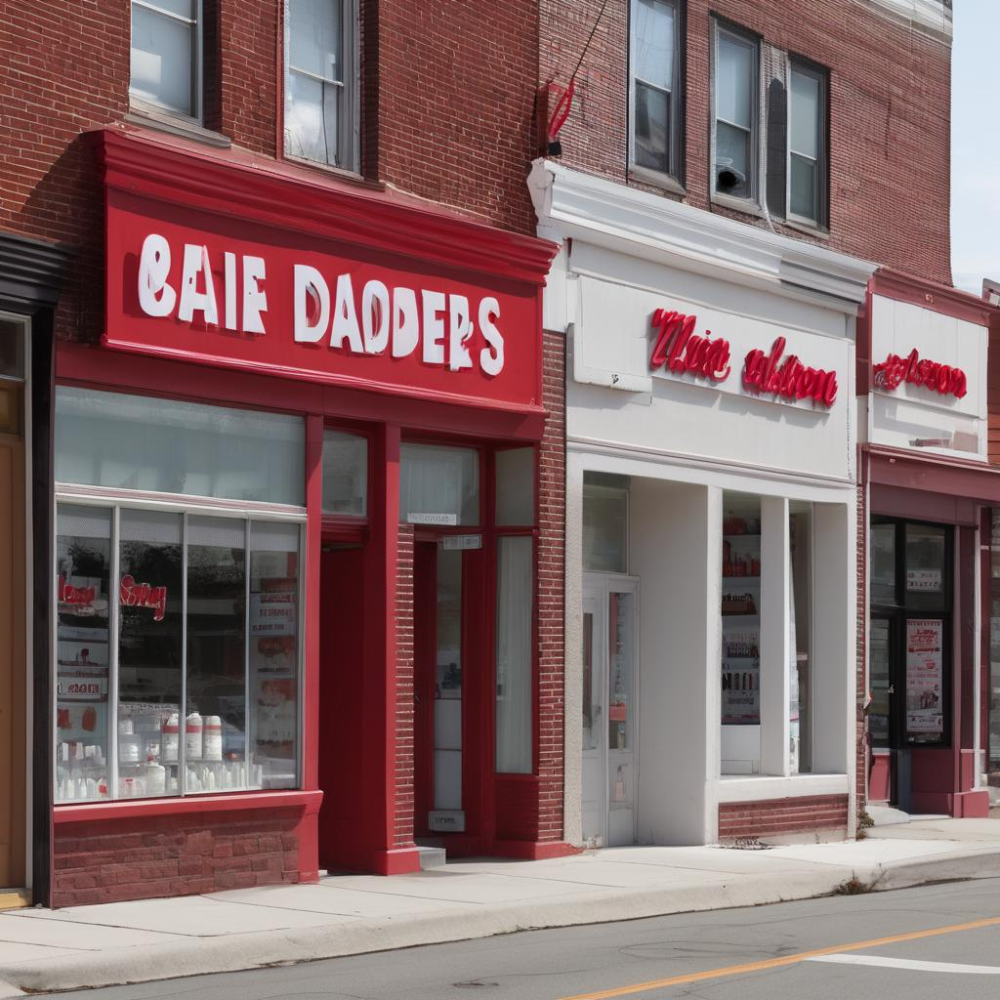 The image depicts a city street with a row of small businesses, including a wine shop and a restaurant. The buildings are painted in red and white colors, giving the area a vibrant and lively atmosphere. The storefronts are adorned with various signs, indicating the different businesses present.
There are several people walking along the sidewalk, SBERT similarity: 0.68
Text-to-image model: Stable Diffusion XL | Generated Image Text Reconstruction The image features a city street with a row of small businesses, including a nail salon and a barber shop. The nail salon is located on the left side of the street, while the barber shop is on the right side. Both shops have their respective signs, making it easy for passersby to identify them.
There are several people SBERT similarity: 0.68
Text-to-image model: Stable Diffusion 3 | Generated Image Text Reconstruction 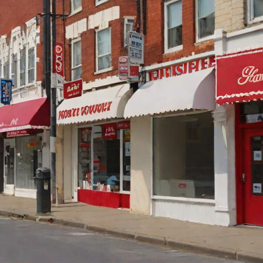 The image depicts a city street with a row of small businesses, including a barber shop and a restaurant. The barber shop is located on the left side of the street, while the restaurant is situated on the right side. The street is lined with various storefronts, and the buildings are adorned with awnings.
There are several SBERT similarity: 0.64
Text-to-image model: Stable Diffusion XL (Turbo) | Generated Image Text Reconstruction The image features a city street with a red building that houses a barber shop and a salon. The barber shop is located on the left side of the building, while the salon is situated on the right side. The building is adorned with a red awning, which adds to its vibrant appearance.
There are several cars parked along the SBERT similarity: 0.63
Text-to-image model: Stable Diffusion XL | Generated Image Text Reconstruction The image depicts a lively city street with a row of small businesses, including a restaurant and a store. The storefronts are adorned with colorful signs, making the area visually appealing. The street is bustling with activity, as several people can be seen walking along the sidewalk, engaging in various activities.
There are SBERT similarity: 0.60
Text-to-image model: Stable Diffusion XL (Turbo) | Generated Image Text Reconstruction 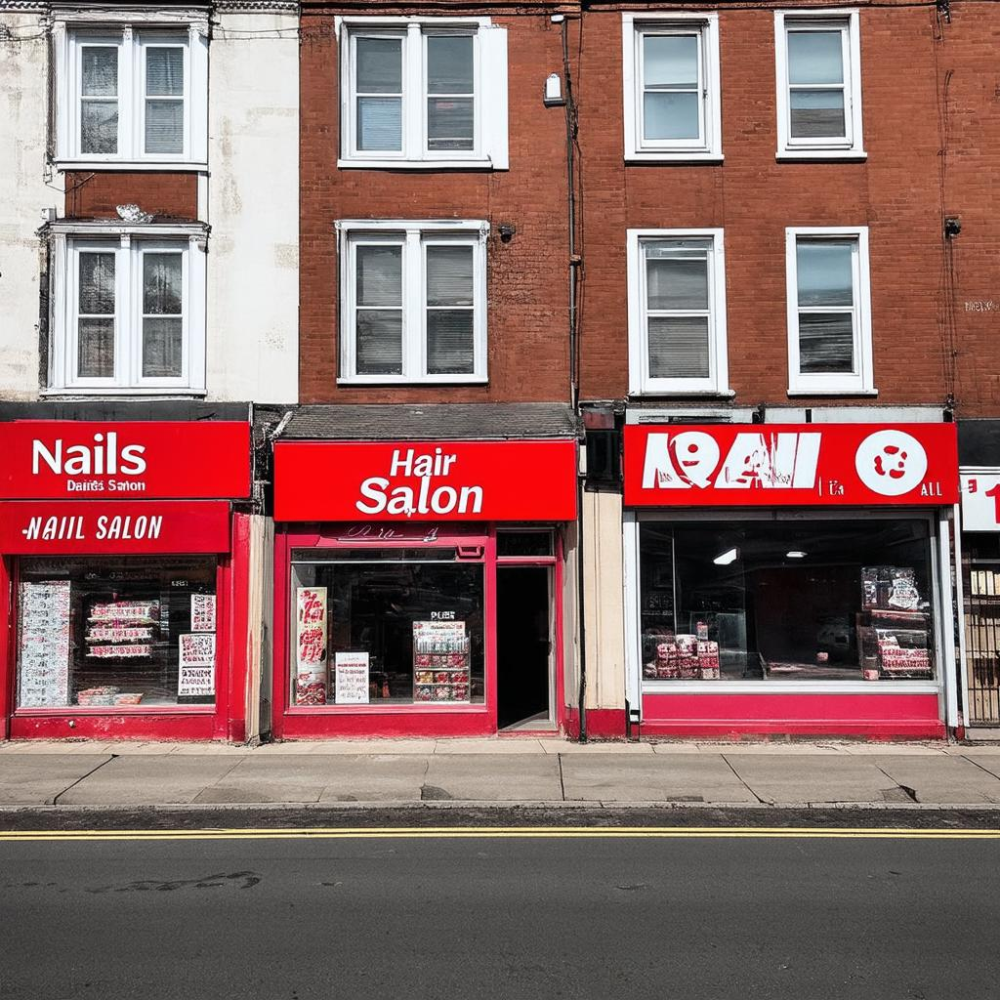 The image features a city street with two hair salons located next to each other. The salons are situated between two buildings, with one building on the left side and the other on the right side. The salons have large windows, allowing for ample natural light to enter the space.
There are several people visible in the scene, with one person standing near the left SBERT similarity: 0.57
Text-to-image model: Stable Diffusion 3 | Generated Image Text Reconstruction The image depicts a city street lined with various businesses, including a bathhouse. The street is bustling with activity, as several cars are parked along the sidewalk. There are at least five cars visible in the scene, with one car parked closer to the foreground and the others further down the street.
In addition to the cars, SBERT similarity: 0.51
Text-to-image model: Stable Diffusion XL (Turbo) | Generated Image Text Reconstruction The image depicts a city street with a row of colorful buildings lining the sidewalk. There are two red cars parked on the street, one closer to the left side and the other near the center. A silver car is also parked on the right side of the street.
In addition to the cars, there are several people walking along the sidewalk SBERT similarity: 0.50
Text-to-image model: Stable Diffusion 1.5 | Generated Image Text Reconstruction The image depicts a busy city street with a white car parked on the side of the road. The car is positioned near the center of the scene, and there are several people walking around the area. Some of these pedestrians are closer to the car, while others are further away, giving a sense of a bustling urban environment.
In SBERT similarity: 0.47
Text-to-image model: Stable Diffusion 1.5 | Generated Image Text Reconstruction The image features a small red brick building with a red awning, likely a shop or a restaurant. The building is situated on a street corner, and there is a car parked in front of it. The car is positioned towards the right side of the building, occupying a significant portion of the scene.
There are two people in the image, one standing closer SBERT similarity: 0.46
Text-to-image model: Stable Diffusion XL | Generated Image Text Reconstruction The image depicts a busy city street with several cars parked along the sidewalk. There are at least five cars visible in the scene, with one car parked closer to the foreground and the others further down the street. A truck is also parked on the side of the road.
In addition to the vehicles, there are two traffic lights in the SBERT similarity: 0.40
Text-to-image model: Stable Diffusion 1.5 |
Generated Image Text Reconstruction The image features a large, old building situated next to a body of water, possibly a river or a lake. The building appears to be abandoned and is surrounded by a snowy landscape. The structure is made of stone and has a distinctive appearance, with a waterfall nearby.
There are several people scattered around the scene, possibly admiring the view or exploring the SBERT similarity: 0.71
Text-to-image model: Stable Diffusion 3 | Generated Image Text Reconstruction The image features a snow-covered bridge over a river, with a wooden walkway leading to a dock. The bridge is surrounded by a beautiful mountain landscape, creating a serene and picturesque scene. The snow-covered ground and the presence of the mountain in the background add to the wintry atmosphere of the scene. SBERT similarity: 0.55
Text-to-image model: Stable Diffusion 1.5 | Generated Image Text Reconstruction The image features a large waterfall with a bridge crossing over it. The bridge is situated in the middle of the scene, and the waterfall is on the left side of the image. A building, possibly a house or a factory, is located near the waterfall, with a dock extending out into the water.
There are several people in the scene, with one person SBERT similarity: 0.52
Text-to-image model: Stable Diffusion 3 | Generated Image Text Reconstruction The image depicts a snow-covered bridge over a river, surrounded by a forest. The bridge is made of wood and appears to be old, with a few wooden posts visible. The river below the bridge is also covered in snow, creating a serene winter scene.
In the foreground, there are several birds perched on the snow-covered ground SBERT similarity: 0.52
Text-to-image model: Stable Diffusion 1.5 | Generated Image Text Reconstruction 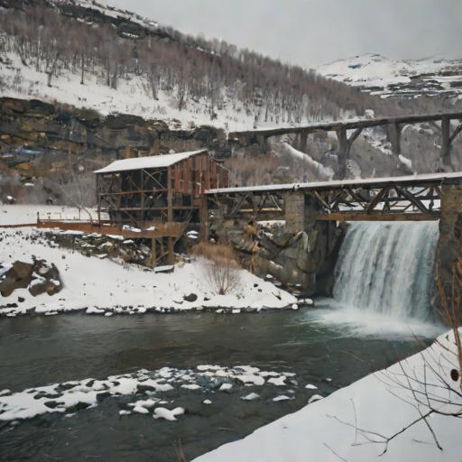 The image features a beautiful waterfall with a bridge crossing over it. The bridge is made of wood and stone, and it spans across the waterfall, creating a picturesque scene. The waterfall is surrounded by a snow-covered landscape, adding to the serene atmosphere.
In the foreground, there is a small cabin or building, possibly a house or SBERT similarity: 0.51
Text-to-image model: Stable Diffusion XL (Turbo) | Generated Image Text Reconstruction The image features a beautiful waterfall cascading down a snow-covered mountain. The waterfall is surrounded by a picturesque landscape, with a bridge crossing over the water. The bridge is made of wood and appears to be a part of a train track, as there is a train visible in the background.
In addition to the train, there are two people in SBERT similarity: 0.51
Text-to-image model: Stable Diffusion XL (Turbo) | Generated Image Text Reconstruction The image features a picturesque scene of a waterfall cascading down a snow-covered mountain. The waterfall is surrounded by a beautiful landscape, with a bridge visible in the background. The bridge spans across the scene, connecting different parts of the landscape.
In addition to the waterfall and bridge, there are several birds scattered throughout the scene, adding a SBERT similarity: 0.49
Text-to-image model: Stable Diffusion XL (Turbo) | Generated Image Text Reconstruction The image features a small wooden house situated near a waterfall and a body of water. The house is located on a pier, surrounded by a serene and picturesque landscape. The waterfall is visible in the background, adding to the beauty of the scene.
In addition to the house, there is a bridge nearby, which connects the house to the other side of SBERT similarity: 0.47
Text-to-image model: Stable Diffusion 3 | Generated Image Text Reconstruction The image features a picturesque scene of a waterfall cascading down a mountain, with a bridge crossing over the water. The bridge is made of wood and stone, and it spans across the water, providing a stunning view of the waterfall.
The waterfall is surrounded by a lush forest, with trees of various sizes lining the landscape. The SBERT similarity: 0.47
Text-to-image model: Stable Diffusion XL | Generated Image Text Reconstruction The image features a beautiful waterfall with a bridge crossing over it. The bridge is located near the top of the waterfall, and it appears to be a wooden structure. The waterfall is surrounded by a lush forest, creating a serene and picturesque scene.
There is a staircase leading down to the waterfall, providing a path for visitors to explore SBERT similarity: 0.46
Text-to-image model: Stable Diffusion 1.5 | Generated Image Text Reconstruction The image features a beautiful waterfall with a bridge crossing over it. The bridge is situated in the middle of the scene, and the waterfall cascades down from the left side of the image towards the right. The waterfall is surrounded by a lush, snow-covered landscape, creating a serene and picturesque setting.
In the foreground, there SBERT similarity: 0.42
Text-to-image model: Stable Diffusion XL | Generated Image Text Reconstruction The image features a picturesque scene of a train crossing a bridge over a waterfall. The bridge is situated above a river, and the train is traveling across it, providing a sense of motion and depth to the scene. The waterfall cascades down from a higher elevation, creating a captivating backdrop for the train's journey. The combination of the SBERT similarity: 0.42
Text-to-image model: Stable Diffusion XL |
Generated Image Text Reconstruction 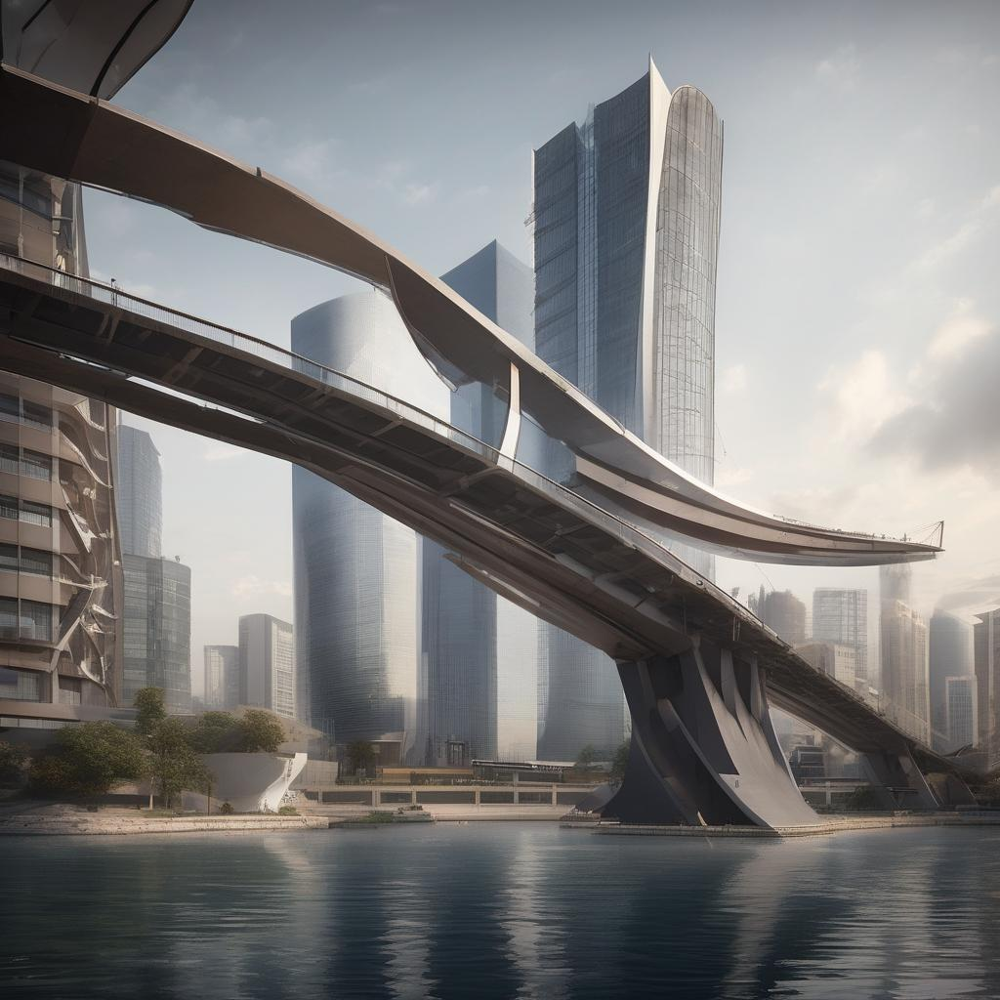 The image features a futuristic cityscape with a large, curved bridge that spans over a body of water. The bridge is situated between two tall buildings, creating a striking architectural feature. The cityscape is further enhanced by the presence of several other buildings in the background, showcasing a bustling urban environment.
In addition to the SBERT similarity: 0.78
Text-to-image model: Stable Diffusion XL | Generated Image Text Reconstruction The image features a futuristic cityscape with a large, curved building prominently displayed in the center. The building has a unique design, resembling a large, black, and white sculpture. It is situated on a bridge that spans across a river, connecting two parts of the city.
In addition to the main building, there are several SBERT similarity: 0.76
Text-to-image model: Stable Diffusion XL | Generated Image Text Reconstruction The image is an aerial view of a city with a large skyscraper prominently featured in the center. The skyscraper is surrounded by a bustling urban environment, with several other buildings of varying heights surrounding it.
In the foreground, there is a bridge that spans across the water, connecting different parts of the city. A SBERT similarity: 0.68
Text-to-image model: Stable Diffusion XL (Turbo) | Generated Image Text Reconstruction The image features a large, modern building with a bridge extending over a body of water. The bridge connects the building to another structure, creating a unique architectural element. The building itself is quite tall, with a prominent glass facade.
In the scene, there are several people scattered around the area, possibly admiring the view or going about their daily activities. Some SBERT similarity: 0.68
Text-to-image model: Stable Diffusion 3 | Generated Image Text Reconstruction  The image features a large, modern building with a unique circular shape, situated next to a body of water. The building appears to be a part of a bridge, as it extends out over the water. The structure is surrounded by several flags, adding a sense of grandeur to the scene.
In the background, there are two tall skyscrapers, one on SBERT similarity: 0.67
Text-to-image model: Stable Diffusion 3 | Generated Image Text Reconstruction The image features a large city with a prominent river running through it. The cityscape is dominated by several tall buildings, including a skyscraper that stands out among the others. The buildings are situated along the river, creating a picturesque view of the city.
In addition to the buildings, there are a few boats visible in the water, with one boat SBERT similarity: 0.67
Text-to-image model: Stable Diffusion XL (Turbo) | Generated Image Text Reconstruction The image features a large city with a bridge crossing over a body of water. The bridge is surrounded by tall buildings, creating an impressive urban landscape. There are several skyscrapers in the background, with one of them being a crane building.
In addition to the bridge and buildings, there are a few cars visible in the scene, likely driving on the SBERT similarity: 0.66
Text-to-image model: Stable Diffusion 3 | Generated Image Text Reconstruction The image is a futuristic cityscape featuring a large body of water with a bridge crossing over it. The bridge is surrounded by several tall buildings, including a prominent skyscraper on the left side of the scene. The buildings are designed in a modern style, with some appearing to be made of glass.
There are a few people scattered throughout the scene, SBERT similarity: 0.65
Text-to-image model: Stable Diffusion XL | Generated Image Text Reconstruction The image showcases a bustling cityscape with a large body of water in the center. The city is filled with numerous tall buildings, including skyscrapers and other structures, creating a dense urban environment. The buildings are situated along the waterfront, with some buildings extending out over the water.
In addition to the buildings, there are several cars and SBERT similarity: 0.63
Text-to-image model: Stable Diffusion 1.5 | Generated Image Text Reconstruction The image features a cityscape with a large number of skyscrapers towering over the urban landscape. The buildings are of various heights and architectural styles, creating a dense and bustling city environment.
In the midst of this urban scene, a kite can be seen flying high in the sky, adding a touch of playfulness and le SBERT similarity: 0.61
Text-to-image model: Stable Diffusion 1.5 | Generated Image Text Reconstruction The image is a bird's eye view of a bustling city with a mix of tall buildings and a highway. The cityscape is filled with various buildings, some of which are curved and have a futuristic appearance. The highway is surrounded by trees, adding a touch of greenery to the urban landscape.
There are several cars visible on the highway SBERT similarity: 0.60
Text-to-image model: Stable Diffusion 1.5 | Generated Image Text Reconstruction The image features a large city with a prominent river running through it. On one side of the river, there is a row of tall buildings, including a skyscraper and a cathedral. The buildings are situated on a peninsula, creating a picturesque scene.
In the foreground, there is a boat visible on the water, adding to the bust SBERT similarity: 0.58
Text-to-image model: Stable Diffusion XL (Turbo) |
Generated Image Text Reconstruction The image features a man wearing a suit and tie, standing in a room and holding a sign that reads "Gun Safety." The man appears to be promoting gun safety awareness. The sign is positioned in front of him, and he is holding it up for the viewer to see.
In the room, there is a dining table visible SBERT similarity: 0.73
Text-to-image model: Stable Diffusion 3 | Generated Image Text Reconstruction  The image features a man wearing a suit and tie, standing in a room. He is holding a sign that reads "Gun Safety." The man appears to be a businessman, possibly advocating for gun safety measures.
In the room, there is a dining table visible in the background, along with a few books scattered around the area. The man' SBERT similarity: 0.73
Text-to-image model: Stable Diffusion 3 | Generated Image Text Reconstruction The image features a man wearing a suit and tie, standing in front of a table. He is holding a sign that reads "gun safety." The man appears to be a politician or someone advocating for gun safety measures.
In the background, there is a dining table with a chair positioned near it. A book can be seen placed on the table, possibly SBERT similarity: 0.71
Text-to-image model: Stable Diffusion 3 | Generated Image Text Reconstruction The image features a man wearing a suit and tie, standing in front of a sign. He is holding a white card with the word "Safety" written on it. The man appears to be the main focus of the scene, and the sign in the background adds context to the image. SBERT similarity: 0.70
Text-to-image model: Stable Diffusion XL (Turbo) | Generated Image Text Reconstruction The image features a man wearing a suit and tie, standing in front of a sign. He appears to be looking at the camera, possibly posing for a picture. The man is positioned in the center of the scene, with the sign visible behind him. The suit and tie give the impression that the man is dressed for a formal or professional occasion. SBERT similarity: 0.62
Text-to-image model: Stable Diffusion XL (Turbo) | Generated Image Text Reconstruction The image features a man wearing a suit and tie, standing in front of a large American flag. He appears to be posing for a picture, possibly for a business or promotional event. The man is holding a gun in his hand, which is an unusual accessory for a formal attire. The combination of the suit, tie, and gun creates an interesting and SBERT similarity: 0.56
Text-to-image model: Stable Diffusion 1.5 | Generated Image Text Reconstruction The image features a man wearing a suit and tie, standing in front of a table. The table is covered with numerous business cards, which the man appears to be looking at or organizing. The man is positioned in the center of the scene, with the table occupying most of the background. The suit and tie give the impression that the man is a professional or att SBERT similarity: 0.55
Text-to-image model: Stable Diffusion XL | Generated Image Text Reconstruction The image features a man wearing a suit and tie, standing in front of a wall covered with numerous papers. He appears to be a businessman, possibly a politician, as he is dressed formally and is adjusting his tie. The wall behind him is filled with various papers, which could be important documents or notes related to his work or political activities. The man's presence SBERT similarity: 0.53
Text-to-image model: Stable Diffusion XL | Generated Image Text Reconstruction The image features a man wearing a suit and tie, standing in front of a large American flag. The man appears to be posing for a picture, possibly for a special occasion or event. The flag is prominently displayed in the background, covering a significant portion of the image. The man's attire and the presence of the flag suggest a formal or patriotic SBERT similarity: 0.52
Text-to-image model: Stable Diffusion 1.5 | Generated Image Text Reconstruction The image features a man wearing a suit and tie, standing in front of a wall with graffiti on it. The man appears to be posing for a picture, possibly in a professional setting. The suit and tie combination gives the impression of a formal or business attire. The graffiti on the wall adds an urban touch to the scene. SBERT similarity: 0.50
Text-to-image model: Stable Diffusion XL (Turbo) | Generated Image Text Reconstruction The image features a man dressed in a tuxedo, standing in front of a large American flag. He appears to be posing for a picture, possibly for a wedding or a formal event. The man is wearing a tie, which is visible as part of his formal attire. The flag serves as a backdrop for the man, emphasizing the importance of the SBERT similarity: 0.48
Text-to-image model: Stable Diffusion 1.5 | Generated Image Text Reconstruction The image features a man dressed in a suit and tie, standing in front of an American flag. He appears to be a businessman or a politician, as he is wearing a suit and tie and is posing for a picture. The man is positioned in the center of the image, with the flag in the background, covering a significant portion of the scene. SBERT similarity: 0.47
Text-to-image model: Stable Diffusion XL |
Generated Image Text Reconstruction The image depicts a large pile of trash and debris, including various items such as books, bottles, and a suitcase. The pile is situated in front of a blue building, which appears to be a small shed or a house. The trash is scattered all around the area, with some items closer to the building and others further away. SBERT similarity: 0.71
Text-to-image model: Stable Diffusion XL (Turbo) | Generated Image Text Reconstruction The image depicts a junkyard filled with various types of trash and debris. There are several piles of garbage scattered throughout the area, with some piles being larger than others. A blue building can be seen in the background, surrounded by the junkyard.
In addition to the trash, there are a few items of interest in the SBERT similarity: 0.69
Text-to-image model: Stable Diffusion XL | Generated Image Text Reconstruction The image features a large pile of trash and debris, including various items such as bottles, cups, and a bowl, sitting next to a railroad track. The pile is located near a small building, which appears to be a shed. The scene is set in a rural area, with a dirt road nearby.
There are several SBERT similarity: 0.66
Text-to-image model: Stable Diffusion 3 | Generated Image Text Reconstruction The image depicts a junkyard with a large pile of trash and debris, including various items such as a refrigerator, a car, and a pile of garbage. The pile is situated next to a blue building, which appears to be a small shed. The scene also features a train track running through the junkyard, with SBERT similarity: 0.66
Text-to-image model: Stable Diffusion XL | Generated Image Text Reconstruction The image depicts a large pile of trash and debris, including various items such as bottles, a suitcase, and a TV, sitting on a dirt road next to a railroad track. The pile is located in front of a row of blue shipping containers, which are likely part of a storage facility.
In addition to the SBERT similarity: 0.64
Text-to-image model: Stable Diffusion 3 | Generated Image Text Reconstruction The image depicts a large pile of trash and debris in a dirt field, with a building nearby. The pile is filled with various items, including a refrigerator, a chair, and a suitcase. The scene appears to be a junkyard or a place where unwanted items have been discarded.
In the background SBERT similarity: 0.63
Text-to-image model: Stable Diffusion 1.5 | Generated Image Text Reconstruction The image depicts a large pile of trash and debris, including various items such as bottles, bags, and a car. The pile is situated in front of a building, possibly a warehouse or a storage facility. The trash is scattered all over the area, with some items closer to the building and others further away. SBERT similarity: 0.63
Text-to-image model: Stable Diffusion 1.5 | Generated Image Text Reconstruction The image depicts a large pile of trash and debris, including various items such as bottles, a suitcase, and a handbag, sitting next to a building. The pile is located near a railroad track, and it appears to be a junkyard or a place where unwanted items are discarded.
In addition to the SBERT similarity: 0.62
Text-to-image model: Stable Diffusion 3 | Generated Image Text Reconstruction The image depicts a junkyard filled with various items, including a large pile of trash and debris. There are several old buildings in the background, adding to the overall atmosphere of the scene. A blue container is also present in the junkyard, likely used for storing or organizing the items.
In addition to the buildings and the blue SBERT similarity: 0.62
Text-to-image model: Stable Diffusion XL (Turbo) | Generated Image Text Reconstruction The image depicts a dilapidated area with a railroad track surrounded by trash and debris. The track is located near a small blue building, which appears to be in a state of disrepair. There are several other buildings in the vicinity, some of which are also in a state of disrepair.
The scene is filled with SBERT similarity: 0.62
Text-to-image model: Stable Diffusion XL | Generated Image Text Reconstruction The image depicts a large pile of trash and debris, including various items such as bottles, bags, and a red box. The pile is situated in a dirt lot, and it appears to be a junkyard or a place where waste is being collected.
There are several bottles scattered throughout the pile, with some SBERT similarity: 0.56
Text-to-image model: Stable Diffusion 1.5 | Generated Image Text Reconstruction 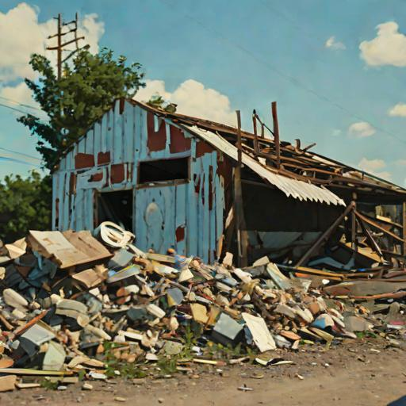 The image depicts a dilapidated old house with a collapsed roof, surrounded by a pile of debris and rubble. The house appears to be in a state of disrepair, with its walls and roof in a state of disarray. The scene is set in a rural area, with a dirt road nearby.
In addition to SBERT similarity: 0.47
Text-to-image model: Stable Diffusion XL (Turbo) |
Generated Image Text Reconstruction 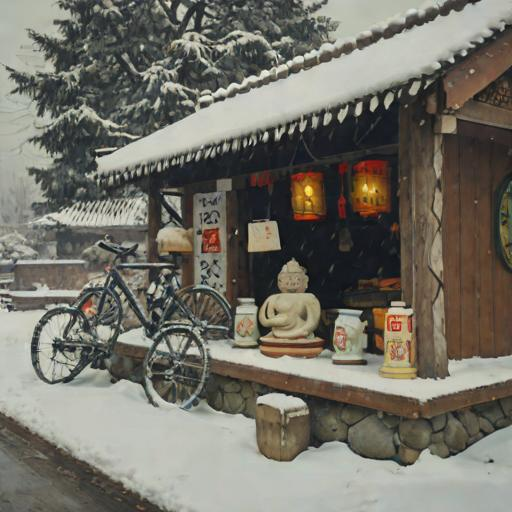 The image depicts a snowy scene with a small wooden building covered in snow. In front of the building, there is a bicycle parked, and a statue of Buddha is placed nearby. The statue is surrounded by various vases, creating an interesting and unique display.
In addition to the bicycle and the statue, there are several other SBERT similarity: 0.61
Text-to-image model: Stable Diffusion XL (Turbo) | Generated Image Text Reconstruction The image features a snow-covered building with a unique design, possibly a pagoda or a temple. The building is adorned with various statues and decorations, including a large Buddha statue. The snow-covered roof adds a serene atmosphere to the scene.
In front of the building, there is a wooden cart with a large wheel, SBERT similarity: 0.61
Text-to-image model: Stable Diffusion XL | Generated Image Text Reconstruction The image features a small wooden building with a snow-covered roof, located in a snowy area. The building appears to be a shop or a store, as it is filled with various items, including numerous vases and pots. The vases are placed both inside and outside the building, creating an eye-catching display.
In addition to the vases SBERT similarity: 0.57
Text-to-image model: Stable Diffusion 3 | Generated Image Text Reconstruction The image features a small, colorful building with a snow-covered roof. The building is adorned with various decorations, including a statue of Buddha and a large vase. The vase is placed on the left side of the building, while the Buddha statue is situated on the right side.
In front of the building, there is SBERT similarity: 0.54
Text-to-image model: Stable Diffusion 1.5 | Generated Image Text Reconstruction  The image features a small wooden building with a snow-covered roof, surrounded by a forest. The building appears to be a shop or a temple, as it is adorned with various statues and decorations. There are several vases placed around the building, some of which are located near the entrance.
In addition to the vases, there are two bow SBERT similarity: 0.52
Text-to-image model: Stable Diffusion XL | Generated Image Text Reconstruction The image features a small wooden shed with a statue of a Buddha head on display. The shed is surrounded by various items, including a collection of bowls, cups, and vases. Some of the bowls are placed on the ground, while others are stacked on top of each other. The cups are scattered around the shed, with some placed near the SBERT similarity: 0.51
Text-to-image model: Stable Diffusion 1.5 | Generated Image Text Reconstruction The image features a snow-covered area with a small wooden structure, possibly a shed or a pagoda, situated in the middle of the scene. The structure is adorned with various vases and bowls, creating an interesting display. There are at least 13 vases of different sizes and shapes, some placed on the ground and others on the structure itself. SBERT similarity: 0.51
Text-to-image model: Stable Diffusion XL (Turbo) | Generated Image Text Reconstruction The image features a snow-covered building with a wooden roof, surrounded by a variety of statues and decorations. There are several potted plants placed around the building, with one near the left side, another in the middle, and a third one on the right side. A large vase is also visible in the scene, located near the center of the image. SBERT similarity: 0.50
Text-to-image model: Stable Diffusion XL (Turbo) | Generated Image Text Reconstruction The image features a small, Asian-style building with a snow-covered roof, surrounded by a snowy landscape. The building appears to be a temple or a pagoda, with a distinctive pointed roof. In front of the building, there is a variety of vases and bowls displayed, adding to the cultural atmosphere.
There are several vases of different SBERT similarity: 0.45
Text-to-image model: Stable Diffusion XL | Generated Image Text Reconstruction The image features a small wooden building covered in snow, with a roof that has Chinese writing on it. The building is surrounded by a variety of vases, which are placed both inside and outside the structure. There are at least 13 vases of different sizes and shapes, some of which are placed on the ground, while others are positioned on the roof or near the SBERT similarity: 0.44
Text-to-image model: Stable Diffusion 3 | Generated Image Text Reconstruction The image features a snow-covered wooden building with a unique design. The building is adorned with numerous vases of various sizes and shapes, which are placed both on the roof and around the structure. Some of the vases are positioned closer to the ground, while others are placed higher up.
In addition to the vases, there are two people visible SBERT similarity: 0.44
Text-to-image model: Stable Diffusion 3 | Generated Image Text Reconstruction The image depicts a snowy scene with a small red building, possibly a food stand or a small hut, situated in the middle of the snow. The building is covered in snow, giving it a cozy and wintry appearance.
In the vicinity of the building, there are two trucks parked nearby. One truck is located on SBERT similarity: 0.41
Text-to-image model: Stable Diffusion 1.5 |
Generated Image Text Reconstruction The image features a vibrant beach scene with a pink and yellow lifeguard tower standing prominently on the sand. The tower is situated near the center of the scene, and its bright colors make it stand out against the backdrop of the beach.
In the background, there are several buildings, likely beachside hotels or other establishments. The buildings SBERT similarity: 0.80
Text-to-image model: Stable Diffusion 3 | Generated Image Text Reconstruction The image features a vibrant beach scene with a yellow and pink lifeguard tower standing prominently on the sand. The tower is painted in a combination of yellow and pink, making it a unique and eye-catching structure.
There are several people scattered throughout the beach, enjoying the sunny day. Some of them are closer to the water SBERT similarity: 0.79
Text-to-image model: Stable Diffusion XL | Generated Image Text Reconstruction The image features a pink and yellow lifeguard tower situated on a sandy beach. The tower is painted in a vibrant pink and yellow color scheme, making it stand out against the beach backdrop.
There are several people scattered around the beach, enjoying the sunny day. Some of them are closer to the lifeguard tower, while SBERT similarity: 0.78
Text-to-image model: Stable Diffusion XL | Generated Image Text Reconstruction The image features a vibrant yellow and pink lifeguard tower situated on a sandy beach. The tower is painted in a combination of yellow and pink, making it stand out against the backdrop of the beach. The lifeguard tower is positioned near the water, providing a clear view of the ocean.
In the scene, there are several people SBERT similarity: 0.78
Text-to-image model: Stable Diffusion XL | Generated Image Text Reconstruction The image features a vibrant pink and yellow lifeguard tower situated on a sandy beach. The tower is painted in a combination of pink and yellow colors, making it stand out against the beach backdrop. The lifeguard station is positioned near the water, providing a clear view of the ocean for the lifeguards. The beach appears to be relatively SBERT similarity: 0.77
Text-to-image model: Stable Diffusion XL (Turbo) | Generated Image Text Reconstruction The image features a small, colorful beach house situated on a sandy beach. The house is painted in a combination of pink, yellow, and white, making it stand out against the natural surroundings. The house has a unique and vibrant appearance, likely serving as a lifeguard station or a small beach hut.
In the background, there SBERT similarity: 0.76
Text-to-image model: Stable Diffusion 1.5 | Generated Image Text Reconstruction  The image features a pink and yellow lifeguard tower situated on a sandy beach. The tower is prominently positioned in the center of the scene, with the pink section on the bottom and the yellow section on top. The beach is bustling with activity, as several people can be seen scattered throughout the area. Some of them are closer to the water SBERT similarity: 0.75
Text-to-image model: Stable Diffusion XL (Turbo) | Generated Image Text Reconstruction The image features a yellow lifeguard tower situated on a sandy beach. The tower is painted in a vibrant pink and yellow color scheme, making it stand out against the beach backdrop. The lifeguard station is positioned near the water, ensuring that it can provide assistance to beachgoers in need.
In the background, there are several SBERT similarity: 0.75
Text-to-image model: Stable Diffusion XL (Turbo) | Generated Image Text Reconstruction The image features a small, pink and yellow beach house situated on a sandy beach. The house has a pink roof and a yellow bottom, making it stand out against the beach backdrop. The house is surrounded by a wooden deck, which adds to its charm.
In the vicinity of the house, there are several trees scattered around the beach, providing a SBERT similarity: 0.71
Text-to-image model: Stable Diffusion 1.5 | Generated Image Text Reconstruction  The image features a small, colorful beach house situated on a sandy beach. The house is painted in a combination of yellow, pink, and red, making it stand out against the natural surroundings. The house has a unique and vibrant appearance, likely serving as a vacation spot or a place to relax and enjoy the beach atmosphere. SBERT similarity: 0.68
Text-to-image model: Stable Diffusion 3 | Generated Image Text Reconstruction The image features a pink and yellow beach hut situated on a sandy beach. The hut is painted in a vibrant pink and yellow color scheme, making it stand out against the backdrop of the beach. The hut is positioned near the water, providing a picturesque view of the ocean.
In the background, there is a large building SBERT similarity: 0.67
Text-to-image model: Stable Diffusion 1.5 | Generated Image Text Reconstruction The image features a small, colorful beach hut situated on a sandy beach. The hut is painted in a combination of yellow, pink, and orange, making it stand out against the natural surroundings. The hut has a door and a window, providing a cozy and inviting atmosphere.
In the background, there are several buildings, possibly SBERT similarity: 0.67
Text-to-image model: Stable Diffusion 3 |
Generated Image Text Reconstruction The image features a man wearing headphones and a black shirt, standing in front of a DJ turntable setup. He appears to be a DJ, focused on his work. The turntables are placed on a table, with one on the left side and the other on the right side of the man.
There are several other turntables in the SBERT similarity: 0.79
Text-to-image model: Stable Diffusion XL | Generated Image Text Reconstruction The image features a man wearing headphones and a black shirt, standing in front of a DJ turntable setup. He appears to be focused on mixing music, possibly in a DJ booth. The turntable is placed on a table, and there are two additional turntables visible in the scene.
In the background, there are two clocks SBERT similarity: 0.76
Text-to-image model: Stable Diffusion XL (Turbo) | Generated Image Text Reconstruction The image features a man wearing a purple shirt and headphones, standing in front of a DJ turntable setup. He appears to be a DJ, focused on his work. The turntables are placed on a table, with one on the left side and the other on the right side of the man.
There are two additional people in the scene SBERT similarity: 0.76
Text-to-image model: Stable Diffusion 3 | Generated Image Text Reconstruction The image features a man wearing headphones and standing in front of a DJ turntable setup. He is focused on mixing music, likely preparing for a performance or practicing his skills. The turntables are placed on a table, with one on the left side and the other on the right side of the man.
There are two additional people in the SBERT similarity: 0.75
Text-to-image model: Stable Diffusion 3 | Generated Image Text Reconstruction The image features a man wearing a purple shirt, standing in front of a DJ setup. He is wearing headphones and appears to be focused on his work. The DJ setup includes two turntables, one on the left side and the other on the right side of the man.
There are also two CD players in the scene, one located SBERT similarity: 0.74
Text-to-image model: Stable Diffusion 3 | Generated Image Text Reconstruction The image features a man wearing a purple shirt, standing in front of a DJ turntable setup. He is focused on mixing music, with his hands on the turntables. The man appears to be a professional DJ, as he is surrounded by various pieces of equipment.
There are two turntables in the scene, one on the left side and SBERT similarity: 0.74
Text-to-image model: Stable Diffusion XL | Generated Image Text Reconstruction The image features a man wearing headphones and standing in front of a DJ turntable setup. He is focused on mixing music, likely preparing for a performance. The DJ equipment includes a mixer and a laptop, which is placed on a table in front of him.
There are two clocks visible in the scene, one on the left side and another SBERT similarity: 0.72
Text-to-image model: Stable Diffusion XL (Turbo) | Generated Image Text Reconstruction The image features a man standing in front of a DJ turntable, wearing headphones and focused on mixing music. He is surrounded by a variety of electronic equipment, including a laptop and a keyboard. The man appears to be a professional DJ, as he is skillfully operating the turntable and other devices.
The scene is illuminated by a pur SBERT similarity: 0.71
Text-to-image model: Stable Diffusion 1.5 | Generated Image Text Reconstruction The image is a black and white drawing of a man standing in front of a DJ setup. He is wearing headphones and appears to be focused on his work. The DJ setup includes a turntable and a soundboard, with a mixer and a pair of speakers nearby. The man is positioned in the center of the scene, with the turntable SBERT similarity: 0.69
Text-to-image model: Stable Diffusion XL | Generated Image Text Reconstruction The image features a DJ setup with a pair of headphones placed on top of a turntable. The turntable is surrounded by a mixer and a soundboard, creating a complete DJ station. The headphones are positioned on the left side of the turntable, while the mixer and soundboard are located on the right side.
In SBERT similarity: 0.68
Text-to-image model: Stable Diffusion 1.5 | Generated Image Text Reconstruction The image features a DJ setup with two turntables placed on a table. The turntables are positioned side by side, with one on the left side and the other on the right side of the table. The table is illuminated by a purple light, creating a vibrant atmosphere for the DJ performance.
In addition to the turntables, SBERT similarity: 0.66
Text-to-image model: Stable Diffusion 1.5 | Generated Image Text Reconstruction The image features a man standing in front of a DJ setup, wearing headphones and focused on his work. He is surrounded by various electronic equipment, including two large speakers on either side of him. The man appears to be a professional DJ, as he is in the process of mixing music on his equipment.
In addition to the speakers, there are two SBERT similarity: 0.65
Text-to-image model: Stable Diffusion XL (Turbo) |
Generated Image Text Reconstruction  The image captures a lively winter scene with a large crowd of people gathered in a snow-covered area. The people are standing under a canopy of colorful lights, creating a festive atmosphere. The crowd is spread out across the scene, with some individuals closer to the foreground and others further in the background.
The snow-covered ground provides a SBERT similarity: 0.75
Text-to-image model: Stable Diffusion XL | Generated Image Text Reconstruction  The image depicts a large crowd of people gathered in a city street, walking down a path lined with Christmas lights. The atmosphere is festive and lively, as the people are enjoying the holiday season. The crowd is quite diverse, with individuals of various heights and appearances.
The street is adorned with numerous Christmas lights, creating a vis SBERT similarity: 0.67
Text-to-image model: Stable Diffusion 3 | Generated Image Text Reconstruction  The image depicts a large group of people gathered together in a public space, possibly a park or a city square. They are standing under a canopy of lights, which creates a festive atmosphere. The crowd is diverse, with people of various heights and positions, all standing close to one another.
The lights above the crowd are arranged in a way that ill SBERT similarity: 0.65
Text-to-image model: Stable Diffusion 3 | Generated Image Text Reconstruction The image depicts a lively city street at night, bustling with people and illuminated by colorful lights. The street is filled with a crowd of people, some of whom are standing close to each other, while others are more spread out. The atmosphere is festive, as the street is decorated with Christmas lights and trees.
There are several SBERT similarity: 0.65
Text-to-image model: Stable Diffusion 1.5 | Generated Image Text Reconstruction The image depicts a large group of people gathered in a city square, standing under a canopy of lights. The crowd is diverse, with individuals of various ages and heights. The atmosphere appears festive, as the people are likely attending a holiday event or celebration.
The city square is adorned with numerous lights, creating a warm and inv SBERT similarity: 0.63
Text-to-image model: Stable Diffusion XL | Generated Image Text Reconstruction The image depicts a large crowd of people gathered in a public space, possibly a city square or a shopping mall. The crowd is standing under a canopy of lights, which creates a festive atmosphere. The people are standing close to each other, with some individuals wearing hoods.
The scene is bustling with activity, as the crowd SBERT similarity: 0.62
Text-to-image model: Stable Diffusion 3 | Generated Image Text Reconstruction The image depicts a lively city street at night, bustling with people. The street is adorned with colorful lights and decorations, creating a festive atmosphere. A large crowd of people is gathered, walking and enjoying the festive ambiance.
There are numerous individuals visible in the scene, with some closer to the foreground and others SBERT similarity: 0.61
Text-to-image model: Stable Diffusion XL (Turbo) | Generated Image Text Reconstruction The image depicts a lively street scene with a large group of people walking down the sidewalk. The crowd is diverse, with individuals of various heights and appearances. The street is adorned with colorful lights and decorations, creating a festive atmosphere.
There are several people wearing coats, indicating that the weather might be chilly. Some SBERT similarity: 0.61
Text-to-image model: Stable Diffusion XL (Turbo) | Generated Image Text Reconstruction The image depicts a lively street scene with a large crowd of people walking down the street. The street is adorned with numerous colorful lights, creating a festive atmosphere. The lights are hanging overhead, illuminating the area and adding to the vibrant ambiance.
There are at least 13 people visible in the scene, with SBERT similarity: 0.61
Text-to-image model: Stable Diffusion 1.5 | Generated Image Text Reconstruction The image features a large building with a beautifully lit facade, creating a festive atmosphere. The building is adorned with numerous colorful lights, including blue, red, and white, which illuminate the structure and make it stand out.
There is a crowd of people gathered outside the building, likely admiring the stunning display of lights. The people are SBERT similarity: 0.58
Text-to-image model: Stable Diffusion 1.5 | Generated Image Text Reconstruction The image depicts a large crowd of people gathered in a city square, likely for a special event or celebration. The crowd is standing under a canopy of lights, creating a festive atmosphere. The people are spread out across the scene, with some standing closer to the foreground and others further back.
In addition to the people, there are several handb SBERT similarity: 0.57
Text-to-image model: Stable Diffusion XL | Generated Image Text Reconstruction The image depicts a lively street scene with a large crowd of people walking down the street. The street is adorned with numerous yellow and white lights, creating a festive atmosphere. The crowd is diverse, with people of various heights and positions, some closer to the foreground and others further in the background.
The street is lined with buildings, SBERT similarity: 0.56
Text-to-image model: Stable Diffusion XL (Turbo) |
Generated Image Text Reconstruction The image features a large black boat floating on a body of water, possibly a river or a lake. The boat is positioned in the middle of the scene, with a city skyline visible in the background. The cityscape includes several buildings of varying heights, creating a picturesque backdrop for the boat.
In addition to the main boat, there are two SBERT similarity: 0.78
Text-to-image model: Stable Diffusion 3 | Generated Image Text Reconstruction The image features a large black boat floating on a body of water, possibly a river or a lake. The boat is situated in front of a city skyline, creating a striking contrast between the boat and the urban landscape. The cityscape includes several tall buildings, some of which are visible in the background.
In addition to the boat, there are a few people scattered SBERT similarity: 0.77
Text-to-image model: Stable Diffusion XL | Generated Image Text Reconstruction The image features a small boat floating on a body of water, possibly a river, near a city. The boat is positioned in the middle of the scene, with a large building in the background. The building appears to be a tall skyscraper, adding a sense of scale to the scene.
There are several people visible in the image, with one person standing SBERT similarity: 0.75
Text-to-image model: Stable Diffusion XL | Generated Image Text Reconstruction The image features a large boat, possibly a yacht, traveling across a body of water. The boat is positioned in the center of the scene, with a building visible in the background. The boat appears to be moving towards the building, creating a sense of motion in the scene.
There are several people on the boat, enjoying their time on the water. SBERT similarity: 0.74
Text-to-image model: Stable Diffusion 3 | Generated Image Text Reconstruction The image features a large boat floating on a river in a city. The boat is situated in the middle of the scene, surrounded by a few other boats of varying sizes. The city skyline can be seen in the background, with tall buildings and skyscrapers towering over the water.
There are several people on the boat, enjoying their time on the SBERT similarity: 0.74
Text-to-image model: Stable Diffusion 1.5 | Generated Image Text Reconstruction The image features a large white boat floating on a body of water, possibly a lake or a river. The boat is positioned in the center of the scene, with a building visible in the background. There are several people scattered around the boat, some closer to the water's edge and others further away.
In addition to the boat, there is a car parked SBERT similarity: 0.73
Text-to-image model: Stable Diffusion 3 | Generated Image Text Reconstruction The image features a small boat traveling across a large body of water, possibly a river or a lake. The boat is situated in the middle of the scene, with a city skyline visible in the background. The cityscape includes several tall buildings, some of which are located near the water's edge.
There are a few people scattered around the scene, possibly SBERT similarity: 0.69
Text-to-image model: Stable Diffusion XL (Turbo) | Generated Image Text Reconstruction The image features a small boat sailing on a river near a city skyline. The boat is positioned in the middle of the scene, with the city's tall buildings towering over it. The boat appears to be a fishing boat, and it is the main focus of the image.
In addition to the boat, there are several people visible in the scene SBERT similarity: 0.68
Text-to-image model: Stable Diffusion XL | Generated Image Text Reconstruction The image features a large boat floating on a river near a city. The boat is positioned in the center of the scene, with a few smaller boats scattered around it. The city skyline can be seen in the background, creating a picturesque scene.
There are several people on the boat, enjoying their time on the water. Some of them are standing closer to SBERT similarity: 0.68
Text-to-image model: Stable Diffusion 1.5 | Generated Image Text Reconstruction The image features a group of people riding in a small boat on a river, with a city skyline in the background. The boat is filled with people, and they appear to be enjoying their time on the water. The cityscape includes a large building, possibly a skyscraper, and other structures that create a picturesque backdrop for the boat ride. SBERT similarity: 0.66
Text-to-image model: Stable Diffusion XL (Turbo) | Generated Image Text Reconstruction The image features a small boat docked at a pier in a city. The boat is situated near the center of the scene, with a city skyline visible in the background. The boat is black and white, and it appears to be a small fishing boat.
There are several people scattered around the scene, some of them closer to the boat and others further away. SBERT similarity: 0.65
Text-to-image model: Stable Diffusion 1.5 | Generated Image Text Reconstruction The image features a boat traveling down a river in a city, surrounded by tall buildings. The boat is moving swiftly, creating a sense of motion in the scene. There are several people on the boat, enjoying the ride and the view of the city.
In addition to the boat, there are a few cars and a truck visible in the scene, likely SBERT similarity: 0.65
Text-to-image model: Stable Diffusion XL (Turbo) |
Generated Image Text Reconstruction The image captures a beautiful cityscape at night, with a large body of water reflecting the lights of the city. The city is illuminated by a multitude of lights, creating a vibrant and lively atmosphere.
Several tall buildings can be seen in the background, with some of them featuring blue lights. The buildings are scattered throughout the SBERT similarity: 0.88
Text-to-image model: Stable Diffusion 1.5 | Generated Image Text Reconstruction The image captures a beautiful cityscape at dusk, with a large body of water running through the center. The city is illuminated by the setting sun, casting a warm glow over the scene. The skyline is filled with tall buildings, some of which are lit up, creating a stunning contrast against the darkening sky.
The city's SBERT similarity: 0.85
Text-to-image model: Stable Diffusion 1.5 | Generated Image Text Reconstruction The image captures a beautiful cityscape at dusk, with a large body of water in the foreground. The city skyline is illuminated by the setting sun, creating a stunning backdrop. The city lights reflect off the water, enhancing the overall ambiance of the scene.
There are several tall buildings visible in the background, with some SBERT similarity: 0.84
Text-to-image model: Stable Diffusion XL | Generated Image Text Reconstruction The image captures a beautiful cityscape at dusk, with a bridge crossing over a river. The bridge is illuminated by lights, creating a stunning contrast against the dark sky. The city skyline is visible in the background, featuring a mix of tall buildings and skyscrapers.
The scene is bustling with activity, as several cars SBERT similarity: 0.83
Text-to-image model: Stable Diffusion XL | Generated Image Text Reconstruction The image captures a beautiful cityscape at dusk, with a large city skyline illuminated by the setting sun. The city is situated next to a river, and a bridge can be seen crossing over it. The bridge is adorned with colorful lights, adding a vibrant touch to the scene.
There are several boats visible on the river SBERT similarity: 0.81
Text-to-image model: Stable Diffusion XL (Turbo) | Generated Image Text Reconstruction 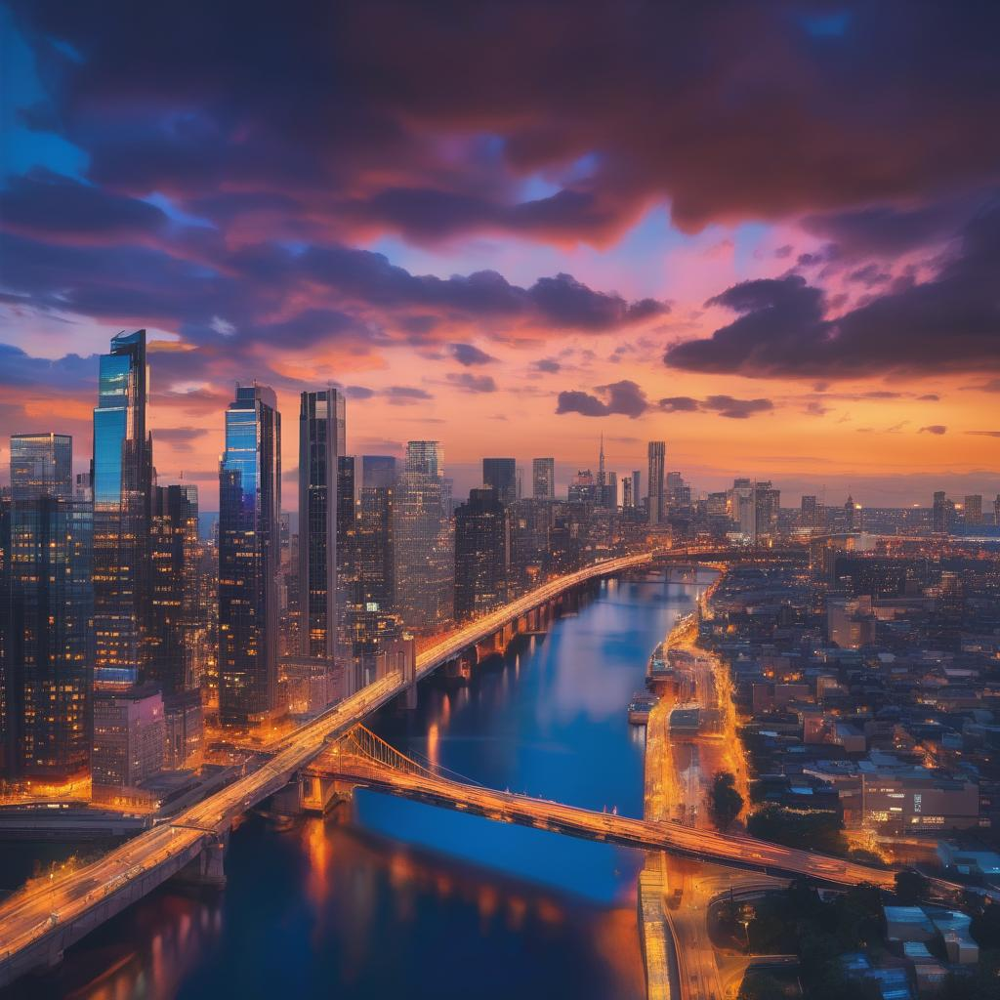 The image captures a beautiful cityscape at dusk, with a large body of water in the foreground. The city is illuminated by the setting sun, casting a warm glow over the buildings. The scene features a bridge that spans across the water, connecting different parts of the city.
There are several tall buildings visible in the background, with some SBERT similarity: 0.81
Text-to-image model: Stable Diffusion XL | Generated Image Text Reconstruction The image captures a beautiful cityscape at dusk, with a large city skyline visible in the background. The city is illuminated by the setting sun, casting a warm glow over the scene. A bridge spans across the image, connecting different parts of the city.
In the foreground, there is a highway with several cars driving on it. SBERT similarity: 0.80
Text-to-image model: Stable Diffusion 3 | Generated Image Text Reconstruction  The image is a nighttime view of a city skyline, featuring a long row of buildings with lights illuminating their windows. The cityscape is beautifully lit up, creating a vibrant atmosphere. The buildings are of various heights and architectural styles, adding to the city's charm.
In the foreground, there is a bridge that sp SBERT similarity: 0.78
Text-to-image model: Stable Diffusion XL (Turbo) | Generated Image Text Reconstruction The image captures a beautiful cityscape at night, with a long bridge stretching across a river. The bridge is illuminated by lights, creating a stunning visual effect. The city is bustling with activity, as numerous cars are driving on the bridge and along the streets.
In addition to the bridge, there are several tall buildings surrounding the area, SBERT similarity: 0.74
Text-to-image model: Stable Diffusion 3 | Generated Image Text Reconstruction The image captures a beautiful cityscape at night, featuring a large bridge that spans across a river. The bridge is illuminated, creating a stunning contrast against the dark sky. The city is bustling with activity, as numerous cars are driving on the streets below the bridge.
In addition to the cars, there are several boats visible on the river SBERT similarity: 0.74
Text-to-image model: Stable Diffusion 3 | Generated Image Text Reconstruction The image is a nighttime view of a city skyline, featuring a large city with many tall buildings. The city lights are illuminating the scene, creating a vibrant and lively atmosphere. The buildings are scattered throughout the image, with some closer to the foreground and others further in the background.
In addition to the buildings, there are several cars visible SBERT similarity: 0.74
Text-to-image model: Stable Diffusion XL (Turbo) | Generated Image Text Reconstruction The image captures a beautiful nighttime view of a city with a large bridge illuminated by lights. The bridge spans across the scene, connecting different parts of the city. The cityscape is further enhanced by the presence of a river flowing through the area.
There are several cars and a truck visible in the scene, likely traveling on the SBERT similarity: 0.70
Text-to-image model: Stable Diffusion 1.5 |
Generated Image Text Reconstruction The image features a statue of a person with their hands clasped in prayer. The statue is positioned in front of a cloudy sky, creating a serene and peaceful atmosphere. The statue's hands are raised, emphasizing the act of prayer, and its eyes are closed, further emphasizing the spiritual nature of the scene. SBERT similarity: 0.81
Text-to-image model: Stable Diffusion XL | Generated Image Text Reconstruction The image features a statue of a person, possibly a religious figure, praying with their hands clasped together. The statue is positioned in front of a cloudy sky, creating a serene and contemplative atmosphere. The statue is the main focus of the scene, and it stands out against the backdrop of the sky. SBERT similarity: 0.80
Text-to-image model: Stable Diffusion XL | Generated Image Text Reconstruction The image features a statue of a person praying, with their hands clasped together. The statue is positioned in front of a cloudy sky, creating a serene and peaceful atmosphere. The statue appears to be a religious figure, possibly a nun or a saint, as it is depicted in a praying position. The overall scene conveys a sense of SBERT similarity: 0.78
Text-to-image model: Stable Diffusion XL | Generated Image Text Reconstruction The image features a statue of a woman with her hands clasped in prayer. She is wearing a long dress and appears to be a religious figure. The statue is positioned in front of a cloudy sky, which adds a serene atmosphere to the scene. The statue is the main focus of the image, and it stands out against the backdrop of the sky. SBERT similarity: 0.78
Text-to-image model: Stable Diffusion 3 | Generated Image Text Reconstruction 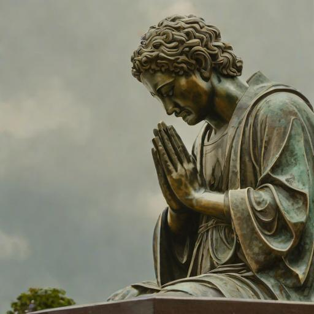 The image features a statue of a person, possibly a woman, sitting in a praying position with their hands clasped together. The statue is positioned in the center of the scene, and it appears to be made of metal. The statue is surrounded by a cloudy sky, which adds a sense of depth and atmosphere to the scene. SBERT similarity: 0.78
Text-to-image model: Stable Diffusion XL (Turbo) | Generated Image Text Reconstruction The image features a statue of a person, possibly a woman, with her hands clasped in prayer. The statue is made of metal and is positioned in front of a blue sky, creating a serene and peaceful atmosphere. The statue's hands are raised, emphasizing the prayerful gesture. The overall scene is a beautiful representation of faith and spirituality. SBERT similarity: 0.77
Text-to-image model: Stable Diffusion 1.5 | Generated Image Text Reconstruction The image features a statue of a woman with her hands clasped in prayer, standing on a pedestal. The statue is positioned in the center of the scene, with the woman's face looking upwards. The statue is surrounded by a blue sky, which adds a serene and peaceful atmosphere to the scene. SBERT similarity: 0.74
Text-to-image model: Stable Diffusion 3 | Generated Image Text Reconstruction The image features a statue of a man with a beard, wearing a robe and praying. The statue is positioned in front of a cloudy sky, which adds a dramatic backdrop to the scene. The man's hands are clasped together, emphasizing his prayerful stance. The statue appears to be a religious figure, possibly a saint SBERT similarity: 0.74
Text-to-image model: Stable Diffusion XL (Turbo) | Generated Image Text Reconstruction The image features a statue of a man with a beard, wearing a robe and praying. He is holding his hands together, possibly in a gesture of prayer or contemplation. The statue is positioned in the center of the image, with a cloudy sky in the background. The man's attire and the act of praying suggest that he might SBERT similarity: 0.74
Text-to-image model: Stable Diffusion XL (Turbo) | Generated Image Text Reconstruction The image features a statue of a woman with her hands clasped in prayer. The statue is positioned in front of a blue sky, creating a serene and peaceful atmosphere. The woman's statue is the main focus of the scene, and it appears to be a representation of a religious figure or a person in a moment of reflection. SBERT similarity: 0.73
Text-to-image model: Stable Diffusion 3 | Generated Image Text Reconstruction The image features a statue of a man sitting in a meditative position, with his hands clasped together. The statue is made of metal and is placed on a wooden surface. The man appears to be a religious figure, possibly a monk, as he is depicted in a peaceful and contemplative pose. The statue is the main focus of the image, and SBERT similarity: 0.70
Text-to-image model: Stable Diffusion 1.5 | Generated Image Text Reconstruction The image features a statue of a woman standing in a park, with her arms outstretched. The statue is positioned in the center of the scene, surrounded by trees and a blue sky. The woman's outstretched arms create a sense of movement and grace, making the statue an impressive focal point in the park. SBERT similarity: 0.57
Text-to-image model: Stable Diffusion 1.5 |
Generated Image Text Reconstruction The image features a green box with a colorful rainbow design on it. The box is labeled "Fujifilm" and contains a roll of 200 color film. The box is placed on a white background, making the vibrant colors of the box and the rainbow design stand out. SBERT similarity: 0.77
Text-to-image model: Stable Diffusion 3 | Generated Image Text Reconstruction The image features a green box with a purple and yellow striped label on it. The box is placed on a white background, making it stand out. The label on the box reads "Fujifilm," indicating that the box contains a product from the Fujifilm brand. The box appears to be a storage container for a roll of film, as it SBERT similarity: 0.76
Text-to-image model: Stable Diffusion 3 | Generated Image Text Reconstruction The image features a green box with a purple stripe, which contains a roll of Fujifilm Superia 400 color film. The box is placed on a white background, making the colors of the box and the film stand out. The film is designed for use in 35mm cameras and is suitable for various photography applications. SBERT similarity: 0.75
Text-to-image model: Stable Diffusion 3 | Generated Image Text Reconstruction The image features a box of FujiFilm Superia 200 film, which is a type of photographic film. The box is purple and white in color, and it is placed on a purple background. The box is open, revealing the film inside. The film is designed for use in various cameras, providing high-quality images. SBERT similarity: 0.72
Text-to-image model: Stable Diffusion XL | Generated Image Text Reconstruction 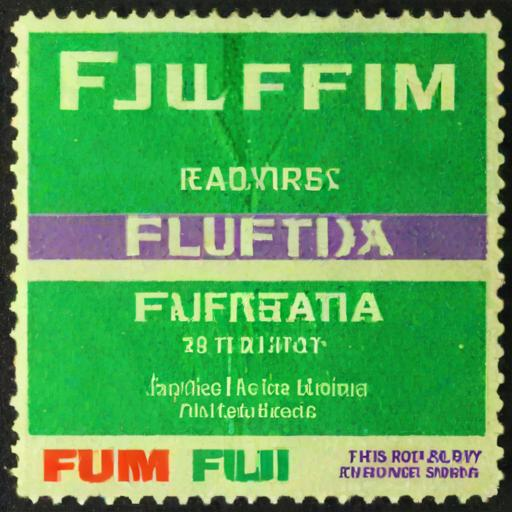 The image features a green postage stamp with the word "Fumifilm" written on it. The stamp is placed on a piece of paper, which is likely a postcard. The postcard is written in a foreign language, possibly Greek, as indicated by the presence of Greek characters. The combination of the green stamp and the foreign language text creates a unique and interesting SBERT similarity: 0.55
Text-to-image model: Stable Diffusion XL (Turbo) | Generated Image Text Reconstruction The image features a green box with the word "Fufilm" written on it. The box is placed on a white surface, and it appears to be a product package. The box is quite large, covering most of the image. SBERT similarity: 0.54
Text-to-image model: Stable Diffusion XL (Turbo) | Generated Image Text Reconstruction The image features a green and purple box with a white label on it. The box is placed on a green and white checkered surface, which adds a vibrant touch to the scene. The box appears to be a storage container for a product, possibly a printer ink cartridge. The combination of the green and purple box with the white label creates a visually SBERT similarity: 0.52
Text-to-image model: Stable Diffusion XL | Generated Image Text Reconstruction The image features a green box with a white background. The box is adorned with a colorful design, including a combination of green, purple, and white elements. The design is reminiscent of a colorful book cover, making the box visually appealing. The box is placed on a white surface, which further highlights the vibrant colors of SBERT similarity: 0.52
Text-to-image model: Stable Diffusion 1.5 | Generated Image Text Reconstruction The image features a collection of various boxes, with some of them being purple and green. The boxes are stacked on top of each other, creating a visually appealing arrangement. The boxes come in different sizes and shapes, showcasing a diverse assortment of containers. The combination of purple and green colors adds a vibrant touch to the scene. SBERT similarity: 0.52
Text-to-image model: Stable Diffusion 1.5 | Generated Image Text Reconstruction The image features a green and purple background with two boxes placed on top of each other. The top box is purple, while the bottom box is white. The two boxes are positioned in such a way that they appear to be stacked on top of each other. The background is a combination of green and purple, creating a visually appealing contrast with the boxes SBERT similarity: 0.51
Text-to-image model: Stable Diffusion XL | Generated Image Text Reconstruction The image features a white and green square with a logo in the center. The logo is a combination of a letter "L" and a circle, creating a unique and eye-catching design. The green and white colors of the logo stand out against the white background, making it a prominent focal point in the image. SBERT similarity: 0.50
Text-to-image model: Stable Diffusion 1.5 | Generated Image Text Reconstruction The image features a green box with a purple stripe, which is labeled "Fuffim." The box is placed on a white surface, and it appears to be a product package. The box is open, revealing the contents inside. The contents are not clearly visible, but the box itself is the main focus of the image. SBERT similarity: 0.47
Text-to-image model: Stable Diffusion XL (Turbo) |
Generated Image Text Reconstruction The image features a man standing next to a white scooter in front of a large cathedral. The man appears to be an older gentleman, and he is wearing a brown coat. The scooter is parked on the sidewalk, and the man seems to be admiring the cathedral or preparing to ride it.
In the background, there are SBERT similarity: 0.67
Text-to-image model: Stable Diffusion XL (Turbo) | Generated Image Text Reconstruction  The image features an older man standing next to a blue scooter on a street. The man is wearing a blue jacket and appears to be posing for a picture. The scooter is parked on the side of the road, with the man standing close to it.
In the background, there is a large building, possibly a church, which adds SBERT similarity: 0.65
Text-to-image model: Stable Diffusion 3 | Generated Image Text Reconstruction The image features an older man standing next to a blue motor scooter, which is parked on the sidewalk. The man appears to be posing for a picture in front of a large building, possibly a church, with a cathedral-like appearance.
In the background, there are several other people scattered around the scene, some of them closer to the building SBERT similarity: 0.63
Text-to-image model: Stable Diffusion 3 | Generated Image Text Reconstruction The image features an older man standing next to a blue motor scooter on a street. The man appears to be posing for a picture in front of a large building, possibly a church. There are several other people in the scene, some of them standing closer to the building, while others are scattered around the area.
In addition to the motor scooter, SBERT similarity: 0.61
Text-to-image model: Stable Diffusion 3 | Generated Image Text Reconstruction The image features a man riding a motor scooter in front of a large, ornate cathedral. The man is positioned on the left side of the scene, with the scooter occupying a significant portion of the image. The cathedral is a prominent architectural structure, towering over the man and his scooter.
There are several other SBERT similarity: 0.61
Text-to-image model: Stable Diffusion XL | Generated Image Text Reconstruction The image features an older man riding a scooter in a large courtyard. He is wearing a blue shirt and appears to be enjoying his ride. The courtyard is surrounded by trees, creating a pleasant atmosphere.
There are several other people in the scene, some of them standing or walking around the area. A few of them are closer SBERT similarity: 0.59
Text-to-image model: Stable Diffusion XL | Generated Image Text Reconstruction  The image features a man riding a scooter in front of a large, ornate cathedral. The man is wearing a black jacket and appears to be enjoying his ride. There are several other people in the scene, some of them walking or standing near the cathedral.
In addition to the main scooter rider, there are two other SBERT similarity: 0.58
Text-to-image model: Stable Diffusion XL (Turbo) | Generated Image Text Reconstruction  The image features a man riding a scooter on a city street, surrounded by a crowd of people. The man on the scooter is wearing a suit and appears to be an older gentleman. There are several other people walking around the area, some of them carrying handbags.
In the background, there is a large cathedral with a tree nearby SBERT similarity: 0.58
Text-to-image model: Stable Diffusion XL (Turbo) | Generated Image Text Reconstruction The image features a man riding a green scooter in front of a large, ornate building, possibly a cathedral. The man is wearing a black jacket and appears to be enjoying his ride. There are several other people in the scene, some of them walking or standing near the building.
In addition to the main scooter, there are SBERT similarity: 0.56
Text-to-image model: Stable Diffusion XL | Generated Image Text Reconstruction The image features a man riding a motorized scooter or motorcycle down a street in front of a large, ornate building. The building appears to be a cathedral or a similar architectural structure, with a prominent clock tower visible in the background.
There are several other people in the scene, some of them walking or standing near the building. A few SBERT similarity: 0.50
Text-to-image model: Stable Diffusion 1.5 | Generated Image Text Reconstruction 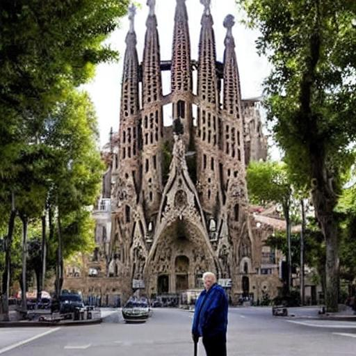 The image features a man standing in front of a large, ornate building, possibly a cathedral, with a unique architectural design. The man is wearing a blue jacket and appears to be admiring the structure.
There are several other people in the scene, some of them standing near the man and others further away. A few cars are parked in the SBERT similarity: 0.36
Text-to-image model: Stable Diffusion 1.5 | Generated Image Text Reconstruction The image features a person standing in front of a large, ornate cathedral with a Gothic architectural style. The cathedral has a prominent clock tower and is surrounded by trees, creating a serene atmosphere. The person is wearing a yellow jacket and is positioned near the center of the scene.
In addition to the main subject, there are several other SBERT similarity: 0.28
Text-to-image model: Stable Diffusion 1.5 |
Generated Image Text Reconstruction The image features a large, ornate building with a blue sky in the background. The building has a prominent white and gold color scheme, giving it an elegant and majestic appearance. The structure is adorned with numerous columns and arches, creating a grand and impressive facade. The columns are arranged in a row, with some closer to the foreground and others further SBERT similarity: 0.68
Text-to-image model: Stable Diffusion XL | Generated Image Text Reconstruction The image features a beautiful and ornate building with a blue and gold color scheme. The building has a domed roof and is adorned with intricate gold designs. The structure is surrounded by several other buildings, creating a picturesque scene.
In the foreground, there is a large archway that adds to the grandeur of the building. The overall atmosphere of SBERT similarity: 0.65
Text-to-image model: Stable Diffusion XL (Turbo) | Generated Image Text Reconstruction The image features a large, ornate building with a row of four domes on top. Each dome is adorned with gold and white decorations, giving the building a majestic and grand appearance. The domes are positioned at various heights, with one dome being higher than the others.
The building's facade is further enhanced by SBERT similarity: 0.64
Text-to-image model: Stable Diffusion XL | Generated Image Text Reconstruction The image features a large, ornate building with a gold roof and a blue tiled roof. The building is adorned with gold accents, giving it a majestic appearance. Above the building, there is a large umbrella with a gold and blue design, providing shade and adding to the overall aesthetic.
In the foreground, SBERT similarity: 0.63
Text-to-image model: Stable Diffusion XL (Turbo) | Generated Image Text Reconstruction The image features a large, open building with a unique ceiling design. The ceiling is adorned with a pattern of black and white triangles, creating an interesting visual effect. The building appears to be a large house or a public space with a distinctive architectural style.
In the foreground, there are several columns that add to the grandeur of the SBERT similarity: 0.62
Text-to-image model: Stable Diffusion 3 | Generated Image Text Reconstruction The image features a beautifully designed building with three large columns, each adorned with intricate gold designs. The columns are positioned in a triangular shape, creating a striking architectural feature. The building's facade is further enhanced by the presence of a blue sky in the background, which complements the golden accents on the columns. The overall scene is SBERT similarity: 0.62
Text-to-image model: Stable Diffusion XL | Generated Image Text Reconstruction The image features a large, ornate building with a prominent clock tower. The clock tower is situated in the middle of the building, and it has a gold roof. The building's facade is adorned with many columns, giving it a grand and majestic appearance. The sky in the background is cloudy, adding to the overall atmosphere of the scene. SBERT similarity: 0.60
Text-to-image model: Stable Diffusion 1.5 | Generated Image Text Reconstruction The image is a collage of various architectural structures, showcasing different types of buildings and their roofs. There are six distinct buildings in the collage, each with unique features and designs. The buildings are arranged in a way that highlights their distinct characteristics, making it an interesting visual representation of architectural diversity. SBERT similarity: 0.57
Text-to-image model: Stable Diffusion 1.5 | Generated Image Text Reconstruction The image features a large umbrella with a black and white design, covering a significant portion of the scene. The umbrella is positioned over a building with a row of columns, creating a unique and eye-catching visual effect. The umbrella's design resembles a peacock, adding a touch of elegance to the scene. SBERT similarity: 0.56
Text-to-image model: Stable Diffusion 3 | Generated Image Text Reconstruction The image features a beautiful and ornate temple with a row of white columns adorned with gold and blue decorations. The columns are arranged in a line, creating an impressive and majestic appearance. The temple is situated under a blue sky, which adds to the overall beauty of the scene. The intricate details of the columns and the vibrant colors of gold and SBERT similarity: 0.54
Text-to-image model: Stable Diffusion XL (Turbo) | Generated Image Text Reconstruction The image features a large, ornate building with a unique architectural design. The building has a series of arched windows, each with a clock embedded in the center. The clocks are positioned at different heights and angles, creating an interesting visual effect.
There are four clocks in total, with one located at the top left, another at the top right SBERT similarity: 0.54
Text-to-image model: Stable Diffusion 1.5 | Generated Image Text Reconstruction The image features a row of four white umbrellas with black tops, placed in front of a building. The umbrellas are positioned at various heights, with one being the tallest and the others gradually decreasing in height. The umbrellas are arranged in a line, with the first one on the left side, the second one in the SBERT similarity: 0.48
Text-to-image model: Stable Diffusion 3 |
Generated Image Text Reconstruction The image features a young girl standing in shallow water at the beach, wearing a blue hat and a blue shirt. She appears to be enjoying her time in the water, possibly playing or exploring the shoreline. The girl is positioned in the center of the scene, with the water reaching up to her waist. SBERT similarity: 0.78
Text-to-image model: Stable Diffusion 3 | Generated Image Text Reconstruction The image features a young girl standing in shallow water at the beach, wearing a blue hat and a blue shirt. She appears to be enjoying her time in the water, possibly playing or exploring the shoreline. The girl is positioned near the center of the scene, with the water reaching up to her waist. The beach setting and the girl' SBERT similarity: 0.78
Text-to-image model: Stable Diffusion XL | Generated Image Text Reconstruction The image features a young girl standing in shallow water at the beach. She is wearing a blue shirt and black shorts, and she appears to be enjoying her time in the water. The girl is pointing towards the ocean, possibly drawing attention to something interesting or exciting happening in the water. The scene captures a fun and carefree moment at the beach. SBERT similarity: 0.75
Text-to-image model: Stable Diffusion 3 | Generated Image Text Reconstruction The image features a young girl wearing a blue hat and a blue shirt, standing in the ocean water. She appears to be enjoying her time in the water, possibly playing or exploring the shoreline. The girl is positioned in the center of the scene, with the ocean stretching out behind her. SBERT similarity: 0.73
Text-to-image model: Stable Diffusion 3 | Generated Image Text Reconstruction The image features a young girl standing on a sandy beach, wearing a blue shirt and blue shorts. She is positioned near the water's edge, looking out at the waves. The girl appears to be enjoying her time at the beach, possibly watching the waves or waiting for someone. The scene captures a peaceful and relaxing atmosphere, with the SBERT similarity: 0.72
Text-to-image model: Stable Diffusion 1.5 | Generated Image Text Reconstruction The image features a young woman standing in the ocean, wearing a black shirt and blue shorts. She is positioned near the water's edge, with her back facing the viewer. The woman appears to be enjoying her time at the beach, possibly taking a break from swimming or simply appreciating the ocean view. SBERT similarity: 0.66
Text-to-image model: Stable Diffusion 1.5 | Generated Image Text Reconstruction The image features a woman standing in the ocean, wearing a blue hat and a blue shirt. She is positioned near the shoreline, with her feet partially submerged in the water. The woman appears to be enjoying her time at the beach, possibly taking a break from swimming or simply appreciating the ocean view. SBERT similarity: 0.64
Text-to-image model: Stable Diffusion XL (Turbo) | Generated Image Text Reconstruction The image features a woman wearing a blue shirt and a hat, standing in shallow water at the beach. She appears to be enjoying her time in the water, possibly taking a break from swimming or simply relaxing. The woman is positioned in the center of the scene, with the water reaching up to her waist. The beach setting and the woman' SBERT similarity: 0.63
Text-to-image model: Stable Diffusion XL | Generated Image Text Reconstruction The image features a young woman standing in the ocean, wearing a blue hat and a blue shirt. She is posing for a picture while enjoying her time in the water. The woman is positioned in the center of the scene, with the ocean surrounding her. The water appears to be shallow, allowing her to stand comfortably. SBERT similarity: 0.62
Text-to-image model: Stable Diffusion XL | Generated Image Text Reconstruction The image features a woman wearing a blue hat and a black bikini, kneeling on a sandy beach near the water. She appears to be enjoying her time at the beach, possibly playing in the water or exploring the shoreline. The woman's position and attire suggest that she is having a fun and relaxing day by the ocean. SBERT similarity: 0.61
Text-to-image model: Stable Diffusion 1.5 | Generated Image Text Reconstruction The image features a woman standing in the ocean, wearing a blue shirt and black shorts. She is positioned near the water's edge, possibly enjoying a swim or taking a break from her activities. The woman appears to be the main focus of the scene.
In the background, there are a few other people visible, but they are not the SBERT similarity: 0.60
Text-to-image model: Stable Diffusion XL (Turbo) | Generated Image Text Reconstruction The image features a woman standing on a rocky beach, wearing a blue shirt and a hat. She is holding a cell phone in her hand, possibly taking a picture or using it for navigation. The woman appears to be enjoying her time at the beach, surrounded by the natural environment. SBERT similarity: 0.58
Text-to-image model: Stable Diffusion XL (Turbo) |
Generated Image Text Reconstruction The image features a group of men working together to load barrels onto a large truck. There are several barrels of various sizes scattered around the scene, with some already placed on the truck and others waiting to be loaded. The men are actively engaged in the task, with some standing near the truck and others positioned around the barrels. SBERT similarity: 0.69
Text-to-image model: Stable Diffusion XL | Generated Image Text Reconstruction The image features a group of men working together to load barrels onto a truck. There are three men in the scene, with one man standing on the back of the truck, another man standing on the side of the truck, and the third man standing on the ground. They are all focused on their task, ensuring the barrels are properly secured on SBERT similarity: 0.68
Text-to-image model: Stable Diffusion XL | Generated Image Text Reconstruction The image features two men standing next to a large tanker truck, which is parked in a dirt lot. The men are in the process of unloading barrels from the truck. There are several barrels scattered around the area, with some near the truck and others further away.
In addition to the two main men, there are two SBERT similarity: 0.68
Text-to-image model: Stable Diffusion 3 | Generated Image Text Reconstruction The image depicts a group of men working together to load barrels onto a truck. There are five men in total, with some standing closer to the truck and others positioned further away. They are all focused on their task, ensuring the barrels are loaded efficiently.
There are several barrels visible in the scene, with some placed SBERT similarity: 0.67
Text-to-image model: Stable Diffusion XL (Turbo) | Generated Image Text Reconstruction  The image depicts a group of men working together to fill large barrels with water. There are five men in total, with some of them actively engaged in the task, while others are observing or waiting for their turn. The barrels are placed in a line, with one barrel being filled by the men.
In the background, there is SBERT similarity: 0.66
Text-to-image model: Stable Diffusion XL (Turbo) | Generated Image Text Reconstruction The image features a group of men working together to unload a large blue tank from a truck. The tank is positioned on the back of the truck, and the men are carefully handling the process. There are three men in the scene, with one standing closer to the left side of the truck, another in the middle, and the third on the right side. SBERT similarity: 0.65
Text-to-image model: Stable Diffusion 3 | Generated Image Text Reconstruction 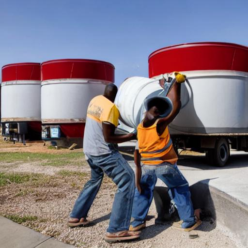 The image features two men working together to load a large cement barrel onto a truck. One man is positioned on the left side of the truck, while the other is on the right side. They are both actively engaged in the task, with one of them holding onto the barrel.
The truck is parked in the background, occupying SBERT similarity: 0.62
Text-to-image model: Stable Diffusion 1.5 | Generated Image Text Reconstruction The image features two men working together to load a large blue tank onto a truck. One man is positioned on the left side of the truck, while the other is on the right side. They are both actively engaged in the process of transferring the tank onto the truck.
The truck is parked in a lot, and there are two other SBERT similarity: 0.62
Text-to-image model: Stable Diffusion 3 | Generated Image Text Reconstruction The image features a group of men working together to move large metal barrels. There are three men in the scene, with one man standing on the left side, another in the middle, and the third man on the right side. They are all actively engaged in the task of moving the barrels.
There are a total of six barrels in the SBERT similarity: 0.57
Text-to-image model: Stable Diffusion XL (Turbo) | Generated Image Text Reconstruction The image depicts a group of men working together to move large barrels. There are six men in total, with some of them wearing hats. They are positioned around the barrels, with some of them actively lifting and moving the barrels, while others are observing the process.
There are a total of nine barrel SBERT similarity: 0.51
Text-to-image model: Stable Diffusion XL | Generated Image Text Reconstruction The image features two men standing next to a building, each holding a broom. They appear to be cleaning the exterior of the building, possibly a storage facility. The men are positioned on opposite sides of the building, with one man standing closer to the left side and the other man standing more towards the right side.
In the background, there are several large containers SBERT similarity: 0.41
Text-to-image model: Stable Diffusion 1.5 | Generated Image Text Reconstruction The image features a man walking down a sidewalk, carrying a green bucket in his hand. He appears to be walking towards a large green barrel, possibly intending to place the bucket inside it. The man is wearing a white shirt and jeans, and he is the main focus of the scene.
In the background, there is a car parked on SBERT similarity: 0.35
Text-to-image model: Stable Diffusion 1.5 |
Generated Image Text Reconstruction The image features a restaurant situated on a pier with a beautiful view of the ocean. The restaurant has a large deck with several wooden benches and dining tables, providing ample seating for guests. There are multiple chairs placed around the tables, and a few umbrellas are set up to provide shade for the diners.
In the background, a SBERT similarity: 0.78
Text-to-image model: Stable Diffusion 3 | Generated Image Text Reconstruction The image features a restaurant situated near a pier with a beautiful view of the ocean. The restaurant has a large window that offers a stunning view of the water. There are several people enjoying their time at the restaurant, with some sitting at the dining tables and others standing around.
In addition to the restaurant, there are two boats visible in the scene. One boat SBERT similarity: 0.73
Text-to-image model: Stable Diffusion 3 | Generated Image Text Reconstruction The image features a small restaurant situated on a pier, with a large boat docked nearby. The restaurant has a cozy atmosphere, with several chairs and dining tables placed outside, providing a pleasant outdoor seating area for guests. There are at least four chairs and two dining tables visible in the scene.
Inside the restaurant, there are more ch SBERT similarity: 0.72
Text-to-image model: Stable Diffusion 3 | Generated Image Text Reconstruction The image features a large outdoor dining area with a wooden deck overlooking the ocean. The deck is furnished with numerous tables and chairs, providing ample seating for guests. The tables are adorned with umbrellas, offering shade and protection from the sun.
In addition to the dining area, there is a bar situated nearby, SBERT similarity: 0.60
Text-to-image model: Stable Diffusion XL | Generated Image Text Reconstruction The image features a large dining area on a boat, with a beautiful view of the ocean in the background. The dining area is filled with numerous chairs and dining tables, creating a spacious and inviting atmosphere. Some of the chairs are placed near the tables, while others are scattered throughout the space.
In addition to the chairs and tables SBERT similarity: 0.59
Text-to-image model: Stable Diffusion XL (Turbo) | Generated Image Text Reconstruction The image features a large outdoor dining area with a beautiful view of the ocean. The dining area is furnished with numerous wooden tables and chairs, providing ample seating for guests. The tables are arranged in various positions, some closer to the water and others further back.
In addition to the tables and chairs, there are several umbrellas SBERT similarity: 0.58
Text-to-image model: Stable Diffusion XL | Generated Image Text Reconstruction The image features a large outdoor dining area with a beautiful view of the ocean. The dining area is filled with numerous wooden tables and chairs, arranged in various positions. Some tables are placed closer to the water, while others are situated further back. The chairs are placed around the tables, creating a comfortable and inviting atmosphere for guests.
In addition to SBERT similarity: 0.58
Text-to-image model: Stable Diffusion 1.5 | Generated Image Text Reconstruction The image features a wooden pier with several tables and chairs set up for people to enjoy the view of the water. There are multiple umbrellas providing shade for the guests, with one large umbrella covering a significant portion of the scene.
A group of people is sitting at the tables, enjoying their time together. Some of them are seated on SBERT similarity: 0.57
Text-to-image model: Stable Diffusion 1.5 | Generated Image Text Reconstruction The image features a large dining area with numerous tables and chairs, all situated near a large window that offers a beautiful view of the ocean. The dining area is filled with wooden tables and chairs, creating a cozy and inviting atmosphere.
There are several people in the scene, some of them sitting at the tables, while others are standing or walking around SBERT similarity: 0.55
Text-to-image model: Stable Diffusion XL (Turbo) | Generated Image Text Reconstruction The image features a large dining area with a beautiful view of the ocean. The dining tables are arranged in rows, with some of them placed near the windows, allowing guests to enjoy the ocean view while eating. The tables are set with various dishes, including bowls, cups, and spoons.
There are several chairs placed around the dining SBERT similarity: 0.54
Text-to-image model: Stable Diffusion XL | Generated Image Text Reconstruction The image features a dining area with a large window overlooking a body of water, possibly a lake or a river. The dining table is set with multiple wine glasses, cups, and bottles, creating an inviting atmosphere for a meal. There are several chairs placed around the table, with some chairs also positioned near the window. SBERT similarity: 0.50
Text-to-image model: Stable Diffusion XL (Turbo) | Generated Image Text Reconstruction The image features a large dining area with numerous wooden tables and chairs arranged throughout the space. The tables are set up for a meal, with various utensils such as forks, knives, and spoons placed on them. There are also several cups and wine glasses on the tables, indicating that the guests may be enjoying a drink during their me SBERT similarity: 0.45
Text-to-image model: Stable Diffusion 1.5 |
Generated Image Text Reconstruction The image features a modern house situated on a hillside overlooking a body of water. The house is surrounded by lush greenery, including trees and bushes, creating a serene and picturesque setting. The house itself is a large, two-story structure with a blue roof, adding a touch of color to the scene.
In front of the house, there SBERT similarity: 0.80
Text-to-image model: Stable Diffusion 1.5 | Generated Image Text Reconstruction The image features a large, modern house situated on a hillside with a beautiful view of the water. The house has a unique design, with a curved staircase leading up to the entrance. The stairs are surrounded by lush greenery, adding to the serene atmosphere of the scene.
In addition to the main house, there are several potted plants SBERT similarity: 0.76
Text-to-image model: Stable Diffusion XL | Generated Image Text Reconstruction The image features a large, multi-story house situated on a hillside overlooking a body of water. The house is surrounded by lush greenery, giving it a serene and picturesque setting. The house has a modern design, with a combination of white and brown colors.
There are several chairs placed around the house, providing outdoor seating options for SBERT similarity: 0.76
Text-to-image model: Stable Diffusion XL | Generated Image Text Reconstruction The image features a large, two-story house situated on a hill overlooking a body of water. The house is surrounded by lush greenery, including palm trees and grass, creating a serene and picturesque setting. The house has a white exterior, and its windows are open, allowing for a pleasant breeze to flow through the space.
In addition SBERT similarity: 0.75
Text-to-image model: Stable Diffusion 3 | Generated Image Text Reconstruction The image features a large house situated on a hill overlooking a body of water. The house is surrounded by a lush green field, giving it a serene and picturesque setting. The house is positioned on the side of the hill, with a staircase leading up to it.
In addition to the main house, there are two smaller houses in the scene SBERT similarity: 0.75
Text-to-image model: Stable Diffusion 3 | Generated Image Text Reconstruction The image features a large, two-story house situated on a hill overlooking a body of water. The house has a deck and a staircase leading down to the water, providing a beautiful view of the lake. The house is surrounded by a lush green field, adding to the serene atmosphere.
There are several potted plants placed around the house, en SBERT similarity: 0.73
Text-to-image model: Stable Diffusion 3 | Generated Image Text Reconstruction The image features a large, modern house situated on a hillside overlooking a body of water. The house is surrounded by lush greenery, including palm trees and a variety of plants. The house has a large deck with a glass railing, providing a stunning view of the water.
In the scene, there are several chairs placed around the deck, SBERT similarity: 0.73
Text-to-image model: Stable Diffusion XL (Turbo) | Generated Image Text Reconstruction The image features a large, modern house situated on a hillside overlooking a body of water. The house is surrounded by lush greenery, including a variety of trees and plants. The house has a large deck with a glass wall, providing a stunning view of the water.
There are several chairs placed around the deck, inviting people to sit and enjoy SBERT similarity: 0.72
Text-to-image model: Stable Diffusion XL (Turbo) | Generated Image Text Reconstruction  The image features a modern, two-story house situated on a hillside overlooking a large body of water. The house is surrounded by lush greenery, including trees and bushes, creating a serene and picturesque setting. The house is built on a concrete foundation, and its design is reminiscent of a boat house.
The house has a large SBERT similarity: 0.72
Text-to-image model: Stable Diffusion 1.5 | Generated Image Text Reconstruction The image features a large, modern house situated on a hillside with a beautiful view of a lake. The house is surrounded by lush greenery, including a forest nearby. The house has a unique design, with a large window on the side that overlooks the lake.
There are several benches placed around the house, providing a comfortable spot for relaxation and SBERT similarity: 0.68
Text-to-image model: Stable Diffusion XL | Generated Image Text Reconstruction The image features a large, modern house situated on a hillside overlooking a body of water. The house is surrounded by lush greenery, including a variety of trees and bushes. The house itself is white and has a large glass wall, which allows for an unobstructed view of the water.
In addition to the main house, there are several smaller SBERT similarity: 0.68
Text-to-image model: Stable Diffusion XL (Turbo) | Generated Image Text Reconstruction  The image features a large, modern house situated on a hillside overlooking a body of water. The house is surrounded by lush greenery, including a variety of trees and plants. The house has a deck that extends out over the water, providing a stunning view of the lake.
In addition to the house, there is a swimming pool located near the water SBERT similarity: 0.66
Text-to-image model: Stable Diffusion 1.5 |
Generated Image Text Reconstruction The image depicts a group of people walking through a stone tunnel, with a lion statue on the side of the tunnel. The group consists of four individuals, with two of them walking closely together, and the other two walking slightly behind them. They appear to be enjoying their time as they pass through the tunnel.
In addition to the people and the lion SBERT similarity: 0.70
Text-to-image model: Stable Diffusion 3 | Generated Image Text Reconstruction The image depicts a group of people walking through a stone tunnel, which appears to be a part of a park. There are at least six people in the scene, with some of them walking closer to the camera and others further back. They seem to be enjoying their time in the park, exploring the tunnel and its surroundings.
In addition to the SBERT similarity: 0.61
Text-to-image model: Stable Diffusion 3 | Generated Image Text Reconstruction The image features a large, colorful dragon statue standing on a stone bridge. The dragon is positioned in the middle of the bridge, capturing attention. The bridge is adorned with several pink lanterns, adding a touch of vibrancy to the scene.
In addition to the dragon, there are three people visible in the image SBERT similarity: 0.61
Text-to-image model: Stable Diffusion XL | Generated Image Text Reconstruction The image features a beautiful stone archway with a bridge over a river, surrounded by trees and greenery. The archway is adorned with intricate carvings, giving it an oriental appearance. A group of people can be seen walking through the archway, enjoying the scenic view and the peaceful atmosphere.
There are at least nine people in SBERT similarity: 0.60
Text-to-image model: Stable Diffusion XL (Turbo) | Generated Image Text Reconstruction The image features a stone archway with a lion statue on each side, guarding the entrance. The archway is situated between two trees, creating a serene and natural setting. The lion statues are positioned on the left and right sides of the archway, with one lion statue closer to the left side and the other lion statue closer to the right SBERT similarity: 0.56
Text-to-image model: Stable Diffusion XL (Turbo) | Generated Image Text Reconstruction The image features a beautiful Asian garden with a bridge that crosses over a pond. The bridge is adorned with pink pillars, adding a touch of elegance to the scene. A pagoda, a traditional Chinese architectural structure, can be seen in the background, further enhancing the garden's charm.
In the foreground, there is SBERT similarity: 0.56
Text-to-image model: Stable Diffusion 1.5 | Generated Image Text Reconstruction The image features a group of people walking down a pathway, with a woman in a pink dress leading the way. She is carrying a backpack and appears to be walking towards a tunnel. There are several other people walking behind her, some of them carrying backpacks as well.
In the scene, there is a statue of a lion, which seems to SBERT similarity: 0.55
Text-to-image model: Stable Diffusion 3 | Generated Image Text Reconstruction The image features a stone archway with a dog standing underneath it. The dog appears to be looking at the camera, capturing the viewer's attention. The archway is surrounded by a lush green forest, creating a serene and natural atmosphere.
In addition to the dog, there are two people in the scene, one standing near the center of SBERT similarity: 0.53
Text-to-image model: Stable Diffusion XL (Turbo) | Generated Image Text Reconstruction The image depicts a group of people walking up a flight of stairs in front of a large, ornate building. The building features a prominent dragon statue, adding a unique and intriguing element to the scene. The people are walking in various directions, some closer to the building and others further away.
There are a total of nine people in the scene SBERT similarity: 0.50
Text-to-image model: Stable Diffusion XL | Generated Image Text Reconstruction The image features a group of people walking down a pathway in front of a large, colorful building. The building has a distinctive pink and green color scheme, and it appears to be a pagoda or a temple. The people are walking in front of the building, with some of them carrying handbags.
There are several birds flying in the sky, SBERT similarity: 0.48
Text-to-image model: Stable Diffusion XL | Generated Image Text Reconstruction 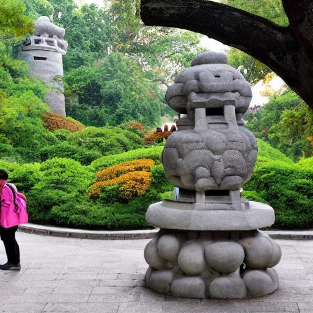 The image features a person walking down a path in a park, surrounded by a lush green environment. The person is carrying a backpack, and there are two large stone sculptures nearby. One of the sculptures is located closer to the left side of the path, while the other is situated more towards the center.
In addition to the sculptures, there are two SBERT similarity: 0.41
Text-to-image model: Stable Diffusion 1.5 | Generated Image Text Reconstruction 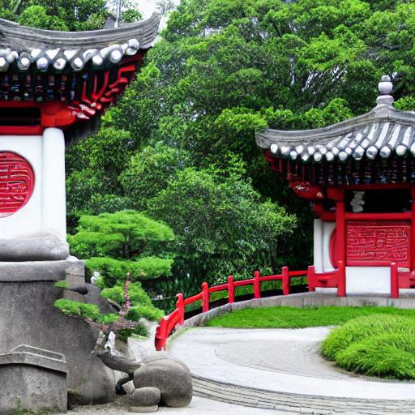 The image features a beautiful garden with two large, ornate red and white pagoda-style buildings. These pagodas are situated in the middle of the garden, surrounded by greenery. The garden is well-maintained, with a path leading to the pagodas.
In addition to the pagodas, there are several potted plants scattered throughout the SBERT similarity: 0.34
Text-to-image model: Stable Diffusion 1.5 |
Generated Image Text Reconstruction The image features a lush green vineyard with rows of grapevines growing on both sides of a dirt road. The vines are lined up neatly, creating a picturesque scene. The road is surrounded by the vines, giving the impression of a pathway through the vineyard. The vines are of various heights, adding depth and SBERT similarity: 0.83
Text-to-image model: Stable Diffusion XL (Turbo) | Generated Image Text Reconstruction The image features a lush green vineyard with rows of grapevines stretching out in all directions. The vines are filled with green grapes, creating a picturesque scene. The vineyard is surrounded by a dirt path that runs through the middle of the rows, providing a clear path for visitors to explore the area. The vines are arranged SBERT similarity: 0.83
Text-to-image model: Stable Diffusion XL | Generated Image Text Reconstruction The image features a vineyard with a dirt path running through the middle of it. The path is surrounded by rows of grapevines, creating a picturesque scene. The vines are lush and green, and they stretch out in all directions, giving the impression of an endless vineyard. The pathway is the only clear path through the vine SBERT similarity: 0.80
Text-to-image model: Stable Diffusion 3 | Generated Image Text Reconstruction The image features a lush green field with a dirt path running through the middle of it. The path is surrounded by rows of grapevines, creating a picturesque scene. The vines are lush and green, indicating a healthy and thriving environment. The sun is shining brightly, illuminating the entire scene and enhancing the beauty SBERT similarity: 0.78
Text-to-image model: Stable Diffusion 1.5 | Generated Image Text Reconstruction The image features a dirt path surrounded by lush green vineyards. The path is lined with numerous vines, creating a picturesque scene. The vines are of various sizes and are spread out along the path, with some closer to the foreground and others further in the background. The overall atmosphere of the scene is serene and inviting, showc SBERT similarity: 0.78
Text-to-image model: Stable Diffusion 1.5 | Generated Image Text Reconstruction The image features a lush green vineyard with rows of grapevines stretching across the scene. The vines are intertwined and appear to be well-maintained, creating a picturesque landscape. The vineyard is situated on a hillside, with the vines covering the entire area.
In the background, there are trees that add SBERT similarity: 0.77
Text-to-image model: Stable Diffusion XL (Turbo) | Generated Image Text Reconstruction The image features a dirt road surrounded by lush green vineyards. The road is situated between two rows of grapevines, creating a picturesque scene. The vines are well-maintained and extend in both directions, providing a sense of depth to the landscape. The road appears to be a pathway for people to walk or drive through the v SBERT similarity: 0.76
Text-to-image model: Stable Diffusion 3 | Generated Image Text Reconstruction The image depicts a dirt road surrounded by lush green vineyards. The road is situated in the middle of the vineyard, with rows of vines on both sides. The vines are well-maintained and appear to be healthy, creating a picturesque scene.
In the background, there is a small building, possibly a SBERT similarity: 0.75
Text-to-image model: Stable Diffusion 1.5 | Generated Image Text Reconstruction The image features a dirt road surrounded by lush green vineyards. The road is lined with numerous vines and trees, creating a picturesque scene. The vines are in various stages of growth, with some appearing to be ripe and ready for harvest. The overall atmosphere of the scene is serene and peaceful, with the road leading through the SBERT similarity: 0.75
Text-to-image model: Stable Diffusion 3 | Generated Image Text Reconstruction The image depicts a beautiful vineyard with rows of grapevines stretching into the distance. The vines are lush and green, creating a serene and picturesque scene. The sun is shining brightly, illuminating the vineyard and casting a warm glow on the vines. The pathway between the rows of vines is SBERT similarity: 0.74
Text-to-image model: Stable Diffusion XL | Generated Image Text Reconstruction The image depicts a lush green hillside with a dirt path running through the middle of it. The path is surrounded by numerous vines and trees, creating a serene and picturesque scene. The vines are lush and green, covering the hillside and providing a sense of tranquility. The path appears to be a narrow trail, leading through the SBERT similarity: 0.71
Text-to-image model: Stable Diffusion XL | Generated Image Text Reconstruction The image features a lush green hillside with a dirt path running through the middle of it. The path is surrounded by numerous vines and trees, creating a serene and picturesque scene. The vines are lush and green, covering the hillside and creating a sense of depth and natural beauty. The pathway is the main focal point of the image, SBERT similarity: 0.69
Text-to-image model: Stable Diffusion XL (Turbo) |
Generated Image Text Reconstruction The image features a computer screen displaying a red star with a magnifying glass on it. The magnifying glass is positioned in the center of the screen, capturing attention. The screen also shows a yellow flower, adding a touch of color to the scene.
In addition to the main elements, there are several other objects on the screen. There are two clocks, SBERT similarity: 0.81
Text-to-image model: Stable Diffusion 3 | Generated Image Text Reconstruction The image features a computer screen with a magnifying glass icon on it. The magnifying glass is positioned in the middle of the screen, capturing attention. The screen also displays a star and a flower, adding a touch of color and visual interest to the scene. The combination of the magnifying glass, star, and flower creates a unique and eye-catching design. SBERT similarity: 0.80
Text-to-image model: Stable Diffusion 3 | Generated Image Text Reconstruction The image features a computer screen with a magnifying glass hovering over a red star. The magnifying glass is placed in the center of the screen, drawing attention to the star. The screen also displays a list of items, possibly related to the magnifying glass and the red star. The overall scene suggests a focus on the red star and its importance within the context of the displayed SBERT similarity: 0.77
Text-to-image model: Stable Diffusion XL (Turbo) | Generated Image Text Reconstruction The image features a computer monitor with a magnifying glass placed on top of it. The magnifying glass is positioned in the center of the screen, drawing attention to the content displayed on the monitor. The screen is filled with various colorful flowers, creating a vibrant and eye-catching scene. The combination of the magnifying glass and the flowers on the screen gives SBERT similarity: 0.77
Text-to-image model: Stable Diffusion XL (Turbo) | Generated Image Text Reconstruction The image features a computer monitor with a magnifying glass on top of it, giving the impression of a magnified view of the screen. The magnifying glass is positioned in the center of the monitor, drawing attention to the screen's content.
In the background, there are several stars scattered around, adding a playful and colorful touch to the scene. Additionally SBERT similarity: 0.76
Text-to-image model: Stable Diffusion XL | Generated Image Text Reconstruction The image features a computer monitor with a yellow star on it, placed on a pink background. The star is positioned in the center of the monitor, making it the focal point of the scene. The background is filled with various stars of different sizes, creating a vibrant and colorful atmosphere. The combination of the yellow star on the monitor and the pink background SBERT similarity: 0.75
Text-to-image model: Stable Diffusion 1.5 | Generated Image Text Reconstruction The image features a magnifying glass hovering over a star on a white background. The magnifying glass is positioned in the center of the image, with the star being the focal point. The star is surrounded by a few pink flowers, adding a touch of color to the scene.
In the background, there is a computer screen displaying a website. The website SBERT similarity: 0.74
Text-to-image model: Stable Diffusion XL (Turbo) | Generated Image Text Reconstruction The image features a computer screen with a pink background. On the screen, there is a magnifying glass icon, which is likely a part of a search tool or a browser. The magnifying glass is positioned towards the left side of the screen.
In addition to the magnifying glass, there are several other icons displayed on the screen. These icons are scattered across SBERT similarity: 0.73
Text-to-image model: Stable Diffusion 3 | Generated Image Text Reconstruction The image features a computer monitor with a red star placed on top of it. The star is positioned in the center of the screen, drawing attention to it. The computer monitor is surrounded by a colorful and vibrant background, which includes a variety of flowers and plants. There are at least six different flowers in the scene, with some located near the top of the image SBERT similarity: 0.71
Text-to-image model: Stable Diffusion XL | Generated Image Text Reconstruction  The image features a computer monitor with a star in the center, surrounded by a variety of colorful flowers. The flowers are scattered around the monitor, with some positioned above, below, and to the sides of the screen. The vibrant colors and the presence of the star create a visually appealing and lively scene. SBERT similarity: 0.71
Text-to-image model: Stable Diffusion 1.5 | Generated Image Text Reconstruction The image features a pink magnifying glass placed on a pink surface, likely a table. The magnifying glass is positioned in the center of the scene, with a laptop computer located to the right of it.
In addition to the magnifying glass and laptop, there are several potted plants scattered throughout the image. Some of these plants are placed near the SBERT similarity: 0.59
Text-to-image model: Stable Diffusion XL | Generated Image Text Reconstruction The image features a colorful and vibrant scene with a large, illuminated star in the center. The star is surrounded by various other stars of different sizes, creating a visually appealing pattern. The scene also includes a neon sign with a logo, which adds to the overall bright and lively atmosphere. The combination of the illuminated star and the ne SBERT similarity: 0.55
Text-to-image model: Stable Diffusion 1.5 |
Generated Image Text Reconstruction The image depicts a modern and stylish office space with a white counter and a purple wall. The counter is adorned with several potted plants, creating a lively and inviting atmosphere. There are three chairs placed around the counter, with one on the left side, another on the right side, and the third one closer to the center. SBERT similarity: 0.62
Text-to-image model: Stable Diffusion XL | Generated Image Text Reconstruction The image showcases a modern and stylish interior design with a focus on greenery. The room features a dining area with a table surrounded by chairs, some of which are green. The table is adorned with white and yellow balls, adding a playful touch to the space.
In addition to the dining area, there is a living space with SBERT similarity: 0.59
Text-to-image model: Stable Diffusion 1.5 | Generated Image Text Reconstruction The image features a modern and stylish room with a large wall display. The wall display is adorned with a blue sign and a green wall, creating a visually appealing contrast. The room also has a dining area with a dining table surrounded by chairs. There are three chairs on one side of the table and two chairs on the other side. SBERT similarity: 0.58
Text-to-image model: Stable Diffusion 1.5 | Generated Image Text Reconstruction The image features a modern and stylish bar area with a green countertop. The counter is surrounded by four yellow chairs, two on each side, providing seating for customers. The bar is adorned with several potted plants, adding a touch of greenery to the space.
In addition to the seating arrangement, there is a TV mounted on the wall SBERT similarity: 0.58
Text-to-image model: Stable Diffusion XL (Turbo) | Generated Image Text Reconstruction The image features a modern and well-lit office space with a clean and minimalist design. The room is furnished with a white desk and a green and purple wall, creating a visually appealing contrast. There are two chairs placed around the desk, one on the left side and the other on the right side.
In addition to the desk SBERT similarity: 0.58
Text-to-image model: Stable Diffusion 3 | Generated Image Text Reconstruction The image depicts a modern and stylish living room with a yellow and purple color scheme. The room features a large white couch situated in the center, surrounded by several potted plants. There are two couches in the room, one on the left side and another on the right side.
A dining table is placed in the room, with a SBERT similarity: 0.54
Text-to-image model: Stable Diffusion 3 | Generated Image Text Reconstruction The image features a modern office space with a large yellow desk in the center. The desk is surrounded by several potted plants, adding a touch of greenery to the room. There are two chairs placed near the desk, one on the left side and the other on the right side.
In addition to the desk and chairs, there is a SBERT similarity: 0.52
Text-to-image model: Stable Diffusion XL (Turbo) | Generated Image Text Reconstruction The image features a modern and stylish restaurant with a colorful and contemporary design. The dining area is filled with white chairs and tables, creating a clean and inviting atmosphere. There are three dining tables in the room, with one located near the center, another towards the left side, and the third one on the right side.
In addition to the tables SBERT similarity: 0.48
Text-to-image model: Stable Diffusion XL | Generated Image Text Reconstruction The image features a modern and stylish room with a dining table surrounded by chairs. The table is positioned in the center of the room, and there are four chairs placed around it. The chairs are arranged in a circular fashion, with two chairs on each side of the table.
In addition to the dining area, the room also contains a SBERT similarity: 0.48
Text-to-image model: Stable Diffusion XL | Generated Image Text Reconstruction The image features a modern and stylish office space with a counter and a row of chairs. There are three chairs in total, with one on the left side, one on the right side, and another one further back in the room. The counter is adorned with a vase of flowers, adding a touch of elegance to the space.
In addition SBERT similarity: 0.48
Text-to-image model: Stable Diffusion XL (Turbo) | Generated Image Text Reconstruction The image depicts a modern and well-lit office space with a white and green color scheme. There are two people in the office, one sitting at a desk and the other standing nearby. The desk is equipped with two laptops, one on each side, and a keyboard.
The office also features a dining table with chairs placed around SBERT similarity: 0.46
Text-to-image model: Stable Diffusion 3 | Generated Image Text Reconstruction The image features a modern office space with a reception desk and a counter. The desk is equipped with two computers, one on the left side and the other on the right side. There are also two keyboards and two mice placed on the desk, indicating a well-organized workspace.
In addition to the computers, there is a TV mounted SBERT similarity: 0.42
Text-to-image model: Stable Diffusion 1.5 |
Generated Image Text Reconstruction The image features two children, a boy and a girl, standing next to each other on a dirt road. They are both wearing sandals and appear to be walking down the path. The girl is wearing a pink dress, while the boy is dressed in a brown shirt. The scene is set in a field with tall grass surrounding the children, giving a sense SBERT similarity: 0.86
Text-to-image model: Stable Diffusion XL | Generated Image Text Reconstruction The image features a young boy and a young girl standing next to each other on a dirt road. They are both dressed in formal attire, with the boy wearing a black shirt and the girl wearing a pink dress. The children appear to be posing for a picture, possibly for a special occasion or event. The dirt road is surrounded by grass, SBERT similarity: 0.83
Text-to-image model: Stable Diffusion 3 | Generated Image Text Reconstruction The image features a young boy and a young girl standing next to each other on a dirt road. They are both wearing dress clothes, with the girl wearing a pink dress and the boy wearing a black shirt and khaki pants. The children appear to be posing for a picture, possibly in a rural setting.
In the background, SBERT similarity: 0.80
Text-to-image model: Stable Diffusion 3 | Generated Image Text Reconstruction The image features a young boy and a young girl standing next to each other on a dirt road. The girl is wearing a pink dress, while the boy is dressed in a black shirt and brown pants. They appear to be posing for a picture, possibly siblings or close friends.
In the background, there are a few bushes and a SBERT similarity: 0.79
Text-to-image model: Stable Diffusion 3 | Generated Image Text Reconstruction The image features two children walking down a dirt road in a rural area. The children are positioned close to each other, with one child on the left side of the road and the other on the right side. They appear to be enjoying their time together, exploring the countryside.
The scene is surrounded by tall grass, giving the impression of a SBERT similarity: 0.76
Text-to-image model: Stable Diffusion XL (Turbo) | Generated Image Text Reconstruction The image features three children standing on a dirt road, posing for a picture. They are positioned close to each other, with one child on the left, another in the middle, and the third on the right. The children appear to be enjoying their time together, possibly on a family outing or a day trip. SBERT similarity: 0.75
Text-to-image model: Stable Diffusion 1.5 | Generated Image Text Reconstruction The image features two children, a boy and a girl, walking down a dirt path together. They are holding hands, enjoying their time outdoors. The path is surrounded by tall grass, giving the scene a natural and serene atmosphere. The children appear to be walking in the same direction, possibly exploring the area or going to a specific destination. SBERT similarity: 0.74
Text-to-image model: Stable Diffusion XL (Turbo) | Generated Image Text Reconstruction The image depicts two young girls walking down a dirt road, possibly in a rural setting. They are walking together, with one girl slightly ahead of the other. The girls are wearing dresses, and one of them is wearing a pink dress. The scene appears to be captured during sunset, as the lighting suggests a warm and serene atmosphere. SBERT similarity: 0.68
Text-to-image model: Stable Diffusion XL | Generated Image Text Reconstruction The image depicts a young boy and girl walking down a dirt path in a field. They are holding hands, enjoying their time together. The field is filled with tall grass, creating a serene and natural atmosphere. The children appear to be the main focus of the scene, as they walk together, possibly exploring or playing in the field. SBERT similarity: 0.66
Text-to-image model: Stable Diffusion XL | Generated Image Text Reconstruction The image features a group of three children walking down a dirt path in a field. They are walking in a line, with one child slightly ahead of the other two. The children appear to be enjoying their time outdoors, possibly exploring the area or going on a hike.
In the background, there is a tree visible, adding to the natural setting SBERT similarity: 0.65
Text-to-image model: Stable Diffusion XL (Turbo) | Generated Image Text Reconstruction The image features three people walking down a dirt road, each wearing a mask. They appear to be a family, with one person on the left, another in the middle, and the third person on the right. The masks they are wearing are pink, and they seem to be enjoying their time together.
The dirt road is surrounded by tall SBERT similarity: 0.63
Text-to-image model: Stable Diffusion 1.5 | Generated Image Text Reconstruction The image features a family of four, consisting of a man and three children, standing together in a grassy field. The man is wearing a gray shirt and a black hat, while the children are dressed in pink clothing. They appear to be posing for a picture, with the man standing behind the children.
The family is positioned in a line SBERT similarity: 0.57
Text-to-image model: Stable Diffusion 1.5 |
Generated Image Text Reconstruction The image depicts a snowy day in a city, with a small red food stand or kiosk situated in the middle of the scene. The stand is surrounded by trees, and a few people can be seen nearby, likely browsing the food options or waiting to make a purchase.
There are a couple of cars parked in the background, one on the SBERT similarity: 0.68
Text-to-image model: Stable Diffusion XL | Generated Image Text Reconstruction 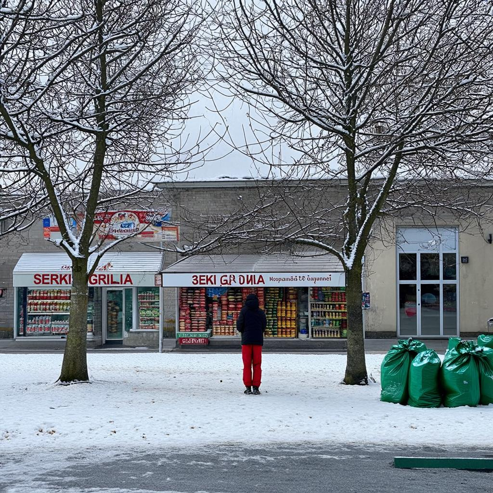 The image depicts a snowy scene with a person standing in the middle of a snow-covered street. The person is wearing red pants and appears to be walking through the snow. The street is lined with trees, and there are several bottles scattered around the area.
In the background, there is a building with a storefront, possibly a SBERT similarity: 0.67
Text-to-image model: Stable Diffusion 3 | Generated Image Text Reconstruction The image depicts a snowy street scene with a man walking down the sidewalk. The sidewalk is lined with several green trash cans, and a tree is covered in snow. The man is carrying a handbag as he walks past the trash cans.
In the background, there is a store with a sign on top of it. SBERT similarity: 0.67
Text-to-image model: Stable Diffusion XL (Turbo) | Generated Image Text Reconstruction The image depicts a snowy day in a city, with a man standing in front of a store. The store appears to be a grocery store, as there are several bottles visible in the scene. The man is wearing red pants and is looking at the store.
In addition to the man, there are two other people in the scene, SBERT similarity: 0.67
Text-to-image model: Stable Diffusion 3 | Generated Image Text Reconstruction The image depicts a snowy city street with a row of small businesses on one side. The buildings are covered in snow, and the street is lined with trees. The snow-covered trees and buildings create a picturesque winter scene.
There are several people walking along the snowy street, with one person closer to the left side of the image and SBERT similarity: 0.61
Text-to-image model: Stable Diffusion XL (Turbo) | Generated Image Text Reconstruction 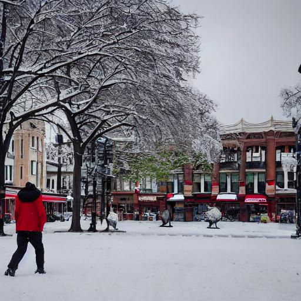 The image depicts a snowy city street with a person walking down the sidewalk. The person is wearing a red jacket and appears to be the main focus of the scene. The street is lined with trees and buildings, creating a picturesque winter atmosphere.
There are several other people in the scene, some of them walking or standing near the buildings. SBERT similarity: 0.61
Text-to-image model: Stable Diffusion 1.5 | Generated Image Text Reconstruction The image depicts a snowy scene with a man standing in front of a small store, possibly a grill or a restaurant. The man is wearing red pants and appears to be waiting for someone. There are two other people in the scene, one standing closer to the left side of the image and the other further to the right.
The store is surrounded SBERT similarity: 0.60
Text-to-image model: Stable Diffusion 3 | Generated Image Text Reconstruction The image depicts a snowy day in a city, with a restaurant sign prominently displayed in the foreground. The sign is red and white, and it is situated in front of a building. The snow-covered ground and the presence of the sign create a wintry atmosphere.
There are several people in the scene, with one person standing near the SBERT similarity: 0.59
Text-to-image model: Stable Diffusion XL | Generated Image Text Reconstruction The image depicts a snowy city street with a red bus stop shelter in the middle of the scene. The bus stop is surrounded by several benches, with one on the left side, another on the right side, and a third one further back. A few people can be seen walking around the area, with one person closer to the bus stop and others scattered throughout the SBERT similarity: 0.57
Text-to-image model: Stable Diffusion XL | Generated Image Text Reconstruction The image depicts a snow-covered park with a tree in the center. The park is surrounded by buildings, and the snow has blanketed the area, including the benches and tables. There are several benches scattered throughout the park, with some located near the tree and others further away.
In addition to the benches, there are a few people SBERT similarity: 0.57
Text-to-image model: Stable Diffusion 1.5 | Generated Image Text Reconstruction The image depicts a snowy scene with a person sitting at a table in the middle of a snow-covered park. The person is wearing a red jacket and appears to be enjoying the winter atmosphere. The table is surrounded by several benches, some of which are covered in snow.
In the background, there are a few other people scattered around SBERT similarity: 0.51
Text-to-image model: Stable Diffusion 1.5 | Generated Image Text Reconstruction The image depicts a snowy street scene with a man standing in the snow, holding a snowboard. He appears to be enjoying the winter weather and is likely preparing to snowboard down the street. The man is wearing red pants, which stand out against the snowy background.
There are several other people in the scene, some of them standing SBERT similarity: 0.46
Text-to-image model: Stable Diffusion XL (Turbo) |
Generated Image Text Reconstruction The image features a large brown house with a unique star-shaped lawn decoration in the front yard. The star is made of grass and is prominently displayed in the center of the yard. The house is situated on a street corner, and there is a telephone pole nearby.
In addition to the house, there are two cars parked in the vic SBERT similarity: 0.68
Text-to-image model: Stable Diffusion 3 | Generated Image Text Reconstruction The image features a small brown house with a large deck and a metal box on the side of the road. The house is situated on a corner, and there is a star-shaped lawn ornament in the front yard. The metal box appears to be a pay station or a parking meter, located near the sidewalk.
In the background, there are two SBERT similarity: 0.65
Text-to-image model: Stable Diffusion 3 | Generated Image Text Reconstruction The image features a large, white, two-story house with a prominent white porch. The house is surrounded by a lush green yard, with a variety of trees and bushes adding to the scenery. There are several potted plants placed around the property, enhancing the overall beauty of the scene.
In addition to the house, there is a car SBERT similarity: 0.61
Text-to-image model: Stable Diffusion 1.5 | Generated Image Text Reconstruction The image features a small house with a large star on the lawn in front of it. The house is located on a street corner, and there is a mailbox nearby. Above the house, there is a deck with a railing, providing a comfortable outdoor space.
In addition to the house, there are two cars parked in the scene, one closer SBERT similarity: 0.60
Text-to-image model: Stable Diffusion 3 | Generated Image Text Reconstruction The image features a large, brown house with a white porch and a yellow car parked in front of it. The car is positioned on the left side of the house, occupying a significant portion of the scene. The house has a prominent clock on its exterior, adding a unique touch to the architecture.
In addition to the house and car, there are two SBERT similarity: 0.59
Text-to-image model: Stable Diffusion XL | Generated Image Text Reconstruction The image features a large, white, two-story house with a blue trim. The house is situated on a street corner, and there is a lamp post in front of it. The lamp post is adorned with a glass globe, adding a touch of elegance to the scene.
In addition to the house, there is a telephone booth located nearby SBERT similarity: 0.59
Text-to-image model: Stable Diffusion 1.5 | Generated Image Text Reconstruction The image features a large, white, two-story house with yellow trim. The house is situated on a lush green lawn, and it appears to be a mansion. The front of the house is adorned with a walkway leading up to the entrance.
There are several potted plants placed around the house, adding to the overall aesthetic SBERT similarity: 0.56
Text-to-image model: Stable Diffusion 1.5 | Generated Image Text Reconstruction 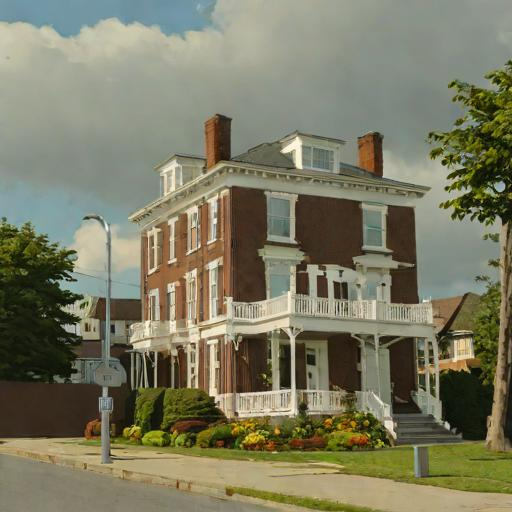 The image features a large, three-story brick house with a white porch and a white railing. The house is situated on a corner lot, and it is surrounded by a beautiful garden. The garden is filled with various flowers and plants, creating a vibrant and lively atmosphere.
In addition to the house, there are two cars parked nearby, one SBERT similarity: 0.54
Text-to-image model: Stable Diffusion XL (Turbo) | Generated Image Text Reconstruction The image features a large, three-story brick house with a white porch. The house is situated on a street corner, and there is a fire hydrant located near the sidewalk. The house has a prominent chimney, and a ladder can be seen leaning against it.
In front of the house, there is a mailbox, and a few p SBERT similarity: 0.52
Text-to-image model: Stable Diffusion XL (Turbo) | Generated Image Text Reconstruction The image features a large, two-story brick house with a white porch and a red stop sign in front of it. The house is situated on a street corner, and there is a blue car parked in front of it. The car is positioned close to the stop sign, and it appears to be the only vehicle visible in the scene. The house's architecture SBERT similarity: 0.51
Text-to-image model: Stable Diffusion XL (Turbo) | Generated Image Text Reconstruction The image features a large, brown, three-story house with a yellow car parked in front of it. The car is positioned on the left side of the house, occupying a significant portion of the scene. The house has a prominent American flag flying on a flagpole, adding a patriotic touch to the scene.
In addition to the house and the car SBERT similarity: 0.51
Text-to-image model: Stable Diffusion XL | Generated Image Text Reconstruction The image features a large, brown, two-story house with a yellow door. The house is situated on a street corner, and there is a dog sitting on the sidewalk in front of the house. The dog appears to be looking at the camera, capturing the viewer's attention.
In addition to the house and the dog, there are two people in SBERT similarity: 0.45
Text-to-image model: Stable Diffusion XL |
Generated Image Text Reconstruction The image features a cell phone with a blue background. On the screen, there are two emojis, one of which is a smiley face with a speech bubble, and the other is a sad face with a tear drop. The cell phone is placed on a table, and the screen is the main focus of the scene. SBERT similarity: 0.74
Text-to-image model: Stable Diffusion 1.5 | Generated Image Text Reconstruction The image features a cell phone screen displaying a "Feedback" message with a row of six different emojis. The emojis are arranged in a horizontal line, with the first one on the left side, the second one in the middle, and the remaining four on the right side of the screen. The arrangement of the emojis suggests that the user is being asked SBERT similarity: 0.72
Text-to-image model: Stable Diffusion 3 | Generated Image Text Reconstruction The image features a cell phone with a blue background and a row of emojis displayed on the screen. There are a total of seven emojis, with some of them being sad faces. The phone is placed on a table, and the emojis are arranged in a row, with some of them being larger than others. The scene gives the impression of a playful SBERT similarity: 0.71
Text-to-image model: Stable Diffusion XL | Generated Image Text Reconstruction The image features two white smartphones placed side by side on a table. Both phones have their screens on, displaying a blue background with a yellow smiley face and a blue speech bubble. The phones are positioned in such a way that the screens are clearly visible, showcasing the same emoji and speech bubble design. SBERT similarity: 0.71
Text-to-image model: Stable Diffusion 1.5 | Generated Image Text Reconstruction The image features a cell phone screen displaying a row of six different emojis. The emojis are arranged in a horizontal line, with each one varying in size and position. The screen is predominantly white, providing a clean and uncluttered background for the emojis. The arrangement of the emojis creates a visually appealing and playful display SBERT similarity: 0.70
Text-to-image model: Stable Diffusion 3 | Generated Image Text Reconstruction The image features a cell phone screen displaying a variety of emojis. There are numerous emojis spread across the screen, with some placed in the top left corner, others in the top right corner, and a few more in the bottom left corner. The emojis are of different sizes and shapes, showcasing a diverse collection of icons. The cell phone screen occup SBERT similarity: 0.70
Text-to-image model: Stable Diffusion XL (Turbo) | Generated Image Text Reconstruction The image features a cell phone screen displaying a variety of emojis. There are several different emojis, including a mix of happy and sad faces, as well as a few other symbols. The emojis are arranged in a grid-like pattern, with some placed closer to the top of the screen and others towards the bottom. The arrangement of the emojis creates SBERT similarity: 0.70
Text-to-image model: Stable Diffusion XL | Generated Image Text Reconstruction The image features a cell phone with a blue background and a row of different colored emojis displayed on the screen. There are a total of nine emojis, each with a unique color and facial expression. The emojis are arranged in a horizontal line, with some of them being larger than others. The cell phone is placed on a white surface, which provides a SBERT similarity: 0.68
Text-to-image model: Stable Diffusion XL | Generated Image Text Reconstruction The image features a cell phone with a blue background and a row of six emojis displayed on the screen. The emojis are arranged in a line, with the first one on the left side, the second one slightly to the right, the third one further to the right, and the last three emojis in a row on the right side of the screen. The SBERT similarity: 0.67
Text-to-image model: Stable Diffusion 3 | Generated Image Text Reconstruction The image features a smartphone screen displaying a variety of emojis. There are at least 13 different emojis visible on the screen, each with unique expressions and colors. The emojis are arranged in a grid-like pattern, covering the entire screen. The emojis vary in size and position, creating a visually engaging and diverse collection of emot SBERT similarity: 0.66
Text-to-image model: Stable Diffusion XL (Turbo) | Generated Image Text Reconstruction The image features two cell phones placed side by side, both displaying the same message. The message is written in a foreign language, which appears to be Greek. The phones are positioned in such a way that the screens are clearly visible, allowing the viewer to read the message. The phones are placed on a flat surface, with one phone slightly higher than the other SBERT similarity: 0.61
Text-to-image model: Stable Diffusion 1.5 | Generated Image Text Reconstruction The image features a collection of various buttons, with a prominent button displaying a smiling face. The buttons are arranged in a row, and some of them have foreign writing on them. The buttons are of different sizes and shapes, creating a diverse and visually interesting display. SBERT similarity: 0.51
Text-to-image model: Stable Diffusion XL (Turbo) |
Generated Image Text Reconstruction The image features a large, sleek airplane flying through the sky. The airplane is a blue and silver jetliner, possibly a jumbo jet, with a long and narrow body. The plane is flying high above the clouds, giving a sense of its impressive size and speed. The sky is clear and blue, providing a perfect backdrop for the airplane SBERT similarity: 0.70
Text-to-image model: Stable Diffusion 1.5 | Generated Image Text Reconstruction The image features a sleek, silver airplane flying through a cloudy sky. The airplane has a unique design, with a large wing extending from the side of the fuselage. The plane is flying at a high altitude, as evidenced by the clouds below it. The scene captures the beauty and power of the aircraft as it soars through the sky SBERT similarity: 0.69
Text-to-image model: Stable Diffusion XL | Generated Image Text Reconstruction The image features a large, sleek airplane flying through a clear blue sky. The airplane is positioned in the center of the scene, with its wings spread out, showcasing its impressive size and design. The sky is cloudless, providing a perfect backdrop for the airplane's flight. SBERT similarity: 0.68
Text-to-image model: Stable Diffusion 1.5 | Generated Image Text Reconstruction The image features a sleek, silver fighter jet flying through a cloudy sky. The jet is positioned in the center of the scene, with its nose pointed upwards. The sky is filled with clouds, creating a dramatic backdrop for the aircraft. The jet appears to be a modern and advanced design, showcasing its aerodynamic capabilities. SBERT similarity: 0.66
Text-to-image model: Stable Diffusion XL | Generated Image Text Reconstruction The image features a fighter jet flying through a clear blue sky. The jet is positioned in the center of the scene, with its wings spread wide. There are two people visible inside the cockpit, likely pilots, who are enjoying the flight. The jet appears to be a military aircraft, showcasing its impressive capabilities and design. SBERT similarity: 0.65
Text-to-image model: Stable Diffusion 3 | Generated Image Text Reconstruction The image features a fighter jet flying through a clear blue sky. The jet is positioned in the upper part of the scene, with its nose pointing upwards. Two people can be seen inside the cockpit, likely pilots, enjoying the thrill of flying the aircraft. The jet appears to be a military plane, showcasing its impressive capabilities and design SBERT similarity: 0.65
Text-to-image model: Stable Diffusion 3 | Generated Image Text Reconstruction The image features a silver fighter jet flying through a clear blue sky. The jet is positioned in the upper left part of the scene, with its nose pointing upwards. The sky is cloudless, providing a perfect backdrop for the jet's flight. The jet appears to be a military aircraft, possibly a fighter jet, as it soars through the air. SBERT similarity: 0.64
Text-to-image model: Stable Diffusion XL (Turbo) | Generated Image Text Reconstruction The image features a sleek, silver fighter jet flying high in the blue sky. The jet is positioned in the upper left part of the scene, with its nose pointing upwards. The sky is clear and cloudless, providing an ideal backdrop for the jet's flight. The jet's impressive design and maneuverability make it a captivating SBERT similarity: 0.63
Text-to-image model: Stable Diffusion XL | Generated Image Text Reconstruction The image features a silver fighter jet flying through a blue sky. The jet is positioned in the upper part of the scene, with its nose pointing upwards. The sky is clear and cloudless, providing an ideal backdrop for the jet's flight. The fighter jet appears to be in motion, showcasing its agility and power as it soars through SBERT similarity: 0.62
Text-to-image model: Stable Diffusion XL (Turbo) | Generated Image Text Reconstruction The image features a large passenger jet flying through a cloudy sky. The airplane is positioned in the center of the scene, with its wings spread out, showcasing its impressive size. The jet is flying high up in the sky, possibly on its way to a destination or returning from a completed flight. SBERT similarity: 0.62
Text-to-image model: Stable Diffusion XL (Turbo) | Generated Image Text Reconstruction The image features a jet airplane flying through a clear blue sky. The airplane is positioned towards the right side of the scene, with its nose pointing upwards. A contrail, or smoke trail, is visible behind the airplane, extending from the left side of the image towards the right. The contrail appears to be a long, thin line that contrasts with SBERT similarity: 0.59
Text-to-image model: Stable Diffusion 1.5 | Generated Image Text Reconstruction The image features a fighter jet flying high in the sky, with a clear blue background. The jet is equipped with a missile, showcasing its combat capabilities. There are two people visible inside the cockpit, likely pilots or crew members, who are operating the aircraft. The jet appears to be a military aircraft, possibly a fighter jet, as it SBERT similarity: 0.59
Text-to-image model: Stable Diffusion 3 |
Generated Image Text Reconstruction The image features a blue and white awning with the words "Museo Del Greco" written on it. The awning is attached to a building, possibly a museum or a store. The awning is supported by two poles, one on the left side and the other on the right side.
In the background, there are two people standing, possibly adm SBERT similarity: 0.74
Text-to-image model: Stable Diffusion 3 | Generated Image Text Reconstruction The image features a large, white building with a blue awning and a green roof. The building has a unique design, as it is covered in ivy, giving it a lush and natural appearance. The ivy is growing on the walls and the roof, creating a beautiful and serene atmosphere.
There are two windows on the building, one on the left side SBERT similarity: 0.69
Text-to-image model: Stable Diffusion XL | Generated Image Text Reconstruction The image features a white building with a green awning and a blue and white striped roof. The building has a sign on the side, and there are two flags hanging from the top of the building. The flags are positioned on the left and right sides of the building, adding a touch of color to the scene.
In front of the building, there are SBERT similarity: 0.69
Text-to-image model: Stable Diffusion 1.5 | Generated Image Text Reconstruction The image features a green building with a blue awning that reads "Axios Greco." The awning is covering the entrance to the building, providing shade and protection. The building appears to be a restaurant or a store, as it is adorned with a sign and a logo.
There are two people in the scene, one standing closer to the left SBERT similarity: 0.66
Text-to-image model: Stable Diffusion XL (Turbo) | Generated Image Text Reconstruction The image features a blue umbrella covering a building, likely a museum, with the name "Museo Del Greco" written on it. The umbrella is positioned over the entrance, providing shade and protection from the elements.
In the background, there are trees visible, adding a touch of nature to the scene. Additionally, a person can be SBERT similarity: 0.66
Text-to-image model: Stable Diffusion 3 | Generated Image Text Reconstruction The image features a large, white building with a blue and white striped awning covering its entrance. The building has a prominent clock tower on top, adding a sense of grandeur to the structure. The clock is positioned towards the center of the tower.
There are two large green doors in front of the building, which are likely the main entrance. The building appears SBERT similarity: 0.64
Text-to-image model: Stable Diffusion XL | Generated Image Text Reconstruction The image features a building with a blue sign on the side, which reads "Museo Burceco." The sign is positioned above a white awning, adding a touch of color to the scene. The building appears to be a museum or a cultural center, as indicated by the sign.
In the background, there is a potted plant placed near the building SBERT similarity: 0.64
Text-to-image model: Stable Diffusion XL (Turbo) | Generated Image Text Reconstruction The image features a large building with a unique and eye-catching design. The building has a blue wall on one side and a green wall on the other side. The green wall is adorned with a row of green bushes, creating a lush and vibrant appearance. The blue wall is also covered in greenery, adding to the building's distinctive SBERT similarity: 0.62
Text-to-image model: Stable Diffusion 1.5 | Generated Image Text Reconstruction The image features a large white building with a blue and white awning covering its entrance. The building appears to be a hotel, as indicated by the name "Mosco Royal" displayed on the awning. The awning is supported by two poles, one on each side of the entrance.
There are several people in the scene, with one person standing near the SBERT similarity: 0.62
Text-to-image model: Stable Diffusion XL | Generated Image Text Reconstruction The image features a small, white building with a green door and a blue awning. The building has a sign on the top, which is written in a foreign language. The door is open, revealing a small room inside.
There are two potted plants in the scene, one located on the left side of the building and the other on the right side. The SBERT similarity: 0.62
Text-to-image model: Stable Diffusion XL (Turbo) | Generated Image Text Reconstruction The image features a blue building with a white roof, which appears to be a church. The building has a large white pillar in the center, and a statue is placed on top of it. The church is surrounded by trees, adding a serene atmosphere to the scene.
There are several benches located outside the church, providing a place for visitors to sit and relax SBERT similarity: 0.61
Text-to-image model: Stable Diffusion 1.5 | Generated Image Text Reconstruction The image features a blue and white umbrella covering a dining table outside a building. The umbrella is positioned over the table, providing shade and protection from the elements. The table is surrounded by chairs, with one on the left side, another on the right side, and a third one further back.
In the background, there is a person SBERT similarity: 0.43
Text-to-image model: Stable Diffusion 3 |
Generated Image Text Reconstruction The image features a tall, grey building with a red pole extending from the top to the bottom. The red pole stands out against the grey background, creating a striking contrast. The building appears to be a residential or commercial structure, with multiple windows on each floor. The windows vary in size and are distributed across the building's facade, giving it a well-designed SBERT similarity: 0.76
Text-to-image model: Stable Diffusion 3 | Generated Image Text Reconstruction The image features a tall, multi-story building with a red and white color scheme. The building has a red stripe running down the center, and the windows are painted red. The building is made of concrete and has a modern design.
There are several windows on the building, with some located on the top floor and others on the lower floors. The windows are SBERT similarity: 0.75
Text-to-image model: Stable Diffusion XL (Turbo) | Generated Image Text Reconstruction The image features a tall, multi-story building with a red and white color scheme. The building has a row of windows on each floor, with some windows being red and others white. The windows are of various sizes, and they are arranged in a visually appealing manner. The building's facade is predominantly white, with the red accents adding a pop SBERT similarity: 0.74
Text-to-image model: Stable Diffusion 1.5 | Generated Image Text Reconstruction The image features a tall, multi-story building with a red and white color scheme. The building has a red stripe running down the side, creating a striking contrast with the white background. The building is made up of several floors, with windows on each level.
There are numerous windows visible on the building, with some located closer to the top and others near the SBERT similarity: 0.74
Text-to-image model: Stable Diffusion 1.5 | Generated Image Text Reconstruction  The image features a tall, grey building with a red stripe running down its side. The building has multiple floors, and the red stripe is prominently visible on the side of the structure. The building appears to be a residential or commercial building, with a large number of windows on each floor. The windows are of various sizes and are distributed across the building' SBERT similarity: 0.72
Text-to-image model: Stable Diffusion 3 | Generated Image Text Reconstruction The image features a tall, multi-story building with a red and white color scheme. The building has a red stripe running down the center, and the windows are arranged in a pattern. The building is made of concrete and has a large number of windows, with some of them being larger than others.
There are several people in the scene, with one person standing near SBERT similarity: 0.71
Text-to-image model: Stable Diffusion XL (Turbo) | Generated Image Text Reconstruction The image features a tall, multi-story building with a red and white color scheme. The building has a red stripe running down its side, adding a striking visual element to the structure. The building is situated in a city, surrounded by other buildings.
There are several windows on the building, with some located on the top floor and others on the lower floors. SBERT similarity: 0.70
Text-to-image model: Stable Diffusion XL | Generated Image Text Reconstruction The image features a tall, multi-story building with a red and white color scheme. The building has a red stripe running down the side, and the balconies are painted red. The building is made of concrete and has a modern design.
There are several windows on the building, with some located on the top floor and others on the lower floors. A SBERT similarity: 0.69
Text-to-image model: Stable Diffusion XL | Generated Image Text Reconstruction The image features a large, multi-story building with a unique design. The building has a combination of gray and red colors, and it is adorned with red stripes on the side. The structure is made of steel and concrete, giving it a modern and sturdy appearance.
There are several windows on the building, with some located on the upper floors SBERT similarity: 0.68
Text-to-image model: Stable Diffusion XL | Generated Image Text Reconstruction The image features a tall, multi-story building with a red stripe running down the side. The building has a large number of windows, with some of them being open. There are also several balconies on the building, providing residents with outdoor space.
In addition to the building, there are two people visible in the scene. One person is located near the SBERT similarity: 0.66
Text-to-image model: Stable Diffusion XL (Turbo) | Generated Image Text Reconstruction The image features a tall, modern building with a red and white color scheme. The building has a unique design, with a red stripe running down the side of the structure. The red stripe is particularly noticeable on the side of the building, creating a striking contrast against the white background.
There are several windows on the building, with some located closer to the top SBERT similarity: 0.62
Text-to-image model: Stable Diffusion 1.5 | Generated Image Text Reconstruction The image features a tall, grey apartment building with a red stripe running down its center. The building has multiple floors, and the red stripe adds a striking contrast to the grey exterior. The building is situated in a city, with a clear blue sky visible in the background.
There are several birds flying around the building, adding a sense of liveliness SBERT similarity: 0.61
Text-to-image model: Stable Diffusion 3 |
Generated Image Text Reconstruction The image features a large, illuminated Apple store at night. The store is adorned with numerous windows, showcasing the Apple products inside. The storefront is lit up, creating a bright and inviting atmosphere.
Inside the store, there are several Apple products displayed, including multiple TVs and laptops. The TVs are placed at various SBERT similarity: 0.81
Text-to-image model: Stable Diffusion XL | Generated Image Text Reconstruction The image features a large Apple store with a prominent Apple logo on the front of the building. The store is illuminated at night, making it stand out in the scene. There are several people walking by the store, with some of them carrying backpacks.
In addition to the pedestrians, there is a car parked in front of the store, SBERT similarity: 0.79
Text-to-image model: Stable Diffusion 3 | Generated Image Text Reconstruction The image features a busy city street with a large Apple store as the main attraction. The store has a prominent Apple logo on its front, and the storefront is illuminated, making it stand out in the nighttime setting.
There are several people walking around the store, with some of them carrying handbags. A car is parked in front of the SBERT similarity: 0.74
Text-to-image model: Stable Diffusion 3 | Generated Image Text Reconstruction  The image depicts a busy city street at night, with a large Apple store as the main attraction. The storefront is illuminated, drawing attention to the Apple logo. Several people are walking around the store, some of them carrying handbags.
In addition to the pedestrians, there are two cars parked on the street, one on SBERT similarity: 0.73
Text-to-image model: Stable Diffusion 3 | Generated Image Text Reconstruction The image features a large Apple store with a glass front, showcasing the interior of the store. The store is filled with numerous people, likely customers browsing and shopping for Apple products. There are at least 13 people visible in the store, with some standing closer to the front and others scattered throughout the space.
In addition to the people, there are SBERT similarity: 0.72
Text-to-image model: Stable Diffusion XL | Generated Image Text Reconstruction The image features a large glass window showcasing the interior of an Apple store. The store is filled with numerous tables and chairs, creating an organized and inviting atmosphere. The tables are arranged in rows, with some placed closer to the window and others further back in the store.
In addition to the tables and chairs, there are several TVs displayed throughout the SBERT similarity: 0.71
Text-to-image model: Stable Diffusion XL | Generated Image Text Reconstruction The image depicts a large group of people gathered outside a building, possibly an Apple store. The crowd is standing in front of a large blue Apple sign, which is illuminated and visible in the night. The people are standing in various positions, some closer to the sign and others further away.
There are several individuals in the crowd, with some standing closer to SBERT similarity: 0.71
Text-to-image model: Stable Diffusion 1.5 | Generated Image Text Reconstruction The image depicts a busy scene outside an Apple store, with a large group of people walking by and passing through the storefront. There are at least 13 people visible in the scene, some of them carrying backpacks and handbags. The crowd is diverse, with individuals of various heights and appearances.
The Apple store itself features a large glass SBERT similarity: 0.66
Text-to-image model: Stable Diffusion XL (Turbo) | Generated Image Text Reconstruction  The image depicts a busy city street with a large Apple store as the main attraction. The storefront is adorned with the iconic Apple logo, and the store is filled with people walking in and out. There are at least 12 people visible in the scene, some of them carrying handbags and backpacks.
The store is located SBERT similarity: 0.65
Text-to-image model: Stable Diffusion XL (Turbo) | Generated Image Text Reconstruction The image features a large glass window of an Apple store, showcasing the interior of the store. The store is filled with various Apple products, including multiple TVs and laptops. There are at least 12 TVs of different sizes placed throughout the store, and 11 laptops on display.
In addition to the products, there are several SBERT similarity: 0.61
Text-to-image model: Stable Diffusion XL (Turbo) | Generated Image Text Reconstruction The image depicts a bustling city street with a large crowd of people walking by a storefront. The storefront features a prominent display of Apple products, including several iPhones and iPads. The people walking by are carrying various items such as handbags and backpacks.
There are at least 13 people visible in the scene, SBERT similarity: 0.58
Text-to-image model: Stable Diffusion 1.5 | Generated Image Text Reconstruction The image depicts a busy city street at night, with a large group of people walking down the sidewalk. There are at least 12 people visible in the scene, some of them carrying handbags and backpacks. The crowd is walking past a building with a large Apple logo on its side, which seems to be a popular attraction.
In SBERT similarity: 0.58
Text-to-image model: Stable Diffusion 1.5 |
Generated Image Text Reconstruction The image is an aerial view of a city with a mix of red and white buildings. The city is surrounded by trees, creating a lush green environment. The buildings are arranged in a grid pattern, with some buildings appearing taller than others.
There are several cars parked or driving on the streets, with some cars closer to the foreground and others further away SBERT similarity: 0.78
Text-to-image model: Stable Diffusion 1.5 | Generated Image Text Reconstruction The image is a bird's eye view of a city, showcasing a large, open area with a mix of buildings and greenery. The cityscape features a variety of buildings, including a church with a green dome, a large building with a green roof, and several other structures of different sizes.
There are numerous people walking around the area, with SBERT similarity: 0.72
Text-to-image model: Stable Diffusion XL (Turbo) | Generated Image Text Reconstruction The image is an aerial view of a city with a large, circular building in the center. The building has a dome-like structure and is surrounded by a park-like area. The city is filled with various buildings, including a church and a large building with a dome.
There are several people scattered throughout the scene, walking around and enjoying the city SBERT similarity: 0.71
Text-to-image model: Stable Diffusion XL (Turbo) | Generated Image Text Reconstruction  The image is an aerial view of a city with a large number of buildings, trees, and streets. The city is densely populated, with buildings of various sizes and heights. The streets are filled with people, some of whom are walking or standing, while others are riding bicycles.
There are numerous bicycles scattered throughout the scene, with some SBERT similarity: 0.67
Text-to-image model: Stable Diffusion 1.5 | Generated Image Text Reconstruction The image is a bird's eye view of a bustling city filled with tall buildings and a large number of people walking around. The city is surrounded by trees, creating a lively atmosphere. The streets are busy with pedestrians, and there are several cars and a truck visible in the scene.
In addition to the people and vehicles, there are SBERT similarity: 0.67
Text-to-image model: Stable Diffusion XL | Generated Image Text Reconstruction The image showcases a large city with a mix of buildings and greenery. In the center of the city, there is a large dome-shaped building, which stands out among the surrounding structures. The cityscape is filled with various buildings, including apartment complexes and other architectural elements.
The city is also adorned with numerous trees, providing SBERT similarity: 0.67
Text-to-image model: Stable Diffusion 1.5 | Generated Image Text Reconstruction The image is a bird's eye view of a city, showcasing a large, ornate building with a green roof and a clock tower. The building is surrounded by a lush green park, which is located in the middle of the city. The park is filled with people walking around and enjoying the outdoor space.
There are several cars and a bus SBERT similarity: 0.65
Text-to-image model: Stable Diffusion XL (Turbo) | Generated Image Text Reconstruction The image is an aerial view of a large city, showcasing a bustling plaza filled with people. The plaza is surrounded by tall buildings, creating a lively urban atmosphere. Numerous individuals can be seen walking around and interacting with one another, with some of them carrying backpacks.
In addition to the people, there are several SBERT similarity: 0.58
Text-to-image model: Stable Diffusion 3 | Generated Image Text Reconstruction 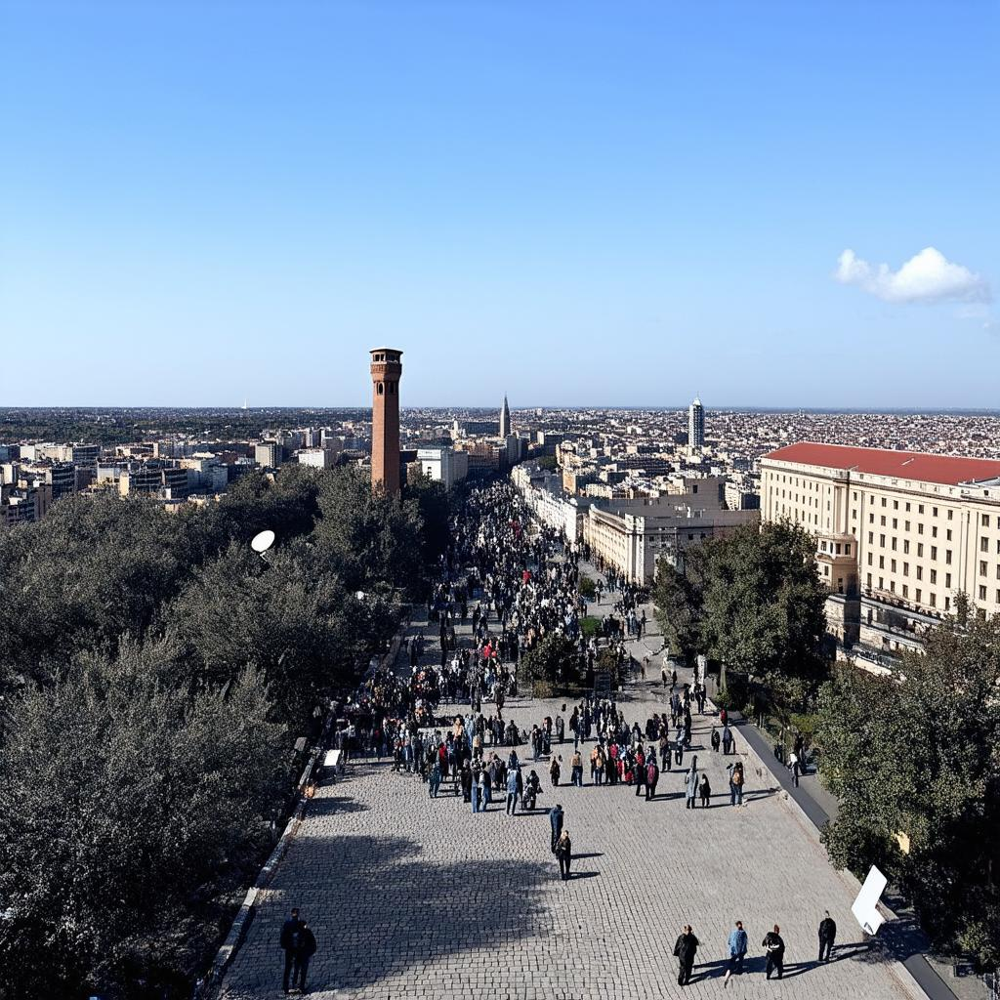 The image depicts a large crowd of people walking down a long, cobblestone road in a city. The street is filled with people, some of whom are carrying backpacks. The crowd is quite diverse, with individuals of various heights and appearances.
In the background, there are several buildings, including a church with a tall tower. The scene is SBERT similarity: 0.57
Text-to-image model: Stable Diffusion 3 | Generated Image Text Reconstruction The image is a colorful, detailed drawing of a bustling city street filled with people. The street is lined with trees and buildings, creating a lively atmosphere. There are numerous individuals walking along the street, with some closer to the foreground and others further in the background.
In addition to the pedestrians, there are several vehicles on the street SBERT similarity: 0.56
Text-to-image model: Stable Diffusion XL | Generated Image Text Reconstruction 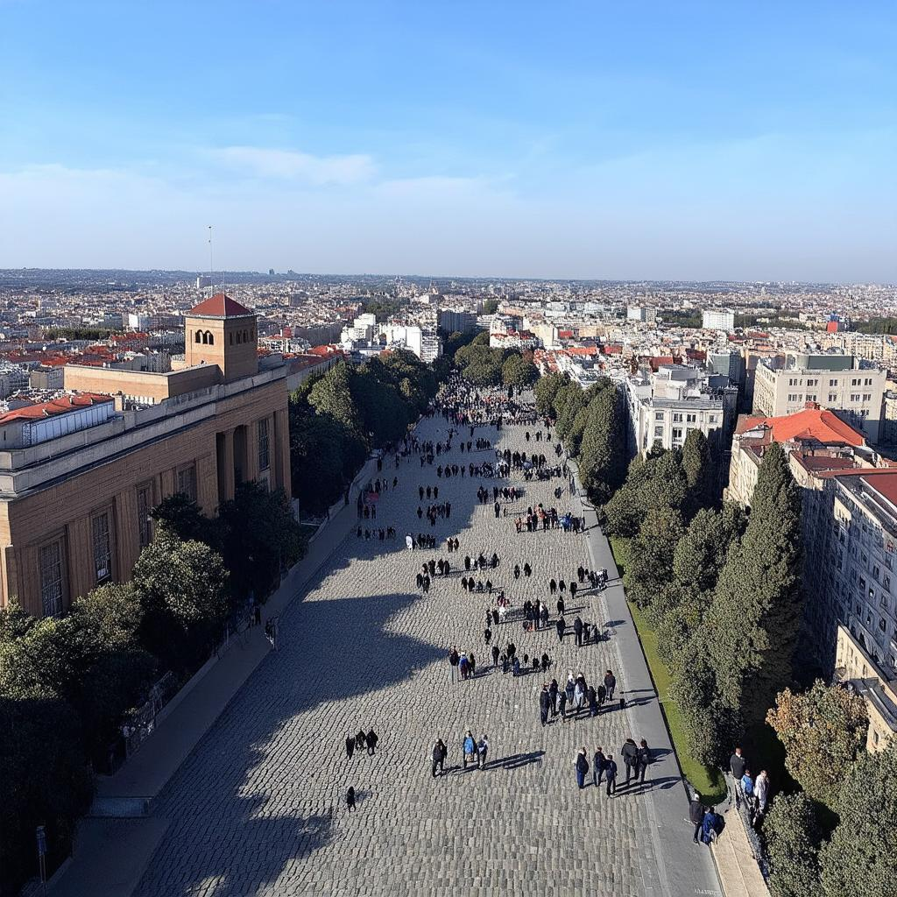 The image depicts a large group of people walking down a long, wide street in a city. The street is lined with trees, providing a pleasant atmosphere for the pedestrians. The crowd is quite diverse, with people of various ages and heights walking together.
The street is bustling with activity, as numerous individuals can be seen throughout the scene SBERT similarity: 0.55
Text-to-image model: Stable Diffusion 3 | Generated Image Text Reconstruction The image is a colorful, cartoon-like drawing of a city with a large clock tower in the center. The clock tower is surrounded by various buildings, including a church with a steeple. The city is bustling with activity, as numerous people can be seen walking around and going about their daily lives.
There are at least 13 people visible SBERT similarity: 0.53
Text-to-image model: Stable Diffusion XL |
Generated Image Text Reconstruction The image depicts a beautiful garden filled with a variety of colorful flowers. The garden is situated on a hillside, with a mix of trees and bushes surrounding the area. The flowers are spread throughout the garden, creating a vibrant and lively atmosphere.
There are several potted plants placed in different parts of the garden, adding to the diversity SBERT similarity: 0.81
Text-to-image model: Stable Diffusion 1.5 | Generated Image Text Reconstruction The image showcases a beautiful garden filled with a variety of colorful flowers. The garden is a mix of different types of flowers, creating a vibrant and lively atmosphere. The flowers are spread throughout the garden, with some located closer to the foreground and others further in the background.
A pathway can be seen in the middle of the garden, leading visitors SBERT similarity: 0.80
Text-to-image model: Stable Diffusion 1.5 | Generated Image Text Reconstruction The image showcases a beautiful, colorful garden filled with a variety of flowers. The garden is situated on a hillside, with the flowers spread out across the landscape. The flowers are arranged in a way that creates a sense of depth and dimension, making the garden appear vibrant and lively.
There are several different types of flowers in the garden, each with SBERT similarity: 0.79
Text-to-image model: Stable Diffusion 1.5 | Generated Image Text Reconstruction The image features a beautiful garden with a variety of colorful flowers and plants. The garden is situated next to a brick wall, which adds a charming touch to the scene. The flowers are spread throughout the garden, with some closer to the foreground and others further in the background.
In addition to the flowers, there are several potted plants placed around the garden, SBERT similarity: 0.77
Text-to-image model: Stable Diffusion 3 | Generated Image Text Reconstruction The image features a beautiful garden with a variety of colorful flowers and plants. The garden is enclosed by a brick wall, which adds a charming touch to the scene. The flowers are spread throughout the garden, with some located closer to the foreground and others further in the background.
In addition to the flowers, there is a greenhouse in the garden, which SBERT similarity: 0.77
Text-to-image model: Stable Diffusion 3 | Generated Image Text Reconstruction The image showcases a beautifully landscaped backyard with a variety of flowers and plants. The garden is filled with a mix of colorful flowers, including yellow and purple ones, creating a vibrant and lively atmosphere. The garden is well-maintained, with the flowers and plants arranged in an organized manner.
In addition to the flowers, SBERT similarity: 0.76
Text-to-image model: Stable Diffusion XL (Turbo) | Generated Image Text Reconstruction The image features a beautifully landscaped garden with a charming blue house in the background. The garden is filled with a variety of colorful flowers, creating a vibrant and lively atmosphere. The flowers are spread throughout the garden, with some closer to the house and others further away.
In addition to the flowers, there are several potted plants placed around SBERT similarity: 0.75
Text-to-image model: Stable Diffusion XL | Generated Image Text Reconstruction The image features a beautiful garden with a brick pathway that leads through the middle of it. The garden is filled with a variety of colorful flowers, including pink, purple, and white ones, creating a vibrant and lively atmosphere. The flowers are arranged in different sections, with some closer to the pathway and others further away.
In addition to SBERT similarity: 0.74
Text-to-image model: Stable Diffusion XL (Turbo) | Generated Image Text Reconstruction The image features a beautiful garden with a brick wall and a large brick planter filled with a variety of colorful flowers. The garden is well-maintained and has a lush green lawn surrounding the area. There are several potted plants placed throughout the garden, adding to the vibrant and lively atmosphere.
In the background, there is a green SBERT similarity: 0.73
Text-to-image model: Stable Diffusion 3 | Generated Image Text Reconstruction The image features a beautiful garden with a variety of flowers and plants. The garden is situated in front of a house, and the flowers are arranged in a circular pattern, creating a visually appealing display. There are several potted plants placed throughout the garden, adding to the vibrant and colorful atmosphere.
In addition to the flowers, there are a few birds SBERT similarity: 0.72
Text-to-image model: Stable Diffusion XL (Turbo) | Generated Image Text Reconstruction The image features a charming brick house with a blue door, surrounded by a beautiful garden. The garden is filled with a variety of colorful flowers, creating a vibrant and lively atmosphere. The flowers are spread throughout the garden, with some closer to the house and others further away.
In addition to the flowers, there are several potted plants placed around the SBERT similarity: 0.68
Text-to-image model: Stable Diffusion XL | Generated Image Text Reconstruction The image features a beautifully painted scene of a house surrounded by a lush garden. The house is situated on a hill, and the garden is filled with a variety of colorful flowers, creating a vibrant and picturesque landscape.
The garden is adorned with a brick path that leads to the house, adding charm and character to the scene. The house SBERT similarity: 0.66
Text-to-image model: Stable Diffusion XL |
Generated Image Text Reconstruction The image depicts a bustling outdoor market with several people walking around and browsing the various stalls. A woman in a blue dress is walking down the street, passing by a market stand. Another woman, wearing a blue headscarf, is also present in the scene, walking near the market.
There are multiple people scattered throughout the market, SBERT similarity: 0.71
Text-to-image model: Stable Diffusion 3 | Generated Image Text Reconstruction The image depicts a bustling outdoor market scene with several people shopping and selling various items. There are at least nine people visible in the scene, with some of them standing near the market stalls and others walking around.
The market is filled with a variety of goods, including a large number of bowls and baskets containing food items. SBERT similarity: 0.66
Text-to-image model: Stable Diffusion XL (Turbo) | Generated Image Text Reconstruction The image depicts a bustling outdoor market in a city, with a large group of people walking around and shopping. The market is filled with various vendors selling their goods, and the atmosphere is lively and vibrant.
There are numerous people in the scene, some walking and others browsing the market stalls. A few individuals can SBERT similarity: 0.64
Text-to-image model: Stable Diffusion XL | Generated Image Text Reconstruction The image depicts a bustling outdoor market with a woman in a blue shirt walking down the street, surrounded by various vendors. She is wearing a blue headscarf and appears to be shopping at the market. There are several other people in the scene, some of them walking around and others standing near the vendors.
The market is SBERT similarity: 0.64
Text-to-image model: Stable Diffusion 3 | Generated Image Text Reconstruction The image depicts a bustling market scene with a woman sitting on a stool in the middle of the marketplace. She is surrounded by a variety of colorful fabrics, including blankets and scarves, which are spread out on the ground. The woman appears to be selling these items to passersby.
There are several other people in the SBERT similarity: 0.64
Text-to-image model: Stable Diffusion 1.5 | Generated Image Text Reconstruction The image depicts a lively outdoor market scene with several people walking around and browsing the various stalls. There are at least nine people visible in the scene, some of them wearing traditional clothing, such as burkas. The market is filled with colorful tents and canopies, creating a vibrant atmosphere.
The market is SBERT similarity: 0.63
Text-to-image model: Stable Diffusion 1.5 | Generated Image Text Reconstruction The image depicts a bustling outdoor market filled with people shopping for fresh produce. There are several women standing around the market, with some of them wearing headscarves. The market is lively, with people browsing and interacting with each other.
Various fruits and vegetables are on display, including apples, oranges, SBERT similarity: 0.61
Text-to-image model: Stable Diffusion XL (Turbo) | Generated Image Text Reconstruction The image depicts a bustling outdoor marketplace with a woman in a blue dress walking down the middle of the street. She is surrounded by various vendors selling their wares, including a person selling bananas. The marketplace is filled with people, some of whom are browsing the items for sale, while others are walking around.
There SBERT similarity: 0.61
Text-to-image model: Stable Diffusion 1.5 | Generated Image Text Reconstruction The image depicts a bustling market scene with several people walking around and interacting. Two women are the main focus of the scene, with one of them wearing a blue outfit and a headscarf. They are walking down the street, possibly shopping or engaging in conversation.
There are numerous other people in the scene, some of them carrying SBERT similarity: 0.59
Text-to-image model: Stable Diffusion 3 | Generated Image Text Reconstruction The image depicts a lively outdoor market scene with a group of women gathered around a table filled with various fruits and vegetables. The women are engaged in conversation and appear to be selling the produce.
There are several people in the scene, with some standing closer to the table and others further away. A few individuals are also visible in the background. SBERT similarity: 0.58
Text-to-image model: Stable Diffusion XL (Turbo) | Generated Image Text Reconstruction The image depicts a bustling market scene with a group of women walking down a narrow street. They are dressed in traditional clothing, and some of them are wearing headscarves. The women are carrying various items, such as handbags and bowls, as they navigate the market.
The market is filled with a variety of items, including several SBERT similarity: 0.55
Text-to-image model: Stable Diffusion XL | Generated Image Text Reconstruction The image depicts a bustling outdoor marketplace in a foreign country, with a group of people walking around and shopping. The market is filled with various items, including baskets of food and colorful blankets.
There are several people in the scene, some of them carrying handbags and backpacks. A woman is walking down the SBERT similarity: 0.54
Text-to-image model: Stable Diffusion XL |
Generated Image Text Reconstruction The image features a large, white building with a statue of a man in front of it. The statue is positioned on a pedestal, and the building appears to be a government building. The building has a prominent Italian flag hanging from its facade, adding a touch of national pride to the scene.
In addition to the statue and the building, there are SBERT similarity: 0.70
Text-to-image model: Stable Diffusion 3 | Generated Image Text Reconstruction  The image features a large, yellow building with a prominent sign on its front. The building appears to be a museum or a similar institution, as it is adorned with statues and a clock. There are several statues placed around the building, with one near the center and others on the sides.
The building has a large entrance, which is adorned with SBERT similarity: 0.66
Text-to-image model: Stable Diffusion XL | Generated Image Text Reconstruction The image features a large, ornate building with a yellow facade. The building has a prominent balcony with a railing, and it is adorned with yellow flags. The facade is further enhanced by the presence of a clock on the side of the building.
There are several windows on the building, with some located on the upper levels and others SBERT similarity: 0.65
Text-to-image model: Stable Diffusion XL (Turbo) | Generated Image Text Reconstruction The image features a large, yellow building with a prominent white column in front of it. The building appears to be a temple or a similar architectural structure. The white column is situated in the middle of the scene, with the yellow building surrounding it.
In addition to the main building, there are two smaller buildings visible in the background. One of these buildings is located to SBERT similarity: 0.61
Text-to-image model: Stable Diffusion 1.5 | Generated Image Text Reconstruction  The image features a large, white building with a prominent statue of a man in front of it. The building has a flag hanging from its side, adding to its grandeur. The statue is positioned on the left side of the building, and the flag is located above the entrance.
There are several windows on the building, with some on the left side and others SBERT similarity: 0.60
Text-to-image model: Stable Diffusion 3 | Generated Image Text Reconstruction The image features a large, ornate building with a yellow facade. The building has a prominent entrance with a set of stairs leading up to it. The stairs are adorned with a black railing, and there are two arched doorways on either side of the stairs.
The building is surrounded by trees, with one tree located to the left SBERT similarity: 0.59
Text-to-image model: Stable Diffusion XL (Turbo) | Generated Image Text Reconstruction The image features a large, ornate building with a prominent clock tower. The building has a yellow facade and is adorned with statues, giving it a grand and historical appearance. The clock tower stands out as a focal point, with the clock visible on its side.
The building is surrounded by a beautiful garden, with a row of trees lining the SBERT similarity: 0.58
Text-to-image model: Stable Diffusion XL | Generated Image Text Reconstruction The image features a large, yellow building with a prominent clock tower. The building has a flag flying on top of it, adding to its grandeur. The clock tower is situated in the middle of the building, making it a focal point.
There are several windows on the building, with some located on the left side, some on the right side, and others on SBERT similarity: 0.58
Text-to-image model: Stable Diffusion XL | Generated Image Text Reconstruction The image features a large, white building with a prominent clock tower. The building has a tall, pointed roof and is adorned with a flag on top. The clock is positioned towards the center of the building, making it a focal point.
In front of the building, there is a set of stairs leading up to the entrance. The stairs are SBERT similarity: 0.57
Text-to-image model: Stable Diffusion 3 | Generated Image Text Reconstruction The image features a large, ornate building with a statue prominently placed in front of it. The statue is positioned on a pedestal, and it appears to be a person holding a cross. The building has a yellow color, and it is adorned with many windows, giving it a grand and majestic appearance.
In addition to the statue, SBERT similarity: 0.57
Text-to-image model: Stable Diffusion 1.5 | Generated Image Text Reconstruction The image is a black and white photograph of a large, old building with a prominent clock tower. The building appears to be a courthouse or a similar public structure. The clock tower is situated in the middle of the building, with the clock face visible on the side.
There are several people in the scene, with one person standing near the left side of the building SBERT similarity: 0.54
Text-to-image model: Stable Diffusion 1.5 | Generated Image Text Reconstruction  The image features a large, yellow building with a prominent entrance. The entrance is adorned with a sign that reads "Edman Aids." The building has a balcony on the second floor, and there are several windows on the facade.
In addition to the main entrance, there are two smaller entrances on the side of the building. The building SBERT similarity: 0.48
Text-to-image model: Stable Diffusion XL (Turbo) |
Generated Image Text Reconstruction The image depicts a bustling city scene with a large group of people walking around a plaza in the middle of a city. The plaza is surrounded by tall buildings, creating a lively urban atmosphere.
There are numerous people in the scene, some walking individually and others in small groups. A few umbrellas can be seen, providing sh SBERT similarity: 0.73
Text-to-image model: Stable Diffusion 1.5 | Generated Image Text Reconstruction The image depicts a bustling city scene with a large group of people walking around a plaza in front of tall buildings. The crowd is diverse, with individuals of various ages and genders. Some people are carrying handbags, while others are walking with their dogs.
The plaza is surrounded by trees, providing a touch of greenery to the urban SBERT similarity: 0.72
Text-to-image model: Stable Diffusion 1.5 | Generated Image Text Reconstruction The image depicts a bustling city scene with a large tree in the middle of a plaza. The tree is surrounded by a crowd of people walking around, creating a lively atmosphere. There are at least 14 people visible in the scene, some closer to the tree and others further away.
In addition to the people, there are several handb SBERT similarity: 0.72
Text-to-image model: Stable Diffusion 3 | Generated Image Text Reconstruction The image depicts a bustling city street filled with people walking and enjoying their time. There are numerous individuals scattered throughout the scene, some closer to the foreground and others further in the background. A large tree can be seen in the middle of the street, providing a touch of nature to the urban environment.
In addition to the people, there are several SBERT similarity: 0.68
Text-to-image model: Stable Diffusion XL | Generated Image Text Reconstruction The image depicts a bustling city street filled with people walking around and going about their daily activities. There are numerous individuals scattered throughout the scene, some closer to the foreground and others further in the background.
A large tree can be seen in the middle of the street, providing a touch of nature amidst the urban environment. The street is lined with SBERT similarity: 0.68
Text-to-image model: Stable Diffusion 3 | Generated Image Text Reconstruction The image depicts a bustling city street filled with people walking and going about their daily activities. The street is lined with trees and buildings, creating a lively atmosphere. There are numerous pedestrians visible in the scene, some walking alone and others in groups.
In addition to the people, there are several cars parked or driving along the street SBERT similarity: 0.67
Text-to-image model: Stable Diffusion XL (Turbo) | Generated Image Text Reconstruction The image depicts a bustling city street filled with a large crowd of people walking down the sidewalk. The street is lined with tall buildings, and a tree can be seen in the middle of the scene, providing a touch of nature to the urban environment.
There are numerous people of various heights and positions, some closer to the camera and others further SBERT similarity: 0.67
Text-to-image model: Stable Diffusion 3 | Generated Image Text Reconstruction The image depicts a bustling city street filled with people walking around and going about their daily activities. There are numerous individuals scattered throughout the scene, some walking alone and others in groups. The street is lined with trees, providing a pleasant atmosphere for the pedestrians.
In addition to the people, there are a few vehicles on the street, including SBERT similarity: 0.66
Text-to-image model: Stable Diffusion XL (Turbo) | Generated Image Text Reconstruction The image depicts a bustling city street filled with people walking around and going about their daily activities. The street is lined with trees, providing a pleasant atmosphere for the pedestrians. There are numerous individuals of various heights and positions, some walking closer to the camera and others further away.
In addition to the people, there are several potted SBERT similarity: 0.65
Text-to-image model: Stable Diffusion XL | Generated Image Text Reconstruction The image depicts a bustling city street with a large group of people walking around. The street is lined with trees, providing a pleasant atmosphere for the pedestrians. There are at least 13 people visible in the scene, some walking closer to the trees, while others are walking further away.
In addition to the people, there are two SBERT similarity: 0.63
Text-to-image model: Stable Diffusion 1.5 | Generated Image Text Reconstruction The image is a bustling city scene with a large crowd of people walking around and going about their daily activities. The people are scattered throughout the scene, with some walking closer to the foreground and others further in the background.
In the midst of the crowd, there is a bus driving down the street, providing public transportation for the city's residents. A SBERT similarity: 0.59
Text-to-image model: Stable Diffusion XL | Generated Image Text Reconstruction The image depicts a bustling city street filled with people walking around. There are numerous individuals of various ages and genders, some of them carrying handbags and backpacks. A woman is walking down the street, pulling a suitcase behind her, possibly indicating that she is traveling.
The street is lined with buildings, and there are trees SBERT similarity: 0.49
Text-to-image model: Stable Diffusion XL (Turbo) |
Generated Image Text Reconstruction The image features a picturesque scene with a bridge crossing over a river. The bridge has a stone arch, and it is situated near a castle. There are several boats on the river, with one boat closer to the left side of the image, another boat in the middle, and a third boat on the right side.
In addition to the boats, there are two people SBERT similarity: 0.76
Text-to-image model: Stable Diffusion XL (Turbo) | Generated Image Text Reconstruction The image features a picturesque scene of a bridge with a large stone arch over a river. The bridge is surrounded by a beautiful landscape, with a forest nearby and a hill in the background. The water under the bridge reflects the bridge's structure, creating a serene and captivating atmosphere.
There are several people in the scene, enjoying the view and SBERT similarity: 0.72
Text-to-image model: Stable Diffusion 1.5 | Generated Image Text Reconstruction  The image features a picturesque scene with a bridge crossing over a river. The bridge has a stone archway and is surrounded by a beautiful park. On the other side of the river, there is a pier with a bench where people are sitting and enjoying the view.
There are several people in the scene, some of them sitting on the bench and others standing SBERT similarity: 0.71
Text-to-image model: Stable Diffusion XL (Turbo) | Generated Image Text Reconstruction 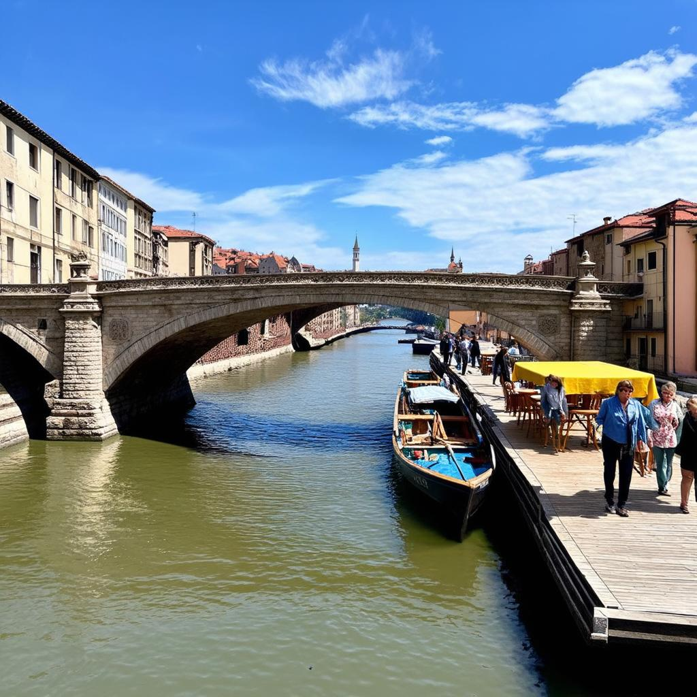 The image features a picturesque scene of a river running through a city, with a bridge crossing over it. On the river, there are several boats docked, including a small boat and a larger boat. The boats are positioned close to the bridge, creating a charming atmosphere.
Numerous people can be seen walking along the river, enjoying the view and SBERT similarity: 0.70
Text-to-image model: Stable Diffusion 3 | Generated Image Text Reconstruction The image features a group of people walking on a stone bridge that spans over a river. There are at least 13 people visible in the scene, with some of them carrying backpacks. The bridge is a stone archway, and the people are walking in various directions, creating a lively atmosphere.
In the background, there is a boat visible on the SBERT similarity: 0.69
Text-to-image model: Stable Diffusion XL (Turbo) | Generated Image Text Reconstruction The image depicts a lively scene of people walking across a bridge over a river. There are numerous individuals of various sizes, some closer to the foreground and others further away, creating a sense of depth in the scene.
In addition to the people, there are several boats visible in the water below the bridge. Some boats are closer to the bridge, while SBERT similarity: 0.68
Text-to-image model: Stable Diffusion XL | Generated Image Text Reconstruction  The image features a picturesque scene of a bridge over a river, with a mountain in the background. The bridge is adorned with arches, and the water beneath it is calm and serene. The mountain in the distance adds a sense of depth and grandeur to the landscape.
There are several people scattered throughout the scene, likely enjoying the view or eng SBERT similarity: 0.68
Text-to-image model: Stable Diffusion 1.5 | Generated Image Text Reconstruction The image depicts a picturesque scene of a river with a bridge in the background. There are several boats on the water, including a large boat and a smaller boat. The large boat is filled with people, while the smaller boat is located closer to the bridge.
In addition to the boats, there are numerous people scattered throughout the scene, some of them standing near SBERT similarity: 0.64
Text-to-image model: Stable Diffusion XL | Generated Image Text Reconstruction The image is a painting of a bridge over a river, with a waterfall in the background. The bridge is made of stone and has a distinctive arched structure. The waterfall is located on the right side of the bridge, adding a sense of depth and natural beauty to the scene.
There are several people in the painting, some of them standing near the bridge SBERT similarity: 0.64
Text-to-image model: Stable Diffusion 1.5 | Generated Image Text Reconstruction The image depicts a lively scene on a bridge over a river, with a group of people walking and enjoying the view. There are at least 13 people visible in the scene, some of them carrying backpacks. The bridge is adorned with dining tables and chairs, creating a unique outdoor dining experience for the visitors. SBERT similarity: 0.62
Text-to-image model: Stable Diffusion 3 | Generated Image Text Reconstruction  The image depicts a lively scene of people enjoying a day on the water. There are several boats of various sizes floating on the water, with some people riding in them. A group of people can be seen standing on a pier, watching the boats go by.
In total, there are 13 people visible in the scene, with some of them SBERT similarity: 0.48
Text-to-image model: Stable Diffusion XL | Generated Image Text Reconstruction The image depicts a lively scene at a pier with a group of people walking along a boardwalk. There are several boats docked in the water, with some of them being rowboats. The boats are scattered throughout the scene, with some closer to the foreground and others further away.
A total of 13 people can be seen in the image SBERT similarity: 0.45
Text-to-image model: Stable Diffusion 3 |
Generated Image Text Reconstruction The image depicts a lively scene of a large group of people gathered together, celebrating and enjoying themselves. Many of the individuals are holding flags, and some are also holding drums, creating a festive atmosphere. The crowd is diverse, with people of different ages and backgrounds participating in the event.
The flags are of various sizes and colors, adding SBERT similarity: 0.79
Text-to-image model: Stable Diffusion XL (Turbo) | Generated Image Text Reconstruction The image depicts a lively scene of a large crowd of people gathered together, possibly at a parade or a festival. The crowd is diverse, with individuals of various ages and heights. Some people are holding flags, adding to the festive atmosphere.
In the midst of the crowd, there are two drums, one located towards the left side and the other SBERT similarity: 0.74
Text-to-image model: Stable Diffusion XL | Generated Image Text Reconstruction The image depicts a large crowd of people gathered together, possibly for a parade or a special event. Many of the people are wearing red shirts, creating a sense of unity and excitement. Some individuals are holding flags, adding to the festive atmosphere.
There are several drums in the scene, with one drum being held by a person in the middle SBERT similarity: 0.72
Text-to-image model: Stable Diffusion 3 | Generated Image Text Reconstruction The image depicts a lively street scene with a large crowd of people gathered together. Many of the people are holding flags, creating a vibrant and colorful atmosphere. The flags come in various sizes and designs, adding to the festive ambiance.
The crowd is spread across the entire image, with some people standing closer to the foreground and others further SBERT similarity: 0.71
Text-to-image model: Stable Diffusion 1.5 | Generated Image Text Reconstruction The image depicts a large group of people gathered together, celebrating and enjoying themselves. They are holding various flags, including red, white, and blue ones, as they dance and cheer. The crowd is diverse, with people of different ages and backgrounds participating in the festivities.
In the center of the scene, there is a man playing drums, SBERT similarity: 0.70
Text-to-image model: Stable Diffusion XL | Generated Image Text Reconstruction  The image depicts a large crowd of people gathered outside a building, possibly a stadium or a concert venue. Many of the people are holding flags, indicating a celebration or a special event. Among the crowd, there are several individuals playing drums, adding to the festive atmosphere.
The people are standing close to each other, with some individuals positioned near SBERT similarity: 0.69
Text-to-image model: Stable Diffusion 3 | Generated Image Text Reconstruction The image is a colorful and lively scene of a large group of people gathered together. Many of the individuals are wearing red shirts, creating a sense of unity and excitement. Some of the people are holding drums, possibly indicating a musical event or performance.
The crowd is spread across the entire image, with some people standing closer to the foreground and others SBERT similarity: 0.68
Text-to-image model: Stable Diffusion XL | Generated Image Text Reconstruction The image depicts a large group of people gathered together, celebrating and enjoying a parade. They are holding various flags, including American flags, and are enthusiastically participating in the event. The crowd is diverse, with people of different ages and backgrounds coming together to share in the festivities.
In the midst of the crowd, there is a SBERT similarity: 0.67
Text-to-image model: Stable Diffusion XL (Turbo) | Generated Image Text Reconstruction The image depicts a large crowd of people gathered in a public space, possibly for a parade or a special event. The crowd is diverse, with individuals of various ages and backgrounds participating in the festivities.
Many people in the crowd are holding flags, with at least 13 flags visible in the scene. These flags come in different colors and sizes SBERT similarity: 0.65
Text-to-image model: Stable Diffusion 1.5 | Generated Image Text Reconstruction The image depicts a lively parade with a large group of people marching down the street. Many of the participants are holding American flags, creating a patriotic atmosphere. Among the crowd, there are several individuals playing drums, adding to the festive ambiance.
In addition to the people and drums, there are numerous balloons floating in the air, SBERT similarity: 0.64
Text-to-image model: Stable Diffusion XL (Turbo) | Generated Image Text Reconstruction  The image depicts a large crowd of people gathered together, possibly for a parade or a public event. Many of the individuals in the crowd are holding flags, with at least 13 flags visible in the scene. The people are spread out across the image, with some standing closer to the foreground and others further in the background.
There are also several drums SBERT similarity: 0.62
Text-to-image model: Stable Diffusion 3 | Generated Image Text Reconstruction The image depicts a lively parade with a large group of people marching down the street. Among the crowd, a man is holding up a red, white, and blue American flag, drawing attention to the patriotic theme. The people in the parade are wearing various outfits, and some are carrying handbags.
The parade participants SBERT similarity: 0.60
Text-to-image model: Stable Diffusion 1.5 |
Generated Image Text Reconstruction The image features a magnifying glass placed on top of a piece of paper with the word "State Street" written on it. The magnifying glass is positioned in such a way that it appears to be looking at the word "State Street." The paper is surrounded by other papers, creating a sense of depth and focus on the main subject. SBERT similarity: 0.83
Text-to-image model: Stable Diffusion XL (Turbo) | Generated Image Text Reconstruction The image features a magnifying glass placed on top of a stack of papers. The magnifying glass is focused on a word, "State Street," which is written on one of the papers. The papers are arranged in a pile, with some of them overlapping each other. The magnifying glass is positioned in the center of the scene, drawing attention to the word SBERT similarity: 0.78
Text-to-image model: Stable Diffusion XL | Generated Image Text Reconstruction The image features a magnifying glass placed over a street sign, which reads "State Street." The magnifying glass is positioned in the center of the image, making the street sign appear larger and more prominent. The scene is set against a gray background, which further emphasizes the focus on the street sign and the magnifying glass. SBERT similarity: 0.77
Text-to-image model: Stable Diffusion 3 | Generated Image Text Reconstruction  The image features a magnifying glass placed over a piece of paper, which is likely a document or a map. The magnifying glass is positioned in the center of the image, with the paper occupying the majority of the frame. The focus of the magnifying glass is on the word "State Street," which is visible in the document. The magnifying glass emphasizes the SBERT similarity: 0.76
Text-to-image model: Stable Diffusion 3 | Generated Image Text Reconstruction The image features a magnifying glass placed over a piece of paper with the words "State Street Shearer" written on it. The magnifying glass is positioned in such a way that it appears to be focusing on the word "State" on the paper. The magnifying glass is the main focus of the image, with the words "State Street Shearer" SBERT similarity: 0.74
Text-to-image model: Stable Diffusion XL (Turbo) | Generated Image Text Reconstruction The image features a magnifying glass placed over a sign that reads "State Street." The magnifying glass is positioned in the center of the sign, drawing attention to the street name. The sign is likely located on a street corner or a public place, making it easy for people to identify the street they are on or looking for. SBERT similarity: 0.72
Text-to-image model: Stable Diffusion 3 | Generated Image Text Reconstruction The image features a magnifying glass with a wooden handle, placed on a blue surface. The magnifying glass is positioned in such a way that it appears to be looking at a green object, possibly a coin or a piece of paper. The magnifying glass is the main focus of the image, with the blue background providing a contrasting backdrop. SBERT similarity: 0.67
Text-to-image model: Stable Diffusion 1.5 | Generated Image Text Reconstruction The image features a magnifying glass placed over a piece of paper, which is a state treaty. The magnifying glass is positioned in the center of the image, with the paper occupying the majority of the frame. The treaty appears to be a legal document, possibly related to the state of Texas. The magnifying glass emphasizes the importance of the document and draw SBERT similarity: 0.59
Text-to-image model: Stable Diffusion XL | Generated Image Text Reconstruction The image features a person's hand holding a magnifying glass over a piece of paper. The magnifying glass is positioned directly above the paper, which has the word "aastatee" written on it. The hand is positioned in the lower left corner of the image, while the magnifying glass covers the majority of the scene. The paper with the word on SBERT similarity: 0.56
Text-to-image model: Stable Diffusion 1.5 | Generated Image Text Reconstruction The image features a magnifying glass placed on a table, with a piece of paper or a small mirror underneath it. The magnifying glass is positioned in such a way that it appears to be reading the paper or mirror. The paper or mirror has the word "S&T" written on it, which is visible through the magnifying glass. The scene creates an SBERT similarity: 0.55
Text-to-image model: Stable Diffusion 1.5 | Generated Image Text Reconstruction The image features a magnifying glass placed on top of a piece of paper, with the magnifying glass's lens covering the word "treet." The magnifying glass is positioned in such a way that it appears to be reading the word "treet" on the paper. The magnifying glass is the main focus of the image, and the paper with the word SBERT similarity: 0.55
Text-to-image model: Stable Diffusion XL (Turbo) | Generated Image Text Reconstruction The image features a magnifying glass hovering over a pile of papers, documents, and various items. The magnifying glass is positioned in the center of the scene, drawing attention to the items beneath it.
The pile of papers and documents is scattered throughout the image, with some papers located near the top, middle, and bottom of the scene. There are SBERT similarity: 0.55
Text-to-image model: Stable Diffusion XL |
Generated Image Text Reconstruction The image features a person holding a smartphone in their hand, with the Walmart logo displayed on the screen. The phone is positioned in the center of the scene, and the person's hand is visible on the left side of the image. The focus of the image is on the Walmart logo, which is prominently displayed on the phone screen. SBERT similarity: 0.74
Text-to-image model: Stable Diffusion 3 | Generated Image Text Reconstruction The image features a person holding a smartphone in their hand. The phone's screen displays the Walmart logo, indicating that the person is likely browsing or shopping on the Walmart website. The person's hand is positioned in the foreground, while the phone occupies the majority of the scene. SBERT similarity: 0.74
Text-to-image model: Stable Diffusion 3 | Generated Image Text Reconstruction The image features a cell phone screen displaying a Walmart website. A yellow arrow is pointing towards the Walmart logo, drawing attention to the store's name. The cell phone screen occupies most of the image, with the Walmart logo and the arrow being the main focus. SBERT similarity: 0.74
Text-to-image model: Stable Diffusion 1.5 | Generated Image Text Reconstruction The image features a person holding a smartphone in their hand, with the Walmart logo displayed on the screen. The person is likely browsing or shopping on the Walmart app. The phone is positioned in the center of the scene, and the person's hand is visible on the right side of the image. SBERT similarity: 0.71
Text-to-image model: Stable Diffusion 3 | Generated Image Text Reconstruction The image features a person holding a smartphone in their hand. The phone is displaying the Walmart app, which is open and ready for use. The person's hand is positioned in the foreground, while the phone occupies the majority of the scene. The focus is on the Walmart app, showcasing its presence on the smartphone. SBERT similarity: 0.66
Text-to-image model: Stable Diffusion XL | Generated Image Text Reconstruction The image features a person holding a smartphone in their hand. The phone's screen displays a Walmart advertisement, which is prominently visible. The person's hand is positioned in the foreground, while the phone occupies a significant portion of the image. The focus of the scene is on the advertisement and the interaction between the person and the SBERT similarity: 0.66
Text-to-image model: Stable Diffusion XL | Generated Image Text Reconstruction The image features a person holding a smartphone in their hand. The phone is displaying a Walmart app, which is likely being used to access information or make a purchase. The person's hand is positioned in the center of the image, with the phone occupying a significant portion of the frame. SBERT similarity: 0.64
Text-to-image model: Stable Diffusion XL (Turbo) | Generated Image Text Reconstruction The image features a person holding a cell phone in their hand, with the screen displaying a Walmart advertisement. The phone is positioned in the center of the scene, and the person's hand is visible on the left side of the image.
In the background, there is a keyboard, which is placed on the right side of the image. The keyboard is SBERT similarity: 0.64
Text-to-image model: Stable Diffusion XL | Generated Image Text Reconstruction The image features a person holding a cell phone in their hand. The cell phone is displaying a Walmart app, which is likely being used to browse or make a purchase. The person's hand is positioned in the center of the image, with the cell phone occupying a significant portion of the frame. SBERT similarity: 0.62
Text-to-image model: Stable Diffusion XL (Turbo) | Generated Image Text Reconstruction The image features a person holding a smartphone in their hand. The phone's screen displays a blue and yellow logo, which is the Marmaret logo. The person is likely using the phone to browse or interact with the Marmaret app. The focus of the image is on the phone and the logo, with the person's hand and the surrounding environment not being SBERT similarity: 0.47
Text-to-image model: Stable Diffusion 1.5 | Generated Image Text Reconstruction The image features a cell phone screen displaying a variety of logos and brand names. The logos are arranged in a grid-like pattern, with each logo occupying a different section of the screen. The logos are of various sizes and colors, creating a visually engaging and diverse display. The cell phone screen is the main focus of the image, showcasing the SBERT similarity: 0.47
Text-to-image model: Stable Diffusion 1.5 | Generated Image Text Reconstruction The image features a person holding a smartphone in their hand. The phone is displaying a yellow and blue app, possibly a map or a social media app. The person is likely using the app to navigate or browse through the content. The scene takes place in front of a wall, which could be a part of a building or a room. SBERT similarity: 0.44
Text-to-image model: Stable Diffusion XL (Turbo) |
Generated Image Text Reconstruction 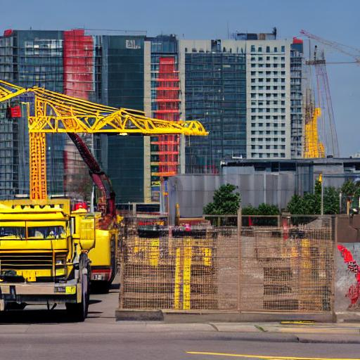 The image features a large construction site in a city, with a yellow crane prominently visible in the scene. The crane is situated near a tall building, and there are several other buildings in the background. A yellow truck is parked in front of the construction site, likely involved in the ongoing work.
In addition to the crane and truck SBERT similarity: 0.82
Text-to-image model: Stable Diffusion 1.5 | Generated Image Text Reconstruction The image depicts a construction site with a large yellow crane in the center, surrounded by various vehicles and equipment. There are two trucks parked nearby, one on the left side and the other on the right side of the crane. A car is also visible in the scene, parked further to the right.
Several people can be seen SBERT similarity: 0.78
Text-to-image model: Stable Diffusion XL (Turbo) | Generated Image Text Reconstruction The image features a large construction site with a yellow crane prominently positioned in the center. The crane is surrounded by several construction vehicles, including two large trucks and a smaller truck. One of the trucks is located on the left side of the crane, while the other is on the right side.
In addition to the truck SBERT similarity: 0.78
Text-to-image model: Stable Diffusion 3 | Generated Image Text Reconstruction The image features a large construction site with a yellow crane prominently positioned in the center. The crane is surrounded by a variety of construction equipment, including a bulldozer and a truck. There are also several cars and a bus in the vicinity, likely transporting workers or materials to the site.
A few people can be seen scattered around SBERT similarity: 0.78
Text-to-image model: Stable Diffusion XL (Turbo) | Generated Image Text Reconstruction The image features a large construction site with a yellow crane prominently positioned in the center. The crane is surrounded by several other cranes, creating a busy and bustling atmosphere. The scene also includes a few trucks, with one located near the left side of the image and another closer to the right side.
In addition to the c SBERT similarity: 0.76
Text-to-image model: Stable Diffusion 1.5 | Generated Image Text Reconstruction The image features a construction site with a large crane in the center, surrounded by a yellow truck and a few other vehicles. There are several people working on the site, with some of them standing close to the crane and others scattered around the area.
In addition to the crane and truck, there are two cars and a bus visible in the scene. SBERT similarity: 0.76
Text-to-image model: Stable Diffusion XL (Turbo) | Generated Image Text Reconstruction The image features a large yellow crane situated in a construction area. The crane is positioned in the middle of the scene, with a truck parked nearby. There are several orange cones scattered around the area, likely indicating a construction zone or a restricted area.
In addition to the crane and truck, there are two cars in the scene. One SBERT similarity: 0.76
Text-to-image model: Stable Diffusion XL | Generated Image Text Reconstruction The image features a construction site with a large crane in the background. A yellow truck is parked in the foreground, likely used for transporting construction materials. The truck is positioned under the crane, which is situated on the left side of the scene.
There are several people present in the area, possibly construction workers or bystanders observing SBERT similarity: 0.75
Text-to-image model: Stable Diffusion XL | Generated Image Text Reconstruction The image features a large construction site with a crane in the center, lifting a steel beam. The crane is positioned near a red building, which is likely under construction. A yellow bulldozer is also present in the scene, parked close to the crane.
There are several people scattered around the construction site, possibly working on the project or SBERT similarity: 0.73
Text-to-image model: Stable Diffusion 3 | Generated Image Text Reconstruction The image features a construction site with a large crane in the background, lifting a yellow object. The crane is positioned towards the left side of the scene. There are several trucks in the area, with one truck located near the center of the image, another on the right side, and a third truck further back on the left side. SBERT similarity: 0.73
Text-to-image model: Stable Diffusion 1.5 | Generated Image Text Reconstruction The image features a construction site with a large crane in the background, working on a building. The crane is positioned towards the left side of the scene. There are several construction vehicles and trucks scattered around the site, with some located closer to the crane and others further away.
In addition to the construction vehicles, there are two cars visible in the SBERT similarity: 0.73
Text-to-image model: Stable Diffusion 3 | Generated Image Text Reconstruction The image depicts a construction site with a large crane in the middle of a city. The crane is positioned above a road, and it appears to be lifting a large object, possibly a building section or a piece of machinery.
There are several trucks in the scene, with one truck located near the crane, another tr SBERT similarity: 0.68
Text-to-image model: Stable Diffusion XL |
Generated Image Text Reconstruction The image features a woman walking down a flight of stairs in a city setting. She is wearing a white dress and appears to be the main focus of the scene. There are several other people in the background, some of them walking up the stairs, while others are standing or walking around the area.
The staircase is surrounded by buildings, and there are SBERT similarity: 0.82
Text-to-image model: Stable Diffusion XL (Turbo) | Generated Image Text Reconstruction The image depicts a woman walking down a long flight of stairs in a city. She is wearing a white dress and appears to be the main focus of the scene. The stairs are lined with trees, adding a touch of greenery to the urban setting.
There are several other people in the scene, some walking up the stairs and others walking SBERT similarity: 0.82
Text-to-image model: Stable Diffusion XL | Generated Image Text Reconstruction The image features a woman walking down a flight of stairs in a city setting. She is wearing a white dress and appears to be the main focus of the scene. There are several other people in the background, some of them walking up the stairs, while others are standing or walking around the area.
The cityscape is bustling with activity, as SBERT similarity: 0.81
Text-to-image model: Stable Diffusion 3 | Generated Image Text Reconstruction The image depicts a busy city street with a woman walking down a flight of stairs in the middle of the scene. She is wearing a white dress and appears to be the main focus of the image. The stairs are located near the center of the scene, and the woman is walking down them with confidence.
There are several other people in the scene, SBERT similarity: 0.80
Text-to-image model: Stable Diffusion 3 | Generated Image Text Reconstruction The image depicts a woman walking down a long flight of stairs, surrounded by a lively atmosphere. She is wearing a white dress and appears to be the main focus of the scene. The stairs are lined with numerous potted plants, creating a vibrant and colorful environment.
There are several other people in the scene, some of them SBERT similarity: 0.77
Text-to-image model: Stable Diffusion XL | Generated Image Text Reconstruction The image features a woman walking down a flight of stairs in a city setting. She is wearing a white dress and carrying a handbag. The stairs are located in an alleyway, and the woman appears to be walking up the stairs.
The scene is adorned with several potted plants, some of which are placed near the stairs, SBERT similarity: 0.76
Text-to-image model: Stable Diffusion XL (Turbo) | Generated Image Text Reconstruction The image captures a lively scene of a woman in a white dress jumping down a flight of stairs. She is the center of attention as she leaps down the stairs, possibly performing a dance or simply enjoying the moment.
There are several other people in the scene, some of them walking or standing around the stairs. A few cars are SBERT similarity: 0.74
Text-to-image model: Stable Diffusion 3 | Generated Image Text Reconstruction The image features a woman walking down a flight of stairs in a city setting. She is wearing a white dress and carrying a handbag. The stairs are located near a building, and there are several potted plants placed around the area, adding a touch of greenery to the urban environment. The woman appears to be walking confidently, possibly on her way to a SBERT similarity: 0.73
Text-to-image model: Stable Diffusion XL (Turbo) | Generated Image Text Reconstruction The image features a woman walking down a flight of stairs in a city setting. She is carrying a handbag and appears to be walking away from the camera. The staircase is surrounded by buildings, giving the scene a sense of urban atmosphere.
There are several other people in the scene, some of them walking up the stairs, while others are standing or walking SBERT similarity: 0.73
Text-to-image model: Stable Diffusion XL | Generated Image Text Reconstruction The image features a woman walking up a staircase, possibly an escalator, while holding onto a handrail. She is wearing a blue dress and appears to be walking up the stairs with ease. The staircase is surrounded by trees, adding a touch of nature to the scene.
There are several other people in the image, some of them SBERT similarity: 0.69
Text-to-image model: Stable Diffusion 1.5 | Generated Image Text Reconstruction The image depicts a busy city street with a woman walking down a flight of stairs. She is wearing a white shirt and appears to be carrying a handbag. There are several other people walking around the area, some of them carrying backpacks.
The street is lined with trees, providing a pleasant atmosphere. A bench can be seen on SBERT similarity: 0.68
Text-to-image model: Stable Diffusion 1.5 | Generated Image Text Reconstruction The image features a spiral staircase with a woman walking up the stairs. She is wearing a pink shirt and appears to be in motion. The staircase is surrounded by a metal fence, and there are several people in the scene, some of them standing or walking around the area.
In addition to the people, there are a few SBERT similarity: 0.65
Text-to-image model: Stable Diffusion 1.5 |
Generated Image Text Reconstruction The image features a large statue of the Statue of Liberty standing in a park, with an American flag flying in the background. Two men are standing in front of the statue, posing for a picture. They are positioned close to each other, with one man slightly to the left and the other to the right.
The park is filled with several benches, SBERT similarity: 0.75
Text-to-image model: Stable Diffusion XL | Generated Image Text Reconstruction 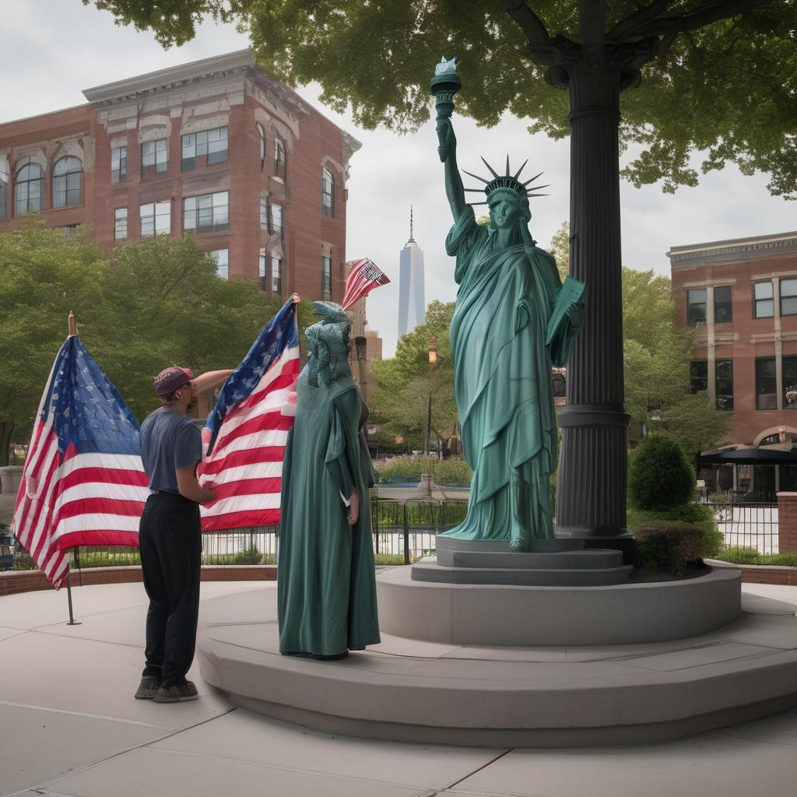 The image features a man and a woman standing in front of a statue of the Statue of Liberty. The man is holding an American flag, while the woman is holding a green flag. They appear to be posing for a picture in front of the iconic statue.
In the background, there are several other people scattered around the area, possibly enjoying the view SBERT similarity: 0.74
Text-to-image model: Stable Diffusion XL | Generated Image Text Reconstruction The image features a person dressed as the Statue of Liberty, standing next to a large statue of the same iconic figure. The person is holding a large American flag, adding to the patriotic theme of the scene.
In the background, there are several other people scattered around the area, possibly admiring the statue or participating in the event. A bench SBERT similarity: 0.72
Text-to-image model: Stable Diffusion 1.5 | Generated Image Text Reconstruction The image features a man standing in front of a large statue of the Statue of Liberty. He is holding a large American flag, proudly displaying it in front of the iconic statue. The man appears to be the main focus of the scene, with the statue serving as a backdrop.
In the background, there are several other people scattered around the area, SBERT similarity: 0.71
Text-to-image model: Stable Diffusion 1.5 | Generated Image Text Reconstruction The image features a large green statue of the Statue of Liberty, standing prominently in the center of the scene. The statue is surrounded by several American flags, with one on the left side, another on the right side, and a third one in the background.
There are multiple people in the scene, with one person standing close to the statue on the right SBERT similarity: 0.69
Text-to-image model: Stable Diffusion XL (Turbo) | Generated Image Text Reconstruction  The image features a large green statue of the Statue of Liberty, standing prominently in a courtyard. A woman is holding a large American flag, standing next to the statue. There are several other people in the scene, some of them standing close to the statue and others further away.
In the background, there is a fountain, adding to SBERT similarity: 0.68
Text-to-image model: Stable Diffusion XL (Turbo) | Generated Image Text Reconstruction The image features a man standing in front of a large statue of the Statue of Liberty. The man is wearing a suit and tie, and he appears to be posing for a picture. The statue is positioned to the right of the man, and it is quite large, covering a significant portion of the background.
There are several other people in the scene SBERT similarity: 0.67
Text-to-image model: Stable Diffusion XL | Generated Image Text Reconstruction The image features a statue of the Statue of Liberty in a public area, with a large American flag prominently displayed in front of it. The statue is positioned on the left side of the scene, while the flag is on the right side.
There are several people in the area, with some standing closer to the statue and others further away. A few SBERT similarity: 0.66
Text-to-image model: Stable Diffusion 3 | Generated Image Text Reconstruction The image features a statue of the Statue of Liberty standing next to a statue of the American flag. The statue of the flag is holding up the flag, creating a patriotic scene. The two statues are positioned close to each other, with the American flag statue on the left and the Statue of Liberty on the right.
In the background, there SBERT similarity: 0.66
Text-to-image model: Stable Diffusion 3 | Generated Image Text Reconstruction 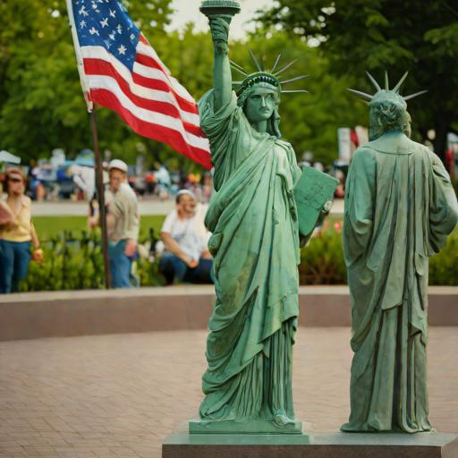 The image features a statue of the Statue of Liberty, which is prominently displayed in a public area. The statue is holding a torch, and it is situated in front of a large American flag. The flag is flying high, adding to the patriotic atmosphere of the scene.
There are several people in the background, likely admiring the statue and the SBERT similarity: 0.63
Text-to-image model: Stable Diffusion XL (Turbo) | Generated Image Text Reconstruction The image features a woman standing next to a large statue of the Statue of Liberty. The statue is holding a flag, and the woman appears to be posing for a picture with the iconic landmark. The scene takes place in a park setting, with a bench visible in the background. The woman is wearing a striped shirt, and the statue is SBERT similarity: 0.62
Text-to-image model: Stable Diffusion 1.5 | Generated Image Text Reconstruction The image features a statue of the Statue of Liberty, which is a well-known symbol of freedom and democracy. The statue is holding a book, possibly representing knowledge and education. A person is standing next to the statue, partially obscured by the statue's arm.
In the background, there are several chairs and benches scattered around, suggesting that SBERT similarity: 0.50
Text-to-image model: Stable Diffusion 3 |